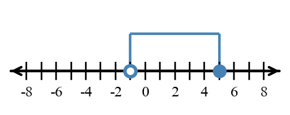
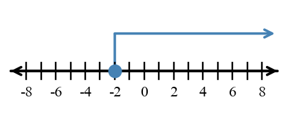
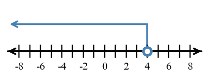

Algebra 1 — Unit 1: Foundations of Functions and Algebra Canonical Bank
Essential Standard: Students will represent and interpret relationships by connecting tables, graphs, equations, and contexts that model the same situation.
U1-MG01: Compute with rational numbers and evaluate numerical or algebraic expressions accurately, using order of operations and substitution while checking reasonableness.
U1-MG02: Rewrite algebraic expressions into equivalent forms by using properties, structure, terms, factors, and the distributive property.
U1-MG03: Solve one-variable equations with equivalent transformations and verify and interpret solutions.
U1-MG04: Solve one-variable inequalities, represent solution sets on number lines, and interpret boundaries and constraints.
Section 1.1: Multiple Representations of Relationships
Learning Target: Students will connect tables, graphs, equations, and contexts that represent the same relationship.
I Can: I can construct a table, graph, equation, or context from another representation of the same relationship. I can use features in one representation to work with a related table, graph, equation, or context. I can determine whether two representations belong to the same relationship using evidence from values, rates, or patterns.
Spiral routing: Intro — Connect tables, graphs, equations, and contexts that represent the same relationship. Review — Interpret and create graphs on the coordinate plane while connecting points, axes, intercepts, and graphical information to mathematical situations. Mastery — Solve inequalities, represent solution sets graphically, and interpret solutions in context.
Whats To Come
U1-S1-WTC01
Intro | DOK 2 | instructional
The graph shows a relationship between time and total distance. Record two ordered pairs from the graph. Then describe one equation or table feature that would have to stay consistent if another representation showed the same relationship.
Teacher answer / solution
Answer: Sample pairs include $(0,3)$ and $(2,7)$. The relationship increases by 2 distance units per time unit and begins at 3, so a matching table/equation must preserve those values and rate.
Solution: The graph is $y=2x+3$ over the displayed context. Any matching representation must preserve its ordered pairs, starting value 3, and constant rate 2.
Notes Example
U1-S1-NOTE-EX01
Intro | DOK 2 | instructional
A table has $x=0,1,2,3$ and $y=4,7,10,13$. Write a rule and identify the starting value and constant rate.
Teacher answer / solution
Answer: The rule is $y=3x+4$; starting value 4; rate 3.
Solution: The rule is $y=3x+4$; starting value 4; rate 3.
U1-S1-NOTE-EX02
Intro | DOK 2 | instructional
The graph shown crosses the $y$-axis at 4 and falls 1 unit for every 1 unit moved right. Write an equation for the line and give one point that must lie on it.
Teacher answer / solution
Answer: $y=-x+4$; examples include $(0,4)$ and $(2,2)$.
Solution: $y=-x+4$; examples include $(0,4)$ and $(2,2)$.
U1-S1-NOTE-EX03
Intro | DOK 2 | instructional
A streaming service has a 6-dollar signup charge and costs 4 dollars per month. Write an equation for total cost $C$ after $m$ months and make a three-row table.
Teacher answer / solution
Answer: $C=4m+6$; for example $(0,6),(1,10),(2,14)$.
Solution: $C=4m+6$; for example $(0,6),(1,10),(2,14)$.
U1-S1-NOTE-EX04
Intro | DOK 2 | instructional
One representation is $y=5x-1$. A proposed matching table contains $(0,-1),(1,4),(2,10)$. Does the table match the equation? Explain.
Teacher answer / solution
Answer: No. When $x=2$, the equation gives $y=9$, not 10.
Solution: No. When $x=2$, the equation gives $y=9$, not 10.
Notes You Try It
U1-S1-NOTE-YTI01
Intro | DOK 2 | instructional
A related table has $x=0,1,2,3$ and $y=-2,2,6,10$. Write a rule and identify the starting value and constant rate.
Teacher answer / solution
Answer: The rule is $y=4x-2$; starting value -2; rate 4.
Solution: The rule is $y=4x-2$; starting value -2; rate 4.
U1-S1-NOTE-YTI02
Intro | DOK 2 | instructional
A line has $y$-intercept -3 and rises 2 units for every 1 unit moved right. Write its equation and list two points on the line.
Teacher answer / solution
Answer: $y=2x-3$; examples include $(0,-3)$ and $(2,1)$.
Solution: $y=2x-3$; examples include $(0,-3)$ and $(2,1)$.
U1-S1-NOTE-YTI03
Intro | DOK 2 | instructional
A club charges 9 dollars to join and 5 dollars per meeting. Write an equation for total cost $T$ after $n$ meetings and give three ordered pairs.
Teacher answer / solution
Answer: $T=5n+9$; for example $(0,9),(1,14),(2,19)$.
Solution: $T=5n+9$; for example $(0,9),(1,14),(2,19)$.
U1-S1-NOTE-YTI04
Intro | DOK 2 | instructional
A table contains $(0,3),(2,9),(4,15)$. Does $y=3x+3$ represent the same relationship? Justify with at least two values.
Teacher answer / solution
Answer: Yes. Each listed input gives the corresponding output under $y=3x+3$.
Solution: Yes. Each listed input gives the corresponding output under $y=3x+3$.
PS1
U1-S1-PS1-M01
Mastery | DOK 2 | instructional | U1-MG04
Solve $-4x+4 \gt -3$. Give the solution as an inequality in $x$.
Teacher answer / solution
Answer: $x \lt \frac{7}{4}$.
Solution: $x \lt \frac{7}{4}$.
U1-S1-PS1-I01
Intro | DOK 1 | instructional
For the relationship $y=-3x-5$, find the output when $x=1$ and write the resulting ordered pair.
Teacher answer / solution
Answer: $y=-8$ and the ordered pair is $(1,-8)$.
Solution: $y=-8$ and the ordered pair is $(1,-8)$.
U1-S1-PS1-M02
Mastery | DOK 2 | instructional | U1-MG04
Solve $-2x+4 \gt -3$. Give the solution as an inequality in $x$.
Teacher answer / solution
Answer: $x \lt \frac{7}{2}$.
Solution: $x \lt \frac{7}{2}$.
U1-S1-PS1-R01
Review | DOK 2 | instructional
A distance graph starts at 1 meters when time is 0 and increases by 3 meters each second. What does the vertical intercept mean in the situation?
Teacher answer / solution
Answer: The object begins 1 meters from the reference point.
Solution: The object begins 1 meters from the reference point.
U1-S1-PS1-M03
Mastery | DOK 2 | instructional | U1-MG04
A supply shelf can hold at most 9 kilograms. Let $w$ be the mass placed in the supply shelf. Write an inequality for the constraint and explain whether the boundary value is included.
Teacher answer / solution
Answer: $w\le 9$; the boundary is included because exactly 9 kilograms is allowed.
Solution: $w\le 9$; the boundary is included because exactly 9 kilograms is allowed.
U1-S1-PS1-I02
Intro | DOK 2 | instructional
A context begins with 11 units and changes by 7 units each step. Which two features would you compare first when deciding whether a table represents the same relationship?
Teacher answer / solution
Answer: Compare the starting value and the per-step rate, then verify actual ordered pairs.
Solution: Compare the starting value and the per-step rate, then verify actual ordered pairs.
U1-S1-PS1-R02
Review | DOK 2 | instructional
On a graph, the horizontal axis is time in minutes marked every 4 units, while the vertical axis is distance in kilometers marked every 2 units. Why can comparing the visual steepness to a graph with different scales be misleading?
Teacher answer / solution
Answer: Different axis scales can change how steep a line looks without changing its actual rate.
Solution: Different axis scales can change how steep a line looks without changing its actual rate.
U1-S1-PS1-M04
Mastery | DOK 2 | instructional | U1-MG04
A solution set is $x \le 1$. Describe the endpoint and ray you would draw on a number line and explain why the endpoint is open or closed.
Teacher answer / solution
Answer: Use a closed circle at 1 and shade to the left; 1 is included.
Solution: Use a closed circle at 1 and shade to the left; 1 is included.
U1-S1-PS1-M05
Mastery | DOK 2 | instructional | U1-MG04
Solve $-4x+5 \gt -3$. Give the solution as an inequality in $x$.
Teacher answer / solution
Answer: $x \lt 2$.
Solution: $x \lt 2$.
U1-S1-PS1-R03
Review | DOK 2 | instructional
A line passes through $(1,4)$ and $(4,10)$. Describe the calculation you would use to find its rate of change.
Teacher answer / solution
Answer: Subtract the y-values and divide by the corresponding change in x: $\frac{y_2-y_1}{x_2-x_1}$.
Solution: Subtract the y-values and divide by the corresponding change in x: $\frac{y_2-y_1}{x_2-x_1}$.
U1-S1-PS1-I03
Intro | DOK 2 | instructional
Two points from a graph are $(1,-6)$ and $(3,-10)$. Find the constant rate of change and use it to predict the output when $x=4$.
Teacher answer / solution
Answer: Rate $=-2$; output $=-12$.
Solution: Rate $=-2$; output $=-12$.
U1-S1-PS1-M06
Mastery | DOK 2 | instructional | U1-MG04
Solve $2x+5 \gt -3$. Give the solution as an inequality in $x$.
Teacher answer / solution
Answer: $x \gt -4$.
Solution: $x \gt -4$.
U1-S1-PS1-M07
Mastery | DOK 2 | instructional | U1-MG04
Solve $3x+5 \gt -3$. Give the solution as an inequality in $x$.
Teacher answer / solution
Answer: $x \gt -\frac{8}{3}$.
Solution: $x \gt -\frac{8}{3}$.
U1-S1-PS1-R04
Review | DOK 1 | instructional
A coordinate graph records the point $(-3,-2)$. State the $x$-coordinate and the $y$-coordinate, then name the quadrant if the point is not on an axis.
Teacher answer / solution
Answer: $x=-3$ and $y=-2$; quadrant III.
Solution: $x=-3$ and $y=-2$; quadrant III.
U1-S1-PS1-I04
Intro | DOK 2 | instructional
A proposed equation is $y=5x-4$. Test the points $(0,-4)$ and $(2,7)$. Do both belong to the relationship? Explain.
Teacher answer / solution
Answer: The first point does; the second does not because the rule gives 6 when $x=2$.
Solution: The first point does; the second does not because the rule gives 6 when $x=2$.
U1-S1-PS1-M08
Mastery | DOK 2 | instructional | U1-MG04
A storage bin can hold at most 3 kilograms. Let $w$ be the mass placed in the storage bin. Write an inequality for the constraint and explain whether the boundary value is included.
Teacher answer / solution
Answer: $w\le 3$; the boundary is included because exactly 3 kilograms is allowed.
Solution: $w\le 3$; the boundary is included because exactly 3 kilograms is allowed.
U1-S1-PS1-M09
Mastery | DOK 2 | instructional | U1-MG04
A solution set is $x \gt -7$. Describe the endpoint and ray you would draw on a number line and explain why the endpoint is open or closed.
Teacher answer / solution
Answer: Use a open circle at -7 and shade to the right; -7 is not included.
Solution: Use a open circle at -7 and shade to the right; -7 is not included.
U1-S1-PS1-M10
Mastery | DOK 2 | instructional | U1-MG04
Solve $-3x+6 \gt -3$. Give the solution as an inequality in $x$.
Teacher answer / solution
Answer: $x \lt 3$.
Solution: $x \lt 3$.
PS2
U1-S1-PS2-I01
Intro | DOK 2 | instructional
Two points from a graph are $(1,-1)$ and $(3,5)$. Find the constant rate of change and use it to predict the output when $x=4$.
Teacher answer / solution
Answer: Rate $=3$; output $=8$.
Solution: Rate $=3$; output $=8$.
U1-S1-PS2-M01
Mastery | DOK 2 | instructional | U1-MG04
A shipping crate can hold at most 4 kilograms. Let $w$ be the mass placed in the shipping crate. Write an inequality for the constraint and explain whether the boundary value is included.
Teacher answer / solution
Answer: $w\le 4$; the boundary is included because exactly 4 kilograms is allowed.
Solution: $w\le 4$; the boundary is included because exactly 4 kilograms is allowed.
U1-S1-PS2-R01
Review | DOK 1 | instructional
A coordinate graph records the point $(3,4)$. State the $x$-coordinate and the $y$-coordinate, then name the quadrant if the point is not on an axis.
Teacher answer / solution
Answer: $x=3$ and $y=4$; quadrant I.
Solution: $x=3$ and $y=4$; quadrant I.
U1-S1-PS2-M02
Mastery | DOK 2 | instructional | U1-MG04
A solution set is $x \ge -5$. Describe the endpoint and ray you would draw on a number line and explain why the endpoint is open or closed.
Teacher answer / solution
Answer: Use a closed circle at -5 and shade to the right; -5 is included.
Solution: Use a closed circle at -5 and shade to the right; -5 is included.
U1-S1-PS2-I02
Intro | DOK 2 | instructional
A proposed equation is $y=-4x-3$. Test the points $(0,-3)$ and $(2,-10)$. Do both belong to the relationship? Explain.
Teacher answer / solution
Answer: The first point does; the second does not because the rule gives -11 when $x=2$.
Solution: The first point does; the second does not because the rule gives -11 when $x=2$.
U1-S1-PS2-M03
Mastery | DOK 2 | instructional | U1-MG04
Solve $-3x+4 \gt -2$. Give the solution as an inequality in $x$.
Teacher answer / solution
Answer: $x \lt 2$.
Solution: $x \lt 2$.
U1-S1-PS2-M04
Mastery | DOK 2 | instructional | U1-MG04
Solve $-2x+4 \gt -2$. Give the solution as an inequality in $x$.
Teacher answer / solution
Answer: $x \lt 3$.
Solution: $x \lt 3$.
U1-S1-PS2-R02
Review | DOK 2 | instructional
A distance graph starts at 2 meters when time is 0 and increases by 5 meters each second. What does the vertical intercept mean in the situation?
Teacher answer / solution
Answer: The object begins 2 meters from the reference point.
Solution: The object begins 2 meters from the reference point.
U1-S1-PS2-M05
Mastery | DOK 2 | instructional | U1-MG04
Solve $3x+4 \gt -2$. Give the solution as an inequality in $x$.
Teacher answer / solution
Answer: $x \gt -2$.
Solution: $x \gt -2$.
U1-S1-PS2-I03
Intro | DOK 2 | instructional
The table contains the pairs $(0,-3)$, $(1,1)$, $(2,5)$, $(3,9)$. Write an equation for the relationship and identify its rate.
Teacher answer / solution
Answer: $y=4x-3$; rate 4.
Solution: $y=4x-3$; rate 4.
U1-S1-PS2-R03
Review | DOK 2 | instructional
On a graph, the horizontal axis is time in minutes marked every 3 units, while the vertical axis is distance in kilometers marked every 3 units. Why can comparing the visual steepness to a graph with different scales be misleading?
Teacher answer / solution
Answer: Different axis scales can change how steep a line looks without changing its actual rate.
Solution: Different axis scales can change how steep a line looks without changing its actual rate.
U1-S1-PS2-M06
Mastery | DOK 2 | instructional | U1-MG04
A shipping crate can hold at most 14 kilograms. Let $w$ be the mass placed in the shipping crate. Write an inequality for the constraint and explain whether the boundary value is included.
Teacher answer / solution
Answer: $w\le 14$; the boundary is included because exactly 14 kilograms is allowed.
Solution: $w\le 14$; the boundary is included because exactly 14 kilograms is allowed.
U1-S1-PS2-I04
Intro | DOK 1 | instructional
For the relationship $y=-4x-2$, find the output when $x=1$ and write the resulting ordered pair.
Teacher answer / solution
Answer: $y=-6$ and the ordered pair is $(1,-6)$.
Solution: $y=-6$ and the ordered pair is $(1,-6)$.
U1-S1-PS2-M07
Mastery | DOK 2 | instructional | U1-MG04
A solution set is $x \ge 5$. Describe the endpoint and ray you would draw on a number line and explain why the endpoint is open or closed.
Teacher answer / solution
Answer: Use a closed circle at 5 and shade to the right; 5 is included.
Solution: Use a closed circle at 5 and shade to the right; 5 is included.
U1-S1-PS2-R04
Review | DOK 2 | instructional
A line passes through $(1,2)$ and $(4,8)$. Describe the calculation you would use to find its rate of change.
Teacher answer / solution
Answer: Subtract the y-values and divide by the corresponding change in x: $\frac{y_2-y_1}{x_2-x_1}$.
Solution: Subtract the y-values and divide by the corresponding change in x: $\frac{y_2-y_1}{x_2-x_1}$.
U1-S1-PS2-M08
Mastery | DOK 2 | instructional | U1-MG04
Solve $2x+5 \gt -2$. Give the solution as an inequality in $x$.
Teacher answer / solution
Answer: $x \gt -\frac{7}{2}$.
Solution: $x \gt -\frac{7}{2}$.
U1-S1-PS2-M09
Mastery | DOK 2 | instructional | U1-MG04
Solve $3x+5 \gt -2$. Give the solution as an inequality in $x$.
Teacher answer / solution
Answer: $x \gt -\frac{7}{3}$.
Solution: $x \gt -\frac{7}{3}$.
U1-S1-PS2-M10
Mastery | DOK 2 | instructional | U1-MG04
Solve $4x+5 \gt -2$. Give the solution as an inequality in $x$.
Teacher answer / solution
Answer: $x \gt -\frac{7}{4}$.
Solution: $x \gt -\frac{7}{4}$.
PS3
U1-S1-PS3-M01
Mastery | DOK 2 | instructional | U1-MG04
Solve $-4x+3 \gt -1$. Give the solution as an inequality in $x$.
Teacher answer / solution
Answer: $x \lt 1$.
Solution: $x \lt 1$.
U1-S1-PS3-I01
Intro | DOK 2 | instructional
The table contains the pairs $(0,-2)$, $(1,-5)$, $(2,-8)$, $(3,-11)$. Write an equation for the relationship and identify its rate.
Teacher answer / solution
Answer: $y=-3x-2$; rate -3.
Solution: $y=-3x-2$; rate -3.
U1-S1-PS3-M02
Mastery | DOK 2 | instructional | U1-MG04
Solve $-2x+3 \gt -1$. Give the solution as an inequality in $x$.
Teacher answer / solution
Answer: $x \lt 2$.
Solution: $x \lt 2$.
U1-S1-PS3-R01
Review | DOK 2 | instructional
A line passes through $(1,1)$ and $(4,11)$. Describe the calculation you would use to find its rate of change.
Teacher answer / solution
Answer: Subtract the y-values and divide by the corresponding change in x: $\frac{y_2-y_1}{x_2-x_1}$.
Solution: Subtract the y-values and divide by the corresponding change in x: $\frac{y_2-y_1}{x_2-x_1}$.
U1-S1-PS3-M03
Mastery | DOK 2 | instructional | U1-MG04
Solve $3x+3 \gt -1$. Give the solution as an inequality in $x$.
Teacher answer / solution
Answer: $x \gt -\frac{4}{3}$.
Solution: $x \gt -\frac{4}{3}$.
U1-S1-PS3-I02
Intro | DOK 1 | instructional
For the relationship $y=4x-2$, find the output when $x=-1$ and write the resulting ordered pair.
Teacher answer / solution
Answer: $y=-6$ and the ordered pair is $(-1,-6)$.
Solution: $y=-6$ and the ordered pair is $(-1,-6)$.
U1-S1-PS3-R02
Review | DOK 1 | instructional
A coordinate graph records the point $(-3,-3)$. State the $x$-coordinate and the $y$-coordinate, then name the quadrant if the point is not on an axis.
Teacher answer / solution
Answer: $x=-3$ and $y=-3$; quadrant III.
Solution: $x=-3$ and $y=-3$; quadrant III.
U1-S1-PS3-M04
Mastery | DOK 2 | instructional | U1-MG04
A supply shelf can hold at most 8 kilograms. Let $w$ be the mass placed in the supply shelf. Write an inequality for the constraint and explain whether the boundary value is included.
Teacher answer / solution
Answer: $w\le 8$; the boundary is included because exactly 8 kilograms is allowed.
Solution: $w\le 8$; the boundary is included because exactly 8 kilograms is allowed.
U1-S1-PS3-M05
Mastery | DOK 2 | instructional | U1-MG04
A solution set is $x \le -2$. Describe the endpoint and ray you would draw on a number line and explain why the endpoint is open or closed.
Teacher answer / solution
Answer: Use a closed circle at -2 and shade to the left; -2 is included.
Solution: Use a closed circle at -2 and shade to the left; -2 is included.
U1-S1-PS3-R03
Review | DOK 2 | instructional
A distance graph starts at 5 meters when time is 0 and increases by 4 meters each second. What does the vertical intercept mean in the situation?
Teacher answer / solution
Answer: The object begins 5 meters from the reference point.
Solution: The object begins 5 meters from the reference point.
U1-S1-PS3-I03
Intro | DOK 2 | instructional
A context begins with 8 units and changes by 2 units each step. Which two features would you compare first when deciding whether a table represents the same relationship?
Teacher answer / solution
Answer: Compare the starting value and the per-step rate, then verify actual ordered pairs.
Solution: Compare the starting value and the per-step rate, then verify actual ordered pairs.
U1-S1-PS3-M06
Mastery | DOK 2 | instructional | U1-MG04
Solve $2x+4 \gt -1$. Give the solution as an inequality in $x$.
Teacher answer / solution
Answer: $x \gt -\frac{5}{2}$.
Solution: $x \gt -\frac{5}{2}$.
U1-S1-PS3-M07
Mastery | DOK 2 | instructional | U1-MG04
Solve $3x+4 \gt -1$. Give the solution as an inequality in $x$.
Teacher answer / solution
Answer: $x \gt -\frac{5}{3}$.
Solution: $x \gt -\frac{5}{3}$.
U1-S1-PS3-R04
Review | DOK 2 | instructional
On a graph, the horizontal axis is time in minutes marked every 6 units, while the vertical axis is distance in kilometers marked every 3 units. Why can comparing the visual steepness to a graph with different scales be misleading?
Teacher answer / solution
Answer: Different axis scales can change how steep a line looks without changing its actual rate.
Solution: Different axis scales can change how steep a line looks without changing its actual rate.
U1-S1-PS3-I04
Intro | DOK 2 | instructional
Two points from a graph are $(1,4)$ and $(3,14)$. Find the constant rate of change and use it to predict the output when $x=4$.
Teacher answer / solution
Answer: Rate $=5$; output $=19$.
Solution: Rate $=5$; output $=19$.
U1-S1-PS3-M08
Mastery | DOK 2 | instructional | U1-MG04
Solve $-5x+5 \gt -1$. Give the solution as an inequality in $x$.
Teacher answer / solution
Answer: $x \lt \frac{6}{5}$.
Solution: $x \lt \frac{6}{5}$.
U1-S1-PS3-M09
Mastery | DOK 2 | instructional | U1-MG04
A supply shelf can hold at most 17 kilograms. Let $w$ be the mass placed in the supply shelf. Write an inequality for the constraint and explain whether the boundary value is included.
Teacher answer / solution
Answer: $w\le 17$; the boundary is included because exactly 17 kilograms is allowed.
Solution: $w\le 17$; the boundary is included because exactly 17 kilograms is allowed.
U1-S1-PS3-M10
Mastery | DOK 2 | instructional | U1-MG04
A solution set is $x \le 7$. Describe the endpoint and ray you would draw on a number line and explain why the endpoint is open or closed.
Teacher answer / solution
Answer: Use a closed circle at 7 and shade to the left; 7 is included.
Solution: Use a closed circle at 7 and shade to the left; 7 is included.
XP
U1-S1-XP-I01
Intro | DOK 2 | instructional
A context begins with 7 units and changes by 2 units each step. Which two features would you compare first when deciding whether a table represents the same relationship?
Teacher answer / solution
Answer: Compare the starting value and the per-step rate, then verify actual ordered pairs.
Solution: Compare the starting value and the per-step rate, then verify actual ordered pairs.
U1-S1-XP-M01
Mastery | DOK 2 | instructional | U1-MG04
Solve $4x+2 \gt 0$. Give the solution as an inequality in $x$.
Teacher answer / solution
Answer: $x \gt -\frac{1}{2}$.
Solution: $x \gt -\frac{1}{2}$.
U1-S1-XP-R01
Review | DOK 2 | instructional
On a graph, the horizontal axis is time in minutes marked every 5 units, while the vertical axis is distance in kilometers marked every 1 units. Why can comparing the visual steepness to a graph with different scales be misleading?
Teacher answer / solution
Answer: Different axis scales can change how steep a line looks without changing its actual rate.
Solution: Different axis scales can change how steep a line looks without changing its actual rate.
U1-S1-XP-M02
Mastery | DOK 2 | instructional | U1-MG04
A storage bin can hold at most 19 kilograms. Let $w$ be the mass placed in the storage bin. Write an inequality for the constraint and explain whether the boundary value is included.
Teacher answer / solution
Answer: $w\le 19$; the boundary is included because exactly 19 kilograms is allowed.
Solution: $w\le 19$; the boundary is included because exactly 19 kilograms is allowed.
U1-S1-XP-I02
Intro | DOK 2 | instructional
Two points from a graph are $(1,-3)$ and $(3,-11)$. Find the constant rate of change and use it to predict the output when $x=4$.
Teacher answer / solution
Answer: Rate $=-4$; output $=-15$.
Solution: Rate $=-4$; output $=-15$.
U1-S1-XP-M03
Mastery | DOK 2 | instructional | U1-MG04
A solution set is $x \ge -7$. Describe the endpoint and ray you would draw on a number line and explain why the endpoint is open or closed.
Teacher answer / solution
Answer: Use a closed circle at -7 and shade to the right; -7 is included.
Solution: Use a closed circle at -7 and shade to the right; -7 is included.
U1-S1-XP-M04
Mastery | DOK 2 | instructional | U1-MG04
Solve $-2x+3 \gt 0$. Give the solution as an inequality in $x$.
Teacher answer / solution
Answer: $x \lt \frac{3}{2}$.
Solution: $x \lt \frac{3}{2}$.
U1-S1-XP-R02
Review | DOK 2 | instructional
A line passes through $(1,3)$ and $(4,10)$. Describe the calculation you would use to find its rate of change.
Teacher answer / solution
Answer: Subtract the y-values and divide by the corresponding change in x: $\frac{y_2-y_1}{x_2-x_1}$.
Solution: Subtract the y-values and divide by the corresponding change in x: $\frac{y_2-y_1}{x_2-x_1}$.
U1-S1-XP-M05
Mastery | DOK 2 | instructional | U1-MG04
Solve $3x+3 \gt 0$. Give the solution as an inequality in $x$.
Teacher answer / solution
Answer: $x \gt -1$.
Solution: $x \gt -1$.
U1-S1-XP-I03
Intro | DOK 2 | instructional
A proposed equation is $y=4x+1$. Test the points $(0,1)$ and $(2,10)$. Do both belong to the relationship? Explain.
Teacher answer / solution
Answer: The first point does; the second does not because the rule gives 9 when $x=2$.
Solution: The first point does; the second does not because the rule gives 9 when $x=2$.
U1-S1-XP-R03
Review | DOK 1 | instructional
A coordinate graph records the point $(-1,4)$. State the $x$-coordinate and the $y$-coordinate, then name the quadrant if the point is not on an axis.
Teacher answer / solution
Answer: $x=-1$ and $y=4$; quadrant II.
Solution: $x=-1$ and $y=4$; quadrant II.
U1-S1-XP-M06
Mastery | DOK 2 | instructional | U1-MG04
Solve $-5x+4 \gt 0$. Give the solution as an inequality in $x$.
Teacher answer / solution
Answer: $x \lt \frac{4}{5}$.
Solution: $x \lt \frac{4}{5}$.
U1-S1-XP-I04
Intro | DOK 2 | instructional
The table contains the pairs $(0,1)$, $(1,-3)$, $(2,-7)$, $(3,-11)$. Write an equation for the relationship and identify its rate.
Teacher answer / solution
Answer: $y=-4x+1$; rate -4.
Solution: $y=-4x+1$; rate -4.
U1-S1-XP-M07
Mastery | DOK 2 | instructional | U1-MG04
A shipping crate can hold at most 12 kilograms. Let $w$ be the mass placed in the shipping crate. Write an inequality for the constraint and explain whether the boundary value is included.
Teacher answer / solution
Answer: $w\le 12$; the boundary is included because exactly 12 kilograms is allowed.
Solution: $w\le 12$; the boundary is included because exactly 12 kilograms is allowed.
U1-S1-XP-R04
Review | DOK 2 | instructional
A distance graph starts at 8 meters when time is 0 and increases by 4 meters each second. What does the vertical intercept mean in the situation?
Teacher answer / solution
Answer: The object begins 8 meters from the reference point.
Solution: The object begins 8 meters from the reference point.
U1-S1-XP-M08
Mastery | DOK 2 | instructional | U1-MG04
A solution set is $x \ge 3$. Describe the endpoint and ray you would draw on a number line and explain why the endpoint is open or closed.
Teacher answer / solution
Answer: Use a closed circle at 3 and shade to the right; 3 is included.
Solution: Use a closed circle at 3 and shade to the right; 3 is included.
U1-S1-XP-M09
Mastery | DOK 2 | instructional | U1-MG04
Solve $3x+4 \gt 0$. Give the solution as an inequality in $x$.
Teacher answer / solution
Answer: $x \gt -\frac{4}{3}$.
Solution: $x \gt -\frac{4}{3}$.
U1-S1-XP-M10
Mastery | DOK 2 | instructional | U1-MG04
Solve $4x+4 \gt 0$. Give the solution as an inequality in $x$.
Teacher answer / solution
Answer: $x \gt -1$.
Solution: $x \gt -1$.
CYU
U1-S1-CYU-I01
Intro | DOK 2 | instructional
A context begins with 6 units and changes by 7 units each step. Which two features would you compare first when deciding whether a table represents the same relationship?
Teacher answer / solution
Answer: Compare the starting value and the per-step rate, then verify actual ordered pairs.
Solution: Compare the starting value and the per-step rate, then verify actual ordered pairs.
U1-S1-CYU-I02
Intro | DOK 2 | instructional
Two points from a graph are $(1,3)$ and $(3,11)$. Find the constant rate of change and use it to predict the output when $x=4$.
Teacher answer / solution
Answer: Rate $=4$; output $=15$.
Solution: Rate $=4$; output $=15$.
U1-S1-CYU-R01
Review | DOK 2 | instructional
On a graph, the horizontal axis is time in minutes marked every 3 units, while the vertical axis is distance in kilometers marked every 1 units. Why can comparing the visual steepness to a graph with different scales be misleading?
Teacher answer / solution
Answer: Different axis scales can change how steep a line looks without changing its actual rate.
Solution: Different axis scales can change how steep a line looks without changing its actual rate.
U1-S1-CYU-R02
Review | DOK 2 | instructional
A line passes through $(1,4)$ and $(4,9)$. Describe the calculation you would use to find its rate of change.
Teacher answer / solution
Answer: Subtract the y-values and divide by the corresponding change in x: $\frac{y_2-y_1}{x_2-x_1}$.
Solution: Subtract the y-values and divide by the corresponding change in x: $\frac{y_2-y_1}{x_2-x_1}$.
U1-S1-CYU-M01
Mastery | DOK 2 | instructional | U1-MG04
Solve $3x-3 \ge 10$. Give the solution as an inequality in $x$.
Teacher answer / solution
Answer: $x \ge \frac{13}{3}$.
Solution: $x \ge \frac{13}{3}$.
U1-S1-CYU-M02
Mastery | DOK 2 | instructional | U1-MG04
A equipment cart can hold at most 11 kilograms. Let $w$ be the mass placed in the equipment cart. Write an inequality for the constraint and explain whether the boundary value is included.
Teacher answer / solution
Answer: $w\le 11$; the boundary is included because exactly 11 kilograms is allowed.
Solution: $w\le 11$; the boundary is included because exactly 11 kilograms is allowed.
Tarsia
U1-S1-TAR-I01
Intro | DOK 1 | instructional
Rule $y=2x+3$ at $x=2$
Teacher answer / solution
Answer: $7$
Solution: $7$
U1-S1-TAR-I02
Intro | DOK 1 | instructional
Rate in $y=3x-1$
Teacher answer / solution
Answer: $3$
Solution: $3$
U1-S1-TAR-I03
Intro | DOK 1 | instructional
Starting value in $y=-2x+5$
Teacher answer / solution
Answer: $5$
Solution: $5$
U1-S1-TAR-I04
Intro | DOK 1 | instructional
Point on $y=4x+1$ for $x=1$
Teacher answer / solution
Answer: $(1\;5)$
Solution: $(1\;5)$
U1-S1-TAR-R01
Review | DOK 1 | instructional
Quadrant of $(-3\;4)$
Teacher answer / solution
Answer: II
Solution: II
U1-S1-TAR-R02
Review | DOK 1 | instructional
Quadrant of $(2\;-5)$
Teacher answer / solution
Answer: IV
Solution: IV
U1-S1-TAR-R03
Review | DOK 1 | instructional
Quadrant of $(5\;3)$
Teacher answer / solution
Answer: I
Solution: I
U1-S1-TAR-R04
Review | DOK 1 | instructional
Quadrant of $(-4\;-2)$
Teacher answer / solution
Answer: III
Solution: III
U1-S1-TAR-M01
Mastery | DOK 1 | instructional | U1-MG04
Solve $2x+1 \gt 9$
Teacher answer / solution
Answer: $x \gt 4$
Solution: $x \gt 4$
U1-S1-TAR-M02
Mastery | DOK 1 | instructional | U1-MG04
Solve $-3x+4 \le -8$
Teacher answer / solution
Answer: $x \ge 4$
Solution: $x \ge 4$
U1-S1-TAR-M03
Mastery | DOK 1 | instructional | U1-MG04
Solve $4x-2 \lt 10$
Teacher answer / solution
Answer: $x \lt 3$
Solution: $x \lt 3$
U1-S1-TAR-M04
Mastery | DOK 1 | instructional | U1-MG04
Solve $-2x+5 \ge 13$
Teacher answer / solution
Answer: $x \le -4$
Solution: $x \le -4$
U1-S1-TAR-M05
Mastery | DOK 1 | instructional | U1-MG04
Solve $x+5\gt68$
Teacher answer / solution
Answer: $x\gt63$
Solution: $x\gt63$
U1-S1-TAR-M06
Mastery | DOK 1 | instructional | U1-MG04
Solve $x+5\gt69$
Teacher answer / solution
Answer: $x\gt64$
Solution: $x\gt64$
U1-S1-TAR-M07
Mastery | DOK 1 | instructional | U1-MG04
Solve $x+5\gt70$
Teacher answer / solution
Answer: $x\gt65$
Solution: $x\gt65$
U1-S1-TAR-M08
Mastery | DOK 1 | instructional | U1-MG04
Solve $x+5\gt71$
Teacher answer / solution
Answer: $x\gt66$
Solution: $x\gt66$
U1-S1-TAR-M09
Mastery | DOK 1 | instructional | U1-MG04
Solve $x+5\gt72$
Teacher answer / solution
Answer: $x\gt67$
Solution: $x\gt67$
U1-S1-TAR-M10
Mastery | DOK 1 | instructional | U1-MG04
Solve $x+5\gt73$
Teacher answer / solution
Answer: $x\gt68$
Solution: $x\gt68$
Blooket
U1-S1-BLK-I01
Intro | DOK 1 | instructional
What is the rate in $y=3x-2$?
3
-2
1
-3
Teacher answer / solution
Answer: 3
Solution: Correct choice: 3
U1-S1-BLK-I02
Intro | DOK 1 | instructional
What is the rate in $y=4x+2$?
2
4
6
-4
Teacher answer / solution
Answer: 4
Solution: Correct choice: 4
U1-S1-BLK-I03
Intro | DOK 1 | instructional
What is the rate in $y=2x+1$?
1
3
2
-2
Teacher answer / solution
Answer: 2
Solution: Correct choice: 2
U1-S1-BLK-I04
Intro | DOK 1 | instructional
What is the rate in $y=-2x+5$?
5
3
2
-2
Teacher answer / solution
Answer: -2
Solution: Correct choice: -2
U1-S1-BLK-I05
Intro | DOK 1 | instructional
What is the rate in $y=5x+3$?
5
3
8
-5
Teacher answer / solution
Answer: 5
Solution: Correct choice: 5
U1-S1-BLK-R01
Review | DOK 1 | instructional
Which quadrant contains $(2,-5)$?
I
IV
II
III
Teacher answer / solution
Answer: IV
Solution: Correct choice: IV
U1-S1-BLK-R02
Review | DOK 1 | instructional
Which quadrant contains $(-4,-2)$?
I
II
III
IV
Teacher answer / solution
Answer: III
Solution: Correct choice: III
U1-S1-BLK-R03
Review | DOK 1 | instructional
Which quadrant contains $(-3,4)$?
I
III
IV
II
Teacher answer / solution
Answer: II
Solution: Correct choice: II
U1-S1-BLK-R04
Review | DOK 1 | instructional
Which quadrant contains $(5,3)$?
I
II
III
IV
Teacher answer / solution
Answer: I
Solution: Correct choice: I
U1-S1-BLK-R05
Review | DOK 1 | instructional
Which quadrant contains $(3,6)$?
II
I
III
IV
Teacher answer / solution
Answer: I
Solution: Correct choice: I
U1-S1-BLK-M01
Mastery | DOK 2 | instructional | U1-MG04
Solve $-3x+4 \le 12$.
x \le -\frac{8}{3}
x \ge \frac{8}{3}
x \ge -\frac{8}{3}
x \le \frac{8}{3}
Teacher answer / solution
Answer: x \ge -\frac{8}{3}
Solution: Correct choice: x \ge -\frac{8}{3}
U1-S1-BLK-M02
Mastery | DOK 2 | instructional | U1-MG04
Solve $-2x+3 \ge 13$.
x \ge -5
x \le 5
x \ge 5
x \le -5
Teacher answer / solution
Answer: x \le -5
Solution: Correct choice: x \le -5
U1-S1-BLK-M03
Mastery | DOK 2 | instructional | U1-MG04
Solve $2x+8 \gt 20$.
x > 6
x < 6
x > -6
x < -6
Teacher answer / solution
Answer: x > 6
Solution: Correct choice: x > 6
U1-S1-BLK-M04
Mastery | DOK 2 | instructional | U1-MG04
Solve $4x-3 \lt 27$.
x > \frac{15}{2}
x < \frac{15}{2}
x < -\frac{15}{2}
x > -\frac{15}{2}
Teacher answer / solution
Answer: x < \frac{15}{2}
Solution: Correct choice: x < \frac{15}{2}
U1-S1-BLK-M05
Mastery | DOK 2 | instructional | U1-MG04
Solve $5x \gt -1$.
x < -\frac{1}{5}
x > \frac{1}{5}
x > -\frac{1}{5}
x < \frac{1}{5}
Teacher answer / solution
Answer: x > -\frac{1}{5}
Solution: Correct choice: x > -\frac{1}{5}
U1-S1-BLK-M06
Mastery | DOK 2 | instructional | U1-MG04
Solve $-3x+6 \le 16$.
x \le -\frac{10}{3}
x \ge \frac{10}{3}
x \le \frac{10}{3}
x \ge -\frac{10}{3}
Teacher answer / solution
Answer: x \ge -\frac{10}{3}
Solution: Correct choice: x \ge -\frac{10}{3}
U1-S1-BLK-M07
Mastery | DOK 2 | instructional | U1-MG04
Solve $-2x+5 \ge 17$.
x \le -6
x \ge -6
x \le 6
x \ge 6
Teacher answer / solution
Answer: x \le -6
Solution: Correct choice: x \le -6
U1-S1-BLK-M08
Mastery | DOK 2 | instructional | U1-MG04
Solve $2x+10 \gt 24$.
x < 7
x > 7
x > -7
x < -7
Teacher answer / solution
Answer: x > 7
Solution: Correct choice: x > 7
U1-S1-BLK-M09
Mastery | DOK 2 | instructional | U1-MG04
Solve $4x-1 \lt 31$.
x > 8
x < -8
x < 8
x > -8
Teacher answer / solution
Answer: x < 8
Solution: Correct choice: x < 8
U1-S1-BLK-M10
Mastery | DOK 2 | instructional | U1-MG04
Solve $5x+2 \gt 3$.
x < \frac{1}{5}
x > -\frac{1}{5}
x < -\frac{1}{5}
x > \frac{1}{5}
Teacher answer / solution
Answer: x > \frac{1}{5}
Solution: Correct choice: x > \frac{1}{5}
Warm-Up 1
U1-S1-WU1-PK01
Review | DOK 2 | instructional
A line passes through $(1,2)$ and $(4,11)$. Describe the calculation you would use to find its rate of change.
Teacher answer / solution
Answer: Subtract the y-values and divide by the corresponding change in x: $\frac{y_2-y_1}{x_2-x_1}$.
Solution: Subtract the y-values and divide by the corresponding change in x: $\frac{y_2-y_1}{x_2-x_1}$.
U1-S1-WU1-PK02
Mastery | DOK 2 | instructional
Solve $4x+3 \ge -2$. Give the solution as an inequality in $x$.
Teacher answer / solution
Answer: $x \ge -\frac{5}{4}$.
Solution: $x \ge -\frac{5}{4}$.
U1-S1-WU1-PK03
Review | DOK 2 | instructional
A distance graph starts at 4 meters when time is 0 and increases by 2 meters each second. What does the vertical intercept mean in the situation?
Teacher answer / solution
Answer: The object begins 4 meters from the reference point.
Solution: The object begins 4 meters from the reference point.
Warm-Up 2
U1-S1-WU2-I01
Intro | DOK 1 | instructional
For the relationship $y=-4x+5$, find the output when $x=3$ and write the resulting ordered pair.
Teacher answer / solution
Answer: $y=-7$ and the ordered pair is $(3,-7)$.
Solution: $y=-7$ and the ordered pair is $(3,-7)$.
U1-S1-WU2-R02
Review | DOK 1 | instructional
A coordinate graph records the point $(6,3)$. State the $x$-coordinate and the $y$-coordinate, then name the quadrant if the point is not on an axis.
Teacher answer / solution
Answer: $x=6$ and $y=3$; quadrant I.
Solution: $x=6$ and $y=3$; quadrant I.
U1-S1-WU2-M03
Mastery | DOK 2 | instructional
A supply shelf can hold at most 7 kilograms. Let $w$ be the mass placed in the supply shelf. Write an inequality for the constraint and explain whether the boundary value is included.
Teacher answer / solution
Answer: $w\le 7$; the boundary is included because exactly 7 kilograms is allowed.
Solution: $w\le 7$; the boundary is included because exactly 7 kilograms is allowed.
Warm-Up 3
U1-S1-WU3-M01
Mastery | DOK 2 | instructional
Solve $-2x+2 \ge 8$. Give the solution as an inequality in $x$.
Teacher answer / solution
Answer: $x \le -3$.
Solution: $x \le -3$.
U1-S1-WU3-I02
Intro | DOK 1 | instructional
For the relationship $y=-3x-2$, find the output when $x=-2$ and write the resulting ordered pair.
Teacher answer / solution
Answer: $y=4$ and the ordered pair is $(-2,4)$.
Solution: $y=4$ and the ordered pair is $(-2,4)$.
U1-S1-WU3-R03
Review | DOK 2 | instructional
On a graph, the horizontal axis is time in minutes marked every 5 units, while the vertical axis is distance in kilometers marked every 3 units. Why can comparing the visual steepness to a graph with different scales be misleading?
Teacher answer / solution
Answer: Different axis scales can change how steep a line looks without changing its actual rate.
Solution: Different axis scales can change how steep a line looks without changing its actual rate.
Exit Ticket A
U1-S1-ET-A-M01
Mastery | DOK 2 | formative-secure | U1-MG04 | U1-EP-S1-ETA-01
Solve $3x+5 \ge -6$. Give the solution as an inequality in $x$.
Teacher answer / solution
Answer: $x \ge -\frac{11}{3}$.
Solution: $x \ge -\frac{11}{3}$.
U1-S1-ET-A-M02
Mastery | DOK 2 | formative-secure | U1-MG04 | U1-EP-S1-ETA-02
Solve $4x+5 \ge -6$. Give the solution as an inequality in $x$.
Teacher answer / solution
Answer: $x \ge -\frac{11}{4}$.
Solution: $x \ge -\frac{11}{4}$.
Exit Ticket B
U1-S1-ET-B-M01
Mastery | DOK 2 | formative-secure | U1-MG04 | U1-EP-S1-ETB-01
Solve $5x+6 \ge -6$. Give the solution as an inequality in $x$.
Teacher answer / solution
Answer: $x \ge -\frac{12}{5}$.
Solution: $x \ge -\frac{12}{5}$.
U1-S1-ET-B-M02
Mastery | DOK 2 | formative-secure | U1-MG04 | U1-EP-S1-ETB-02
Solve $-5x-6 \ge -5$. Give the solution as an inequality in $x$.
Teacher answer / solution
Answer: $x \le -\frac{1}{5}$.
Solution: $x \le -\frac{1}{5}$.
Exit Ticket C
U1-S1-ET-C-M01
Mastery | DOK 2 | formative-secure | U1-MG04 | U1-EP-S1-ETC-01
A solution set is $x \gt 1$. Describe the endpoint and ray you would draw on a number line and explain why the endpoint is open or closed.
Teacher answer / solution
Answer: Use a open circle at 1 and shade to the right; 1 is not included.
Solution: Use a open circle at 1 and shade to the right; 1 is not included.
U1-S1-ET-C-M02
Mastery | DOK 2 | formative-secure | U1-MG04 | U1-EP-S1-ETC-02
Solve $-3x-5 \ge -5$. Give the solution as an inequality in $x$.
Teacher answer / solution
Answer: $x \le 0$.
Solution: $x \le 0$.
Section 1.2: Inputs, Outputs, and Functions
Learning Target: Students will interpret functions as rules that connect inputs and outputs without relying on formal domain and range language.
I Can: I can formulate a rule that connects inputs to outputs in a table, graph, equation, or context. I can apply an input-output rule to generate missing values and ordered pairs. I can assess whether a rule gives one output for each input in a situation.
Spiral routing: Intro — Interpret functions as rules that connect inputs and outputs without relying on formal domain and range language. Review — Identify patterns and represent relationships using input-output rules, tables, words, and symbols. Mastery — Evaluate numerical and algebraic expressions correctly using substitution and order of operations.
Whats To Come
U1-S2-WTC01
Intro | DOK 2 | instructional
A rule sends $1\to5$, $2\to8$, $3\to11$, and $4\to14$. A second rule sends $1\to5$, $2\to8$, $2\to11$, and $4\to14$. Which rule could represent a function? What feature of the input-output pairs matters?
Teacher answer / solution
Answer: The first rule could represent a function. In the second rule, input 2 has two different outputs.
Solution: A function assigns exactly one output to each input. Repeated outputs are allowed, but one input cannot be paired with two different outputs.
Notes Example
U1-S2-NOTE-EX01
Intro | DOK 2 | instructional
A rule is $f(x)=4x-3$. Find $f(2)$, $f(5)$, and $f(-1)$.
Teacher answer / solution
Answer: $f(2)=5$, $f(5)=17$, and $f(-1)=-7$.
Solution: $f(2)=5$, $f(5)=17$, and $f(-1)=-7$.
U1-S2-NOTE-EX02
Intro | DOK 2 | instructional
The input-output pairs are $(0,2),(1,5),(2,8),(3,11)$. Write a rule that produces the outputs.
Teacher answer / solution
Answer: $y=3x+2$.
Solution: $y=3x+2$.
U1-S2-NOTE-EX03
Intro | DOK 2 | instructional
A mapping pairs $1\to4$, $2\to4$, $3\to7$, and $4\to9$. Is it a function? Explain.
Teacher answer / solution
Answer: Yes. Each input has exactly one output; different inputs may share an output.
Solution: Yes. Each input has exactly one output; different inputs may share an output.
U1-S2-NOTE-EX04
Intro | DOK 2 | instructional
A machine first doubles an input and then subtracts 5. Write a rule and find the output for input 7.
Teacher answer / solution
Answer: $y=2x-5$ and the output is 9.
Solution: $y=2x-5$ and the output is 9.
Notes You Try It
U1-S2-NOTE-YTI01
Intro | DOK 2 | instructional
A rule is $g(x)=-2x+7$. Find $g(0)$, $g(3)$, and $g(-4)$.
Teacher answer / solution
Answer: $g(0)=7$, $g(3)=1$, and $g(-4)=15$.
Solution: $g(0)=7$, $g(3)=1$, and $g(-4)=15$.
U1-S2-NOTE-YTI02
Intro | DOK 2 | instructional
The pairs are $(-1,6),(0,4),(1,2),(2,0)$. Write a rule connecting input $x$ to output $y$.
Teacher answer / solution
Answer: $y=-2x+4$.
Solution: $y=-2x+4$.
U1-S2-NOTE-YTI03
Intro | DOK 2 | instructional
A relation contains $(1,5),(2,8),(3,8),(1,9)$. Is it a function? Explain.
Teacher answer / solution
Answer: No. Input 1 is paired with both 5 and 9.
Solution: No. Input 1 is paired with both 5 and 9.
U1-S2-NOTE-YTI04
Intro | DOK 2 | instructional
A process triples an input and then adds 4. Write a rule and determine the input that produces output 19.
A machine multiplies each input by 4 and then adds 6. Write a symbolic rule for output $y$ in terms of input $x$.
Teacher answer / solution
Answer: $y=4x+6$.
Solution: $y=4x+6$.
U1-S2-PS1-M02
Mastery | DOK 2 | instructional | U1-MG01
Evaluate $2x+\frac{3}{2}$ for $x=\frac{3}{2}$.
Teacher answer / solution
Answer: $\frac{9}{2}$.
Solution: $\frac{9}{2}$.
U1-S2-PS1-R01
Review | DOK 2 | instructional
A pattern follows the rule $y=4x-3$. Find the output for input 4 and explain how the rule uses the input.
Teacher answer / solution
Answer: Output 13; multiply input by 4 and then subtract 3.
Solution: Output 13; multiply input by 4 and then subtract 3.
U1-S2-PS1-M03
Mastery | DOK 2 | instructional | U1-MG01
A student evaluates $2+3(5-1)^2$ as 53. Check the result and explain the first step that should be done.
Teacher answer / solution
Answer: First evaluate the parentheses: 5-1=4. Then square, multiply by 3, and add 2; the correct value is 50.
Solution: First evaluate the parentheses: 5-1=4. Then square, multiply by 3, and add 2; the correct value is 50.
U1-S2-PS1-I02
Intro | DOK 2 | instructional
The relation contains $(1,9)$, $(1,11)$, and $(2,13)$. Is it a function? Explain using the input 1.
Teacher answer / solution
Answer: No. Input 1 has two different outputs, 9 and 11.
Solution: No. Input 1 has two different outputs, 9 and 11.
U1-S2-PS1-R02
Review | DOK 2 | instructional
A growing pattern adds 3 tiles each new figure and Figure 1 has 5 tiles. Predict the number of tiles in Figure 7.
Teacher answer / solution
Answer: Figure 7 has $5+6(3)=23$ tiles.
Solution: Figure 7 has $5+6(3)=23$ tiles.
U1-S2-PS1-M04
Mastery | DOK 2 | instructional | U1-MG01
Without exact calculation, decide whether $-14.8+8.3$ should be positive or negative and explain. Then calculate it.
Teacher answer / solution
Answer: It should be negative because 14.8 has the greater magnitude; the value is -6.5.
Solution: It should be negative because 14.8 has the greater magnitude; the value is -6.5.
U1-S2-PS1-M05
Mastery | DOK 2 | instructional | U1-MG01
Evaluate $3x^2-2x+4$ for $x=1$.
Teacher answer / solution
Answer: $5$.
Solution: $5$.
U1-S2-PS1-R03
Review | DOK 2 | instructional
A table shows a constant change of -2 in output whenever input increases by 1. If the pair $(3,12)$ is in the table, find the output at input 5.
Teacher answer / solution
Answer: The output is 8.
Solution: The output is 8.
U1-S2-PS1-I03
Intro | DOK 2 | instructional
A relation contains $(4,5),(5,5),(6,7),(7,9)$. A student says it is not a function because output 5 repeats. Is the student correct? Explain.
Teacher answer / solution
Answer: No. Repeated outputs are allowed; each input still has exactly one output.
Solution: No. Repeated outputs are allowed; each input still has exactly one output.
U1-S2-PS1-M06
Mastery | DOK 1 | instructional | U1-MG01
Evaluate $3+3(1)-1$ using order of operations.
Teacher answer / solution
Answer: $5$.
Solution: $5$.
U1-S2-PS1-M07
Mastery | DOK 2 | instructional | U1-MG01
Evaluate $2x+\frac{3}{2}$ for $x=\frac{3}{4}$.
Teacher answer / solution
Answer: $3$.
Solution: $3$.
U1-S2-PS1-R04
Review | DOK 1 | instructional
The outputs 5, 3, 1, -1 correspond to inputs 0, 1, 2, 3. Describe the repeated change and write the next output.
Teacher answer / solution
Answer: The repeated change is -2; next output -3.
Solution: The repeated change is -2; next output -3.
U1-S2-PS1-I04
Intro | DOK 1 | instructional
In a context relating number of downloads to data used, identify a reasonable input quantity and output quantity.
Teacher answer / solution
Answer: Input: number of tickets; output: total cost.
Solution: Input: number of tickets; output: total cost.
U1-S2-PS1-M08
Mastery | DOK 2 | instructional | U1-MG01
A student evaluates $3+5(5-1)^2$ as 88. Check the result and explain the first step that should be done.
Teacher answer / solution
Answer: First evaluate the parentheses: 5-1=4. Then square, multiply by 5, and add 3; the correct value is 83.
Solution: First evaluate the parentheses: 5-1=4. Then square, multiply by 5, and add 3; the correct value is 83.
U1-S2-PS1-M09
Mastery | DOK 2 | instructional | U1-MG01
Without exact calculation, decide whether $-15.7+8.3$ should be positive or negative and explain. Then calculate it.
Teacher answer / solution
Answer: It should be negative because 15.7 has the greater magnitude; the value is -7.4.
Solution: It should be negative because 15.7 has the greater magnitude; the value is -7.4.
U1-S2-PS1-M10
Mastery | DOK 2 | instructional | U1-MG01
Evaluate $3x^2-2x+4$ for $x=5$.
Teacher answer / solution
Answer: $69$.
Solution: $69$.
PS2
U1-S2-PS2-I01
Intro | DOK 2 | instructional
A relation contains $(2,3),(3,3),(4,5),(5,7)$. A student says it is not a function because output 3 repeats. Is the student correct? Explain.
Teacher answer / solution
Answer: No. Repeated outputs are allowed; each input still has exactly one output.
Solution: No. Repeated outputs are allowed; each input still has exactly one output.
U1-S2-PS2-M01
Mastery | DOK 2 | instructional | U1-MG01
A student evaluates $4+2(6-2)^2$ as 38. Check the result and explain the first step that should be done.
Teacher answer / solution
Answer: First evaluate the parentheses: 6-2=4. Then square, multiply by 2, and add 4; the correct value is 36.
Solution: First evaluate the parentheses: 6-2=4. Then square, multiply by 2, and add 4; the correct value is 36.
U1-S2-PS2-R01
Review | DOK 1 | instructional
The outputs 1, 5, 9, 13 correspond to inputs 0, 1, 2, 3. Describe the repeated change and write the next output.
Teacher answer / solution
Answer: The repeated change is 4; next output 17.
Solution: The repeated change is 4; next output 17.
U1-S2-PS2-M02
Mastery | DOK 2 | instructional | U1-MG01
Without exact calculation, decide whether $-15.4+8.4$ should be positive or negative and explain. Then calculate it.
Teacher answer / solution
Answer: It should be negative because 15.4 has the greater magnitude; the value is -7.
Solution: It should be negative because 15.4 has the greater magnitude; the value is -7.
U1-S2-PS2-I02
Intro | DOK 1 | instructional
In a context relating hours worked to total earnings, identify a reasonable input quantity and output quantity.
Teacher answer / solution
Answer: Input: number of tickets; output: total cost.
Solution: Input: number of tickets; output: total cost.
U1-S2-PS2-M03
Mastery | DOK 2 | instructional | U1-MG01
Evaluate $3x^2-2x+4$ for $x=-2$.
Teacher answer / solution
Answer: $20$.
Solution: $20$.
U1-S2-PS2-M04
Mastery | DOK 1 | instructional | U1-MG01
Evaluate $3+5(6)-6$ using order of operations.
Teacher answer / solution
Answer: $27$.
Solution: $27$.
U1-S2-PS2-R02
Review | DOK 2 | instructional
A pattern follows the rule $y=4x+1$. Find the output for input 5 and explain how the rule uses the input.
Teacher answer / solution
Answer: Output 21; multiply input by 4 and then add 1.
Solution: Output 21; multiply input by 4 and then add 1.
U1-S2-PS2-M05
Mastery | DOK 2 | instructional | U1-MG01
Evaluate $2x+\frac{3}{2}$ for $x=-\frac{3}{2}$.
Teacher answer / solution
Answer: $-\frac{3}{2}$.
Solution: $-\frac{3}{2}$.
U1-S2-PS2-I03
Intro | DOK 1 | instructional
The rule is $f(x)=-4x-2$. Find $f(3)$ and state the input-output pair.
Teacher answer / solution
Answer: $f(3)=-14$; pair $(3,-14)$.
Solution: $f(3)=-14$; pair $(3,-14)$.
U1-S2-PS2-R03
Review | DOK 2 | instructional
A growing pattern adds 5 tiles each new figure and Figure 1 has 6 tiles. Predict the number of tiles in Figure 5.
Teacher answer / solution
Answer: Figure 5 has $6+4(5)=26$ tiles.
Solution: Figure 5 has $6+4(5)=26$ tiles.
U1-S2-PS2-M06
Mastery | DOK 2 | instructional | U1-MG01
A student evaluates $4+4(6-2)^2$ as 72. Check the result and explain the first step that should be done.
Teacher answer / solution
Answer: First evaluate the parentheses: 6-2=4. Then square, multiply by 4, and add 4; the correct value is 68.
Solution: First evaluate the parentheses: 6-2=4. Then square, multiply by 4, and add 4; the correct value is 68.
U1-S2-PS2-I04
Intro | DOK 2 | instructional
A machine multiplies each input by 3 and then adds 4. Write a symbolic rule for output $y$ in terms of input $x$.
Teacher answer / solution
Answer: $y=3x+4$.
Solution: $y=3x+4$.
U1-S2-PS2-M07
Mastery | DOK 2 | instructional | U1-MG01
Without exact calculation, decide whether $-16.4+8.4$ should be positive or negative and explain. Then calculate it.
Teacher answer / solution
Answer: It should be negative because 16.4 has the greater magnitude; the value is -8.
Solution: It should be negative because 16.4 has the greater magnitude; the value is -8.
U1-S2-PS2-R04
Review | DOK 2 | instructional
A table shows a constant change of -2 in output whenever input increases by 1. If the pair $(4,8)$ is in the table, find the output at input 7.
Teacher answer / solution
Answer: The output is 2.
Solution: The output is 2.
U1-S2-PS2-M08
Mastery | DOK 2 | instructional | U1-MG01
Evaluate $3x^2-2x+4$ for $x=0$.
Teacher answer / solution
Answer: $4$.
Solution: $4$.
U1-S2-PS2-M09
Mastery | DOK 1 | instructional | U1-MG01
Evaluate $2+5(4)-4$ using order of operations.
Teacher answer / solution
Answer: $18$.
Solution: $18$.
U1-S2-PS2-M10
Mastery | DOK 2 | instructional | U1-MG01
Evaluate $2x+\frac{3}{2}$ for $x=\frac{1}{4}$.
Teacher answer / solution
Answer: $2$.
Solution: $2$.
PS3
U1-S2-PS3-M01
Mastery | DOK 2 | instructional | U1-MG01
Evaluate $3x^2-2x+4$ for $x=3$.
Teacher answer / solution
Answer: $25$.
Solution: $25$.
U1-S2-PS3-I01
Intro | DOK 1 | instructional
The rule is $f(x)=-3x+2$. Find $f(-3)$ and state the input-output pair.
Teacher answer / solution
Answer: $f(-3)=11$; pair $(-3,11)$.
Solution: $f(-3)=11$; pair $(-3,11)$.
U1-S2-PS3-M02
Mastery | DOK 1 | instructional | U1-MG01
Evaluate $7+4(1)-1$ using order of operations.
Teacher answer / solution
Answer: $10$.
Solution: $10$.
U1-S2-PS3-R01
Review | DOK 2 | instructional
A table shows a constant change of -6 in output whenever input increases by 1. If the pair $(1,13)$ is in the table, find the output at input 4.
Teacher answer / solution
Answer: The output is -5.
Solution: The output is -5.
U1-S2-PS3-M03
Mastery | DOK 2 | instructional | U1-MG01
Evaluate $2x+\frac{3}{2}$ for $x=-\frac{3}{4}$.
Teacher answer / solution
Answer: $0$.
Solution: $0$.
U1-S2-PS3-I02
Intro | DOK 2 | instructional
A machine multiplies each input by 5 and then adds 4. Write a symbolic rule for output $y$ in terms of input $x$.
Teacher answer / solution
Answer: $y=5x+4$.
Solution: $y=5x+4$.
U1-S2-PS3-R02
Review | DOK 1 | instructional
The outputs 5, 9, 13, 17 correspond to inputs 0, 1, 2, 3. Describe the repeated change and write the next output.
Teacher answer / solution
Answer: The repeated change is 4; next output 21.
Solution: The repeated change is 4; next output 21.
U1-S2-PS3-M04
Mastery | DOK 2 | instructional | U1-MG01
A student evaluates $5+3(7-3)^2$ as 56. Check the result and explain the first step that should be done.
Teacher answer / solution
Answer: First evaluate the parentheses: 7-3=4. Then square, multiply by 3, and add 5; the correct value is 53.
Solution: First evaluate the parentheses: 7-3=4. Then square, multiply by 3, and add 5; the correct value is 53.
U1-S2-PS3-M05
Mastery | DOK 2 | instructional | U1-MG01
Without exact calculation, decide whether $-16.9+8.5$ should be positive or negative and explain. Then calculate it.
Teacher answer / solution
Answer: It should be negative because 16.9 has the greater magnitude; the value is -8.4.
Solution: It should be negative because 16.9 has the greater magnitude; the value is -8.4.
U1-S2-PS3-R03
Review | DOK 2 | instructional
A pattern follows the rule $y=4x+1$. Find the output for input 2 and explain how the rule uses the input.
Teacher answer / solution
Answer: Output 9; multiply input by 4 and then add 1.
Solution: Output 9; multiply input by 4 and then add 1.
U1-S2-PS3-I03
Intro | DOK 2 | instructional
The relation contains $(2,6)$, $(2,8)$, and $(3,10)$. Is it a function? Explain using the input 2.
Teacher answer / solution
Answer: No. Input 2 has two different outputs, 6 and 8.
Solution: No. Input 2 has two different outputs, 6 and 8.
U1-S2-PS3-M06
Mastery | DOK 2 | instructional | U1-MG01
Evaluate $3x^2-2x+4$ for $x=4$.
Teacher answer / solution
Answer: $44$.
Solution: $44$.
U1-S2-PS3-M07
Mastery | DOK 1 | instructional | U1-MG01
Evaluate $5+4(3)-3$ using order of operations.
Teacher answer / solution
Answer: $14$.
Solution: $14$.
U1-S2-PS3-R04
Review | DOK 2 | instructional
A growing pattern adds 6 tiles each new figure and Figure 1 has 7 tiles. Predict the number of tiles in Figure 7.
Teacher answer / solution
Answer: Figure 7 has $7+6(6)=43$ tiles.
Solution: Figure 7 has $7+6(6)=43$ tiles.
U1-S2-PS3-I04
Intro | DOK 2 | instructional
A relation contains $(4,6),(5,6),(6,8),(7,10)$. A student says it is not a function because output 6 repeats. Is the student correct? Explain.
Teacher answer / solution
Answer: No. Repeated outputs are allowed; each input still has exactly one output.
Solution: No. Repeated outputs are allowed; each input still has exactly one output.
U1-S2-PS3-M08
Mastery | DOK 2 | instructional | U1-MG01
Evaluate $2x+\frac{3}{2}$ for $x=-1$.
Teacher answer / solution
Answer: $-\frac{1}{2}$.
Solution: $-\frac{1}{2}$.
U1-S2-PS3-M09
Mastery | DOK 2 | instructional | U1-MG01
A student evaluates $4+5(7-3)^2$ as 89. Check the result and explain the first step that should be done.
Teacher answer / solution
Answer: First evaluate the parentheses: 7-3=4. Then square, multiply by 5, and add 4; the correct value is 84.
Solution: First evaluate the parentheses: 7-3=4. Then square, multiply by 5, and add 4; the correct value is 84.
U1-S2-PS3-M10
Mastery | DOK 2 | instructional | U1-MG01
Without exact calculation, decide whether $-17.8+8.5$ should be positive or negative and explain. Then calculate it.
Teacher answer / solution
Answer: It should be negative because 17.8 has the greater magnitude; the value is -9.3.
Solution: It should be negative because 17.8 has the greater magnitude; the value is -9.3.
XP
U1-S2-XP-I01
Intro | DOK 2 | instructional
The relation contains $(3,8)$, $(3,10)$, and $(4,12)$. Is it a function? Explain using the input 3.
Teacher answer / solution
Answer: No. Input 3 has two different outputs, 8 and 10.
Solution: No. Input 3 has two different outputs, 8 and 10.
U1-S2-XP-M01
Mastery | DOK 2 | instructional | U1-MG01
Evaluate $2x+\frac{3}{2}$ for $x=\frac{1}{2}$.
Teacher answer / solution
Answer: $\frac{5}{2}$.
Solution: $\frac{5}{2}$.
U1-S2-XP-R01
Review | DOK 2 | instructional
A growing pattern adds 4 tiles each new figure and Figure 1 has 9 tiles. Predict the number of tiles in Figure 8.
Teacher answer / solution
Answer: Figure 8 has $9+7(4)=37$ tiles.
Solution: Figure 8 has $9+7(4)=37$ tiles.
U1-S2-XP-M02
Mastery | DOK 2 | instructional | U1-MG01
A student evaluates $6+2(8-1)^2$ as 106. Check the result and explain the first step that should be done.
Teacher answer / solution
Answer: First evaluate the parentheses: 8-1=7. Then square, multiply by 2, and add 6; the correct value is 104.
Solution: First evaluate the parentheses: 8-1=7. Then square, multiply by 2, and add 6; the correct value is 104.
U1-S2-XP-I02
Intro | DOK 2 | instructional
A relation contains $(2,4),(3,4),(4,6),(5,8)$. A student says it is not a function because output 4 repeats. Is the student correct? Explain.
Teacher answer / solution
Answer: No. Repeated outputs are allowed; each input still has exactly one output.
Solution: No. Repeated outputs are allowed; each input still has exactly one output.
U1-S2-XP-M03
Mastery | DOK 2 | instructional | U1-MG01
Without exact calculation, decide whether $-17.6+8.6$ should be positive or negative and explain. Then calculate it.
Teacher answer / solution
Answer: It should be negative because 17.6 has the greater magnitude; the value is -9.
Solution: It should be negative because 17.6 has the greater magnitude; the value is -9.
U1-S2-XP-M04
Mastery | DOK 2 | instructional | U1-MG01
Evaluate $3x^2-2x+4$ for $x=-4$.
Teacher answer / solution
Answer: $60$.
Solution: $60$.
U1-S2-XP-R02
Review | DOK 2 | instructional
A table shows a constant change of -5 in output whenever input increases by 1. If the pair $(2,9)$ is in the table, find the output at input 6.
Teacher answer / solution
Answer: The output is -11.
Solution: The output is -11.
U1-S2-XP-M05
Mastery | DOK 1 | instructional | U1-MG01
Evaluate $4+5(1)-1$ using order of operations.
Teacher answer / solution
Answer: $8$.
Solution: $8$.
U1-S2-XP-I03
Intro | DOK 1 | instructional
In a context relating number of laps to distance traveled, identify a reasonable input quantity and output quantity.
Teacher answer / solution
Answer: Input: number of tickets; output: total cost.
Solution: Input: number of tickets; output: total cost.
U1-S2-XP-R03
Review | DOK 1 | instructional
The outputs 5, 7, 9, 11 correspond to inputs 0, 1, 2, 3. Describe the repeated change and write the next output.
Teacher answer / solution
Answer: The repeated change is 2; next output 13.
Solution: The repeated change is 2; next output 13.
U1-S2-XP-M06
Mastery | DOK 2 | instructional | U1-MG01
Evaluate $2x+\frac{3}{2}$ for $x=-\frac{1}{2}$.
Teacher answer / solution
Answer: $\frac{1}{2}$.
Solution: $\frac{1}{2}$.
U1-S2-XP-I04
Intro | DOK 1 | instructional
The rule is $f(x)=-4x+5$. Find $f(2)$ and state the input-output pair.
Teacher answer / solution
Answer: $f(2)=-3$; pair $(2,-3)$.
Solution: $f(2)=-3$; pair $(2,-3)$.
U1-S2-XP-M07
Mastery | DOK 2 | instructional | U1-MG01
A student evaluates $6+4(8-1)^2$ as 206. Check the result and explain the first step that should be done.
Teacher answer / solution
Answer: First evaluate the parentheses: 8-1=7. Then square, multiply by 4, and add 6; the correct value is 202.
Solution: First evaluate the parentheses: 8-1=7. Then square, multiply by 4, and add 6; the correct value is 202.
U1-S2-XP-R04
Review | DOK 2 | instructional
A pattern follows the rule $y=-2x-3$. Find the output for input 6 and explain how the rule uses the input.
Teacher answer / solution
Answer: Output -15; multiply input by -2 and then subtract 3.
Solution: Output -15; multiply input by -2 and then subtract 3.
U1-S2-XP-M08
Mastery | DOK 2 | instructional | U1-MG01
Without exact calculation, decide whether $-18.6+8.6$ should be positive or negative and explain. Then calculate it.
Teacher answer / solution
Answer: It should be negative because 18.6 has the greater magnitude; the value is -10.
Solution: It should be negative because 18.6 has the greater magnitude; the value is -10.
U1-S2-XP-M09
Mastery | DOK 2 | instructional | U1-MG01
Evaluate $3x^2-2x+4$ for $x=-3$.
Teacher answer / solution
Answer: $37$.
Solution: $37$.
U1-S2-XP-M10
Mastery | DOK 1 | instructional | U1-MG01
Evaluate $2+2(6)-6$ using order of operations.
Teacher answer / solution
Answer: $8$.
Solution: $8$.
CYU
U1-S2-CYU-I01
Intro | DOK 1 | instructional
In a context relating number of tickets purchased to total cost, identify a reasonable input quantity and output quantity.
Teacher answer / solution
Answer: Input: number of tickets; output: total cost.
Solution: Input: number of tickets; output: total cost.
U1-S2-CYU-I02
Intro | DOK 1 | instructional
The rule is $f(x)=-4x-2$. Find $f(4)$ and state the input-output pair.
Teacher answer / solution
Answer: $f(4)=-18$; pair $(4,-18)$.
Solution: $f(4)=-18$; pair $(4,-18)$.
U1-S2-CYU-R01
Review | DOK 2 | instructional
A table shows a constant change of -3 in output whenever input increases by 1. If the pair $(1,8)$ is in the table, find the output at input 4.
Teacher answer / solution
Answer: The output is -1.
Solution: The output is -1.
U1-S2-CYU-R02
Review | DOK 2 | instructional
A pattern follows the rule $y=2x+1$. Find the output for input 3 and explain how the rule uses the input.
Teacher answer / solution
Answer: Output 7; multiply input by 2 and then add 1.
Solution: Output 7; multiply input by 2 and then add 1.
U1-S2-CYU-M01
Mastery | DOK 2 | instructional | U1-MG01
A student evaluates $3+2(7-1)^2$ as 77. Check the result and explain the first step that should be done.
Teacher answer / solution
Answer: First evaluate the parentheses: 7-1=6. Then square, multiply by 2, and add 3; the correct value is 75.
Solution: First evaluate the parentheses: 7-1=6. Then square, multiply by 2, and add 3; the correct value is 75.
U1-S2-CYU-M02
Mastery | DOK 2 | instructional | U1-MG01
Without exact calculation, decide whether $-15.2+3.4$ should be positive or negative and explain. Then calculate it.
Teacher answer / solution
Answer: It should be negative because 15.2 has the greater magnitude; the value is -11.8.
Solution: It should be negative because 15.2 has the greater magnitude; the value is -11.8.
Tarsia
U1-S2-TAR-I01
Intro | DOK 1 | instructional
$f(x)=2x+3$ and $x=4$
Teacher answer / solution
Answer: $f(4)=11$
Solution: $f(4)=11$
U1-S2-TAR-I02
Intro | DOK 1 | instructional
Input in ordered pair $(5\;14)$
Teacher answer / solution
Answer: $5$
Solution: $5$
U1-S2-TAR-I03
Intro | DOK 1 | instructional
One input paired with two different outputs
Teacher answer / solution
Answer: not a function
Solution: not a function
U1-S2-TAR-I04
Intro | DOK 1 | instructional
Each input has exactly one output
Teacher answer / solution
Answer: function
Solution: function
U1-S2-TAR-R01
Review | DOK 1 | instructional
$2\;5\;8\;11$ next term
Teacher answer / solution
Answer: $14$
Solution: $14$
U1-S2-TAR-R02
Review | DOK 1 | instructional
Rule adds 4 each step from 3
Teacher answer / solution
Answer: $y=4x-1$
Solution: $y=4x-1$
U1-S2-TAR-R03
Review | DOK 1 | instructional
Change from 7 to 12
Teacher answer / solution
Answer: $+5$
Solution: $+5$
U1-S2-TAR-R04
Review | DOK 1 | instructional
Constant change when output rises 68 for one input step
Teacher answer / solution
Answer: $68$
Solution: $68$
U1-S2-TAR-M01
Mastery | DOK 1 | instructional | U1-MG01
Evaluate $x+67$ at $x=2$
Teacher answer / solution
Answer: $69$
Solution: $69$
U1-S2-TAR-M02
Mastery | DOK 1 | instructional | U1-MG01
Evaluate $2^3+5$
Teacher answer / solution
Answer: $13$
Solution: $13$
U1-S2-TAR-M03
Mastery | DOK 1 | instructional | U1-MG01
Evaluate $x+69$ at $x=2$
Teacher answer / solution
Answer: $71$
Solution: $71$
U1-S2-TAR-M04
Mastery | DOK 1 | instructional | U1-MG01
Evaluate $x^2-1$ at $x=-3$
Teacher answer / solution
Answer: $8$
Solution: $8$
U1-S2-TAR-M05
Mastery | DOK 1 | instructional | U1-MG01
Evaluate $2x+\frac{1}{2}$ at $x=\frac{3}{4}$
Teacher answer / solution
Answer: $2$
Solution: $2$
U1-S2-TAR-M06
Mastery | DOK 1 | instructional | U1-MG01
Evaluate $x+72$ at $x=2$
Teacher answer / solution
Answer: $74$
Solution: $74$
U1-S2-TAR-M07
Mastery | DOK 1 | instructional | U1-MG01
Evaluate $x+73$ at $x=2$
Teacher answer / solution
Answer: $75$
Solution: $75$
U1-S2-TAR-M08
Mastery | DOK 1 | instructional | U1-MG01
Evaluate $x+74$ at $x=2$
Teacher answer / solution
Answer: $76$
Solution: $76$
U1-S2-TAR-M09
Mastery | DOK 1 | instructional | U1-MG01
Evaluate $x+75$ at $x=2$
Teacher answer / solution
Answer: $77$
Solution: $77$
U1-S2-TAR-M10
Mastery | DOK 1 | instructional | U1-MG01
Evaluate $x+76$ at $x=2$
Teacher answer / solution
Answer: $78$
Solution: $78$
Blooket
U1-S2-BLK-I01
Intro | DOK 1 | instructional
For $f(x)=3x-2$ what is $f(2)$?
4
8
0
6
Teacher answer / solution
Answer: 4
Solution: Correct choice: 4
U1-S2-BLK-I02
Intro | DOK 1 | instructional
For $f(x)=3x-2$ what is $f(4)$?
14
10
2
12
Teacher answer / solution
Answer: 10
Solution: Correct choice: 10
U1-S2-BLK-I03
Intro | DOK 1 | instructional
For $f(x)=3x-2$ what is $f(1)$?
5
-1
1
3
Teacher answer / solution
Answer: 1
Solution: Correct choice: 1
U1-S2-BLK-I04
Intro | DOK 1 | instructional
For $f(x)=3x-2$ what is $f(3)$?
11
1
9
7
Teacher answer / solution
Answer: 7
Solution: Correct choice: 7
U1-S2-BLK-I05
Intro | DOK 1 | instructional
For $f(x)=3x-2$ what is $f(5)$?
13
17
3
15
Teacher answer / solution
Answer: 13
Solution: Correct choice: 13
U1-S2-BLK-R01
Review | DOK 1 | instructional
A pattern is 5 9 13 17. What comes next?
20
21
22
25
Teacher answer / solution
Answer: 21
Solution: Correct choice: 21
U1-S2-BLK-R02
Review | DOK 1 | instructional
A pattern is 10 12 14 16. What comes next?
17
19
18
20
Teacher answer / solution
Answer: 18
Solution: Correct choice: 18
U1-S2-BLK-R03
Review | DOK 1 | instructional
A pattern is 2 5 8 11. What comes next?
13
15
17
14
Teacher answer / solution
Answer: 14
Solution: Correct choice: 14
U1-S2-BLK-R04
Review | DOK 1 | instructional
A pattern is -1 4 9 14. What comes next?
19
18
20
24
Teacher answer / solution
Answer: 19
Solution: Correct choice: 19
U1-S2-BLK-R05
Review | DOK 1 | instructional
A pattern is 3 9 15 21. What comes next?
26
27
28
33
Teacher answer / solution
Answer: 27
Solution: Correct choice: 27
U1-S2-BLK-M01
Mastery | DOK 2 | instructional | U1-MG01
Evaluate $3x^2-2x+5$ for $x=3$.
38
80
26
11
Teacher answer / solution
Answer: 26
Solution: Correct choice: 26
U1-S2-BLK-M02
Mastery | DOK 2 | instructional | U1-MG01
Evaluate $3x^2-2x+5$ for $x=-3$.
26
92
23
38
Teacher answer / solution
Answer: 38
Solution: Correct choice: 38
U1-S2-BLK-M03
Mastery | DOK 2 | instructional | U1-MG01
Evaluate $3x^2-2x+6$ for $x=-2$.
22
14
46
4
Teacher answer / solution
Answer: 22
Solution: Correct choice: 22
U1-S2-BLK-M04
Mastery | DOK 2 | instructional | U1-MG01
Evaluate $3x^2-2x+6$ for $x=4$.
62
46
142
28
Teacher answer / solution
Answer: 46
Solution: Correct choice: 46
U1-S2-BLK-M05
Mastery | DOK 2 | instructional | U1-MG01
Evaluate $3x^2-2x+6$ for $x=2$.
22
38
14
-4
Teacher answer / solution
Answer: 14
Solution: Correct choice: 14
U1-S2-BLK-M06
Mastery | DOK 2 | instructional | U1-MG01
Evaluate $3x^2-2x+7$ for $x=3$.
40
82
7
28
Teacher answer / solution
Answer: 28
Solution: Correct choice: 28
U1-S2-BLK-M07
Mastery | DOK 2 | instructional | U1-MG01
Evaluate $3x^2-2x+7$ for $x=-3$.
40
28
94
19
Teacher answer / solution
Answer: 40
Solution: Correct choice: 40
U1-S2-BLK-M08
Mastery | DOK 2 | instructional | U1-MG01
Evaluate $3x^2-2x+8$ for $x=-2$.
16
24
48
0
Teacher answer / solution
Answer: 24
Solution: Correct choice: 24
U1-S2-BLK-M09
Mastery | DOK 2 | instructional | U1-MG01
Evaluate $3x^2-2x+8$ for $x=4$.
64
144
48
24
Teacher answer / solution
Answer: 48
Solution: Correct choice: 48
U1-S2-BLK-M10
Mastery | DOK 2 | instructional | U1-MG01
Evaluate $3x^2-2x+8$ for $x=2$.
24
40
-8
16
Teacher answer / solution
Answer: 16
Solution: Correct choice: 16
Warm-Up 1
U1-S2-WU1-PK01
Review | DOK 2 | instructional
A table shows a constant change of -3 in output whenever input increases by 1. If the pair $(1,14)$ is in the table, find the output at input 5.
Teacher answer / solution
Answer: The output is 2.
Solution: The output is 2.
U1-S2-WU1-PK02
Mastery | DOK 2 | instructional
A student evaluates $5+5(6-1)^2$ as 135. Check the result and explain the first step that should be done.
Teacher answer / solution
Answer: First evaluate the parentheses: 6-1=5. Then square, multiply by 5, and add 5; the correct value is 130.
Solution: First evaluate the parentheses: 6-1=5. Then square, multiply by 5, and add 5; the correct value is 130.
U1-S2-WU1-PK03
Review | DOK 2 | instructional
A pattern follows the rule $y=3x+1$. Find the output for input 6 and explain how the rule uses the input.
Teacher answer / solution
Answer: Output 19; multiply input by 3 and then add 1.
Solution: Output 19; multiply input by 3 and then add 1.
Warm-Up 2
U1-S2-WU2-I01
Intro | DOK 2 | instructional
A machine multiplies each input by 3 and then adds 5. Write a symbolic rule for output $y$ in terms of input $x$.
Teacher answer / solution
Answer: $y=3x+5$.
Solution: $y=3x+5$.
U1-S2-WU2-R02
Review | DOK 1 | instructional
The outputs -3, 1, 5, 9 correspond to inputs 0, 1, 2, 3. Describe the repeated change and write the next output.
Teacher answer / solution
Answer: The repeated change is 4; next output 13.
Solution: The repeated change is 4; next output 13.
U1-S2-WU2-M03
Mastery | DOK 2 | instructional
A student evaluates $5+2(6-2)^2$ as 39. Check the result and explain the first step that should be done.
Teacher answer / solution
Answer: First evaluate the parentheses: 6-2=4. Then square, multiply by 2, and add 5; the correct value is 37.
Solution: First evaluate the parentheses: 6-2=4. Then square, multiply by 2, and add 5; the correct value is 37.
Warm-Up 3
U1-S2-WU3-M01
Mastery | DOK 1 | instructional
Evaluate $4+5(6)-6$ using order of operations.
Teacher answer / solution
Answer: $28$.
Solution: $28$.
U1-S2-WU3-I02
Intro | DOK 2 | instructional
The relation contains $(5,9)$, $(5,11)$, and $(6,13)$. Is it a function? Explain using the input 5.
Teacher answer / solution
Answer: No. Input 5 has two different outputs, 9 and 11.
Solution: No. Input 5 has two different outputs, 9 and 11.
U1-S2-WU3-R03
Review | DOK 2 | instructional
A growing pattern adds 7 tiles each new figure and Figure 1 has 6 tiles. Predict the number of tiles in Figure 8.
Teacher answer / solution
Answer: Figure 8 has $6+7(7)=55$ tiles.
Solution: Figure 8 has $6+7(7)=55$ tiles.
Exit Ticket A
U1-S2-ET-A-M01
Mastery | DOK 1 | formative-secure | U1-MG01 | U1-EP-S2-ETA-01
Evaluate $2+3(5)-5$ using order of operations.
Teacher answer / solution
Answer: $12$.
Solution: $12$.
U1-S2-ET-A-M02
Mastery | DOK 1 | formative-secure | U1-MG01 | U1-EP-S2-ETA-02
Evaluate $6+3(5)-5$ using order of operations.
Teacher answer / solution
Answer: $16$.
Solution: $16$.
Exit Ticket B
U1-S2-ET-B-M01
Mastery | DOK 2 | formative-secure | U1-MG01 | U1-EP-S2-ETB-01
A student evaluates $5+2(7-2)^2$ as 57. Check the result and explain the first step that should be done.
Teacher answer / solution
Answer: First evaluate the parentheses: 7-2=5. Then square, multiply by 2, and add 5; the correct value is 55.
Solution: First evaluate the parentheses: 7-2=5. Then square, multiply by 2, and add 5; the correct value is 55.
U1-S2-ET-B-M02
Mastery | DOK 1 | formative-secure | U1-MG01 | U1-EP-S2-ETB-02
Evaluate $8+3(5)-5$ using order of operations.
Teacher answer / solution
Answer: $18$.
Solution: $18$.
Exit Ticket C
U1-S2-ET-C-M01
Mastery | DOK 2 | formative-secure | U1-MG01 | U1-EP-S2-ETC-01
Without exact calculation, decide whether $-12.1+5.9$ should be positive or negative and explain. Then calculate it.
Teacher answer / solution
Answer: It should be negative because 12.1 has the greater magnitude; the value is -6.2.
Solution: It should be negative because 12.1 has the greater magnitude; the value is -6.2.
U1-S2-ET-C-M02
Mastery | DOK 2 | formative-secure | U1-MG01 | U1-EP-S2-ETC-02
A student evaluates $5+2(8-2)^2$ as 79. Check the result and explain the first step that should be done.
Teacher answer / solution
Answer: First evaluate the parentheses: 8-2=6. Then square, multiply by 2, and add 5; the correct value is 77.
Solution: First evaluate the parentheses: 8-2=6. Then square, multiply by 2, and add 5; the correct value is 77.
Section 1.3: Function Families
Learning Target: Students will recognize common function families from graphs, tables, equations, and contexts.
I Can: I can design examples of linear, quadratic, exponential, and absolute value relationships using more than one representation. I can extend patterns in tables, graphs, equations, and contexts to work with common function families. I can critique a proposed function family choice using evidence from rate of change, shape, or equation structure.
Vocabulary: linear, quadratic, exponential, absolute value, function family
Spiral routing: Intro — Recognize common function families from graphs, tables, equations, and contexts. Review — Recognize constant rate of change in tables, graphs, visual patterns, and situations. Mastery — Accurately perform operations with integers, fractions, and decimals while interpreting results in mathematical and contextual situations.
Whats To Come
U1-S3-WTC01
Intro | DOK 2 | instructional
Four unlabeled graphs are shown. Match each graph to one family name—linear, quadratic, exponential, or absolute value—and write one visual or numerical clue you used for each match.
For $x=0,1,2,3$, a table has $y=2,5,8,11$. Identify the likely family and state the evidence.
Teacher answer / solution
Answer: Linear; the first differences are constant at 3.
Solution: Linear; the first differences are constant at 3.
U1-S3-NOTE-EX03
Intro | DOK 2 | instructional
Compare the two graphs shown. Which graph is quadratic and which is exponential? Give one feature beyond “it curves.”
Teacher answer / solution
Answer: The left graph is quadratic and the right graph is exponential. The quadratic is symmetric with a vertex; the exponential has multiplicative growth and a horizontal approach on one side.
Solution: The left graph is quadratic and the right graph is exponential. The quadratic is symmetric with a vertex; the exponential has multiplicative growth and a horizontal approach on one side.
U1-S3-NOTE-EX04
Intro | DOK 2 | instructional
A taxi cost increases by the same amount per mile. A bacteria culture multiplies by the same factor each hour. Choose a likely family for each and explain.
Teacher answer / solution
Answer: Taxi: linear because additive change is constant. Bacteria: exponential because multiplicative change is constant.
Solution: Taxi: linear because additive change is constant. Bacteria: exponential because multiplicative change is constant.
For inputs 0,1,2,3,4 the outputs are 2,3,6,11,18. Identify the likely family and explain why constant first differences are not expected.
Teacher answer / solution
Answer: Quadratic; the first differences change while second differences are constant.
Solution: Quadratic; the first differences change while second differences are constant.
U1-S3-PS1-M02
Mastery | DOK 2 | instructional | U1-MG01
Compute $-8-4$ and describe its location relative to -8 on a number line.
Teacher answer / solution
Answer: $-12$; it is 4 units to the left of -8.
Solution: $-12$; it is 4 units to the left of -8.
U1-S3-PS1-R01
Review | DOK 2 | instructional
A line has constant rate 2 and passes through $(0,4)$. Write its equation.
Teacher answer / solution
Answer: $y=2x+4$.
Solution: $y=2x+4$.
U1-S3-PS1-M03
Mastery | DOK 2 | instructional | U1-MG01
A temperature is -4 degrees and rises 7 degrees. Find the new temperature and state whether crossing zero is reasonable.
Teacher answer / solution
Answer: 3 degrees; yes, the increase is larger than the original distance to zero.
Solution: 3 degrees; yes, the increase is larger than the original distance to zero.
U1-S3-PS1-I02
Intro | DOK 1 | instructional
Classify $y=3|x-3|+3$ and name the structural clue in the equation.
Teacher answer / solution
Answer: Absolute value; the variable expression is inside absolute-value bars.
Solution: Absolute value; the variable expression is inside absolute-value bars.
U1-S3-PS1-R02
Review | DOK 1 | instructional
Plan A increases by 4 units per step; Plan B increases by 6 units per step. Which has the greater rate and by how much?
Teacher answer / solution
Answer: Plan B by 2 units per step.
Solution: Plan B by 2 units per step.
U1-S3-PS1-M04
Mastery | DOK 2 | instructional | U1-MG01
Compute $\frac{4}{6}\left(-\frac{5}{7}\right)$ and predict the sign before multiplying.
Teacher answer / solution
Answer: Negative; the value is $-\frac{10}{21}$.
Solution: Negative; the value is $-\frac{10}{21}$.
U1-S3-PS1-M05
Mastery | DOK 1 | instructional | U1-MG01
Compute $-\frac{5}{4}+\frac{1}{2}$.
Teacher answer / solution
Answer: $-\frac{3}{4}$.
Solution: $-\frac{3}{4}$.
U1-S3-PS1-R03
Review | DOK 2 | instructional
A table’s output changes by 5 when input rises by 1. Explain what this number would represent on the graph of the relationship.
Teacher answer / solution
Answer: It is the slope/rate: the vertical change of 5 for each 1-unit horizontal increase.
Solution: It is the slope/rate: the vertical change of 5 for each 1-unit horizontal increase.
U1-S3-PS1-I03
Intro | DOK 2 | instructional
A quantity starts at 10 and grows by 10% each year. Which function family is most appropriate and why?
Teacher answer / solution
Answer: Exponential, because equal time intervals use the same multiplicative factor 1.10.
Solution: Exponential, because equal time intervals use the same multiplicative factor 1.10.
U1-S3-PS1-M06
Mastery | DOK 1 | instructional | U1-MG01
Compute $(2.5)(1.2)$.
Teacher answer / solution
Answer: $3$.
Solution: $3$.
U1-S3-PS1-M07
Mastery | DOK 2 | instructional | U1-MG01
Compute $-11-7$ and describe its location relative to -11 on a number line.
Teacher answer / solution
Answer: $-18$; it is 7 units to the left of -11.
Solution: $-18$; it is 7 units to the left of -11.
U1-S3-PS1-R04
Review | DOK 2 | instructional
A table includes $(1,3)$ and $(5,15)$. Find the constant rate of change.
Teacher answer / solution
Answer: Rate $=3$.
Solution: Rate $=3$.
U1-S3-PS1-I04
Intro | DOK 2 | instructional
A quantity changes by 4 whenever $x$ increases by 1. Which family is the first model to test, and what additional evidence would confirm it?
Teacher answer / solution
Answer: Linear; confirm constant first differences or a constant slope/equation of the form $y=mx+b$.
Solution: Linear; confirm constant first differences or a constant slope/equation of the form $y=mx+b$.
U1-S3-PS1-M08
Mastery | DOK 2 | instructional | U1-MG01
A temperature is -5.1 degrees and rises 8.1 degrees. Find the new temperature and state whether crossing zero is reasonable.
Teacher answer / solution
Answer: 3 degrees; yes, the increase is larger than the original distance to zero.
Solution: 3 degrees; yes, the increase is larger than the original distance to zero.
U1-S3-PS1-M09
Mastery | DOK 2 | instructional | U1-MG01
Compute $\frac{6}{9}\left(-\frac{5}{7}\right)$ and predict the sign before multiplying.
Teacher answer / solution
Answer: Negative; the value is $-\frac{10}{21}$.
Solution: Negative; the value is $-\frac{10}{21}$.
U1-S3-PS1-M10
Mastery | DOK 1 | instructional | U1-MG01
Compute $\frac{5}{4}-\frac{3}{2}$.
Teacher answer / solution
Answer: $-\frac{1}{4}$.
Solution: $-\frac{1}{4}$.
PS2
U1-S3-PS2-I01
Intro | DOK 2 | instructional
A quantity starts at 10 and grows by 20% each year. Which function family is most appropriate and why?
Teacher answer / solution
Answer: Exponential, because equal time intervals use the same multiplicative factor 1.20.
Solution: Exponential, because equal time intervals use the same multiplicative factor 1.20.
U1-S3-PS2-M01
Mastery | DOK 2 | instructional | U1-MG01
A temperature is -3.7 degrees and rises 6.9 degrees. Find the new temperature and state whether crossing zero is reasonable.
Teacher answer / solution
Answer: 3.2 degrees; yes, the increase is larger than the original distance to zero.
Solution: 3.2 degrees; yes, the increase is larger than the original distance to zero.
U1-S3-PS2-R01
Review | DOK 2 | instructional
A table includes $(1,9)$ and $(5,21)$. Find the constant rate of change.
Teacher answer / solution
Answer: Rate $=3$.
Solution: Rate $=3$.
U1-S3-PS2-M02
Mastery | DOK 2 | instructional | U1-MG01
Compute $\frac{2}{3}\left(-\frac{3}{6}\right)$ and predict the sign before multiplying.
Teacher answer / solution
Answer: Negative; the value is $-\frac{1}{3}$.
Solution: Negative; the value is $-\frac{1}{3}$.
U1-S3-PS2-I02
Intro | DOK 2 | instructional
A quantity changes by 3 whenever $x$ increases by 1. Which family is the first model to test, and what additional evidence would confirm it?
Teacher answer / solution
Answer: Linear; confirm constant first differences or a constant slope/equation of the form $y=mx+b$.
Solution: Linear; confirm constant first differences or a constant slope/equation of the form $y=mx+b$.
U1-S3-PS2-M03
Mastery | DOK 1 | instructional | U1-MG01
Compute $-\frac{7}{4}-\frac{3}{2}$.
Teacher answer / solution
Answer: $-\frac{13}{4}$.
Solution: $-\frac{13}{4}$.
U1-S3-PS2-M04
Mastery | DOK 1 | instructional | U1-MG01
Compute $(-4.8)(2.4)$.
Teacher answer / solution
Answer: $-11.52$.
Solution: $-11.52$.
U1-S3-PS2-R02
Review | DOK 2 | instructional
A line has constant rate 5 and passes through $(0,4)$. Write its equation.
Teacher answer / solution
Answer: $y=5x+4$.
Solution: $y=5x+4$.
U1-S3-PS2-M05
Mastery | DOK 2 | instructional | U1-MG01
Compute $-3-2$ and describe its location relative to -3 on a number line.
Teacher answer / solution
Answer: $-5$; it is 2 units to the left of -3.
Solution: $-5$; it is 2 units to the left of -3.
U1-S3-PS2-I03
Intro | DOK 2 | instructional
For inputs 0,1,2,3 the outputs are [3, 6, 12, 24]. Identify the likely function family and cite a numerical pattern.
Teacher answer / solution
Answer: Exponential; each output is multiplied by 2.
Solution: Exponential; each output is multiplied by 2.
U1-S3-PS2-R03
Review | DOK 1 | instructional
Plan A increases by 3 units per step; Plan B increases by 6 units per step. Which has the greater rate and by how much?
Teacher answer / solution
Answer: Plan B by 3 units per step.
Solution: Plan B by 3 units per step.
U1-S3-PS2-M06
Mastery | DOK 2 | instructional | U1-MG01
A temperature is -4.7 degrees and rises 7.9 degrees. Find the new temperature and state whether crossing zero is reasonable.
Teacher answer / solution
Answer: 3.2 degrees; yes, the increase is larger than the original distance to zero.
Solution: 3.2 degrees; yes, the increase is larger than the original distance to zero.
U1-S3-PS2-I04
Intro | DOK 2 | instructional
For inputs 0,1,2,3,4 the outputs are 3,4,7,12,19. Identify the likely family and explain why constant first differences are not expected.
Teacher answer / solution
Answer: Quadratic; the first differences change while second differences are constant.
Solution: Quadratic; the first differences change while second differences are constant.
U1-S3-PS2-M07
Mastery | DOK 2 | instructional | U1-MG01
Compute $\frac{5}{7}\left(-\frac{3}{6}\right)$ and predict the sign before multiplying.
Teacher answer / solution
Answer: Negative; the value is $-\frac{5}{14}$.
Solution: Negative; the value is $-\frac{5}{14}$.
U1-S3-PS2-R04
Review | DOK 2 | instructional
A table’s output changes by -2 when input rises by 1. Explain what this number would represent on the graph of the relationship.
Teacher answer / solution
Answer: It is the slope/rate: the vertical change of -2 for each 1-unit horizontal increase.
Solution: It is the slope/rate: the vertical change of -2 for each 1-unit horizontal increase.
U1-S3-PS2-M08
Mastery | DOK 1 | instructional | U1-MG01
Compute $-\frac{7}{2}-\frac{3}{4}$.
Teacher answer / solution
Answer: $-\frac{17}{4}$.
Solution: $-\frac{17}{4}$.
U1-S3-PS2-M09
Mastery | DOK 1 | instructional | U1-MG01
Compute $(-4.8)(-1.5)$.
Teacher answer / solution
Answer: $7.2$.
Solution: $7.2$.
U1-S3-PS2-M10
Mastery | DOK 2 | instructional | U1-MG01
Compute $-7-6$ and describe its location relative to -7 on a number line.
Teacher answer / solution
Answer: $-13$; it is 6 units to the left of -7.
Solution: $-13$; it is 6 units to the left of -7.
PS3
U1-S3-PS3-M01
Mastery | DOK 1 | instructional | U1-MG01
Compute $\frac{3}{2}+\frac{5}{2}$.
Teacher answer / solution
Answer: $4$.
Solution: $4$.
U1-S3-PS3-I01
Intro | DOK 2 | instructional
For inputs 0,1,2,3 the outputs are [5, 20, 80, 320]. Identify the likely function family and cite a numerical pattern.
Teacher answer / solution
Answer: Exponential; each output is multiplied by 4.
Solution: Exponential; each output is multiplied by 4.
U1-S3-PS3-M02
Mastery | DOK 1 | instructional | U1-MG01
Compute $(-3.6)(-1.5)$.
Teacher answer / solution
Answer: $5.4$.
Solution: $5.4$.
U1-S3-PS3-R01
Review | DOK 2 | instructional
A table’s output changes by 2 when input rises by 1. Explain what this number would represent on the graph of the relationship.
Teacher answer / solution
Answer: It is the slope/rate: the vertical change of 2 for each 1-unit horizontal increase.
Solution: It is the slope/rate: the vertical change of 2 for each 1-unit horizontal increase.
U1-S3-PS3-M03
Mastery | DOK 2 | instructional | U1-MG01
Compute $-8-8$ and describe its location relative to -8 on a number line.
Teacher answer / solution
Answer: $-16$; it is 8 units to the left of -8.
Solution: $-16$; it is 8 units to the left of -8.
U1-S3-PS3-I02
Intro | DOK 2 | instructional
For inputs 0,1,2,3,4 the outputs are 2,4,10,20,34. Identify the likely family and explain why constant first differences are not expected.
Teacher answer / solution
Answer: Quadratic; the first differences change while second differences are constant.
Solution: Quadratic; the first differences change while second differences are constant.
U1-S3-PS3-R02
Review | DOK 2 | instructional
A table includes $(1,2)$ and $(5,14)$. Find the constant rate of change.
Teacher answer / solution
Answer: Rate $=3$.
Solution: Rate $=3$.
U1-S3-PS3-M04
Mastery | DOK 2 | instructional | U1-MG01
A temperature is -4.3 degrees and rises 7.7 degrees. Find the new temperature and state whether crossing zero is reasonable.
Teacher answer / solution
Answer: 3.4 degrees; yes, the increase is larger than the original distance to zero.
Solution: 3.4 degrees; yes, the increase is larger than the original distance to zero.
U1-S3-PS3-M05
Mastery | DOK 2 | instructional | U1-MG01
Compute $\frac{2}{3}\left(-\frac{8}{11}\right)$ and predict the sign before multiplying.
Teacher answer / solution
Answer: Negative; the value is $-\frac{16}{33}$.
Solution: Negative; the value is $-\frac{16}{33}$.
U1-S3-PS3-R03
Review | DOK 2 | instructional
A line has constant rate -2 and passes through $(0,1)$. Write its equation.
Teacher answer / solution
Answer: $y=-2x+1$.
Solution: $y=-2x+1$.
U1-S3-PS3-I03
Intro | DOK 1 | instructional
Classify $y=3|x-1|+3$ and name the structural clue in the equation.
Teacher answer / solution
Answer: Absolute value; the variable expression is inside absolute-value bars.
Solution: Absolute value; the variable expression is inside absolute-value bars.
U1-S3-PS3-M06
Mastery | DOK 1 | instructional | U1-MG01
Compute $-\frac{5}{2}+\frac{1}{2}$.
Teacher answer / solution
Answer: $-2$.
Solution: $-2$.
U1-S3-PS3-M07
Mastery | DOK 1 | instructional | U1-MG01
Compute $(-3.6)(1.2)$.
Teacher answer / solution
Answer: $-4.32$.
Solution: $-4.32$.
U1-S3-PS3-R04
Review | DOK 1 | instructional
Plan A increases by 6 units per step; Plan B increases by 9 units per step. Which has the greater rate and by how much?
Teacher answer / solution
Answer: Plan B by 3 units per step.
Solution: Plan B by 3 units per step.
U1-S3-PS3-I04
Intro | DOK 2 | instructional
A quantity starts at 7 and grows by 17% each year. Which function family is most appropriate and why?
Teacher answer / solution
Answer: Exponential, because equal time intervals use the same multiplicative factor 1.17.
Solution: Exponential, because equal time intervals use the same multiplicative factor 1.17.
U1-S3-PS3-M08
Mastery | DOK 2 | instructional | U1-MG01
Compute $-12-3$ and describe its location relative to -12 on a number line.
Teacher answer / solution
Answer: $-15$; it is 3 units to the left of -12.
Solution: $-15$; it is 3 units to the left of -12.
U1-S3-PS3-M09
Mastery | DOK 2 | instructional | U1-MG01
A temperature is -5.2 degrees and rises 8.6 degrees. Find the new temperature and state whether crossing zero is reasonable.
Teacher answer / solution
Answer: 3.4 degrees; yes, the increase is larger than the original distance to zero.
Solution: 3.4 degrees; yes, the increase is larger than the original distance to zero.
U1-S3-PS3-M10
Mastery | DOK 2 | instructional | U1-MG01
Compute $\frac{4}{6}\left(-\frac{8}{11}\right)$ and predict the sign before multiplying.
Teacher answer / solution
Answer: Negative; the value is $-\frac{16}{33}$.
Solution: Negative; the value is $-\frac{16}{33}$.
XP
U1-S3-XP-I01
Intro | DOK 1 | instructional
Classify $y=3|x-4|+1$ and name the structural clue in the equation.
Teacher answer / solution
Answer: Absolute value; the variable expression is inside absolute-value bars.
Solution: Absolute value; the variable expression is inside absolute-value bars.
U1-S3-XP-M01
Mastery | DOK 2 | instructional | U1-MG01
Compute $-7-5$ and describe its location relative to -7 on a number line.
Teacher answer / solution
Answer: $-12$; it is 5 units to the left of -7.
Solution: $-12$; it is 5 units to the left of -7.
U1-S3-XP-R01
Review | DOK 1 | instructional
Plan A increases by 5 units per step; Plan B increases by 6 units per step. Which has the greater rate and by how much?
Teacher answer / solution
Answer: Plan B by 1 units per step.
Solution: Plan B by 1 units per step.
U1-S3-XP-M02
Mastery | DOK 2 | instructional | U1-MG01
A temperature is -3.9 degrees and rises 7.5 degrees. Find the new temperature and state whether crossing zero is reasonable.
Teacher answer / solution
Answer: 3.6 degrees; yes, the increase is larger than the original distance to zero.
Solution: 3.6 degrees; yes, the increase is larger than the original distance to zero.
U1-S3-XP-I02
Intro | DOK 2 | instructional
A quantity starts at 7 and grows by 11% each year. Which function family is most appropriate and why?
Teacher answer / solution
Answer: Exponential, because equal time intervals use the same multiplicative factor 1.11.
Solution: Exponential, because equal time intervals use the same multiplicative factor 1.11.
U1-S3-XP-M03
Mastery | DOK 2 | instructional | U1-MG01
Compute $\frac{8}{10}\left(-\frac{5}{6}\right)$ and predict the sign before multiplying.
Teacher answer / solution
Answer: Negative; the value is $-\frac{2}{3}$.
Solution: Negative; the value is $-\frac{2}{3}$.
U1-S3-XP-M04
Mastery | DOK 1 | instructional | U1-MG01
Compute $\frac{3}{4}+\frac{5}{4}$.
Teacher answer / solution
Answer: $2$.
Solution: $2$.
U1-S3-XP-R02
Review | DOK 2 | instructional
A table’s output changes by 3 when input rises by 1. Explain what this number would represent on the graph of the relationship.
Teacher answer / solution
Answer: It is the slope/rate: the vertical change of 3 for each 1-unit horizontal increase.
Solution: It is the slope/rate: the vertical change of 3 for each 1-unit horizontal increase.
U1-S3-XP-M05
Mastery | DOK 1 | instructional | U1-MG01
Compute $(-3.6)(2.4)$.
Teacher answer / solution
Answer: $-8.64$.
Solution: $-8.64$.
U1-S3-XP-I03
Intro | DOK 2 | instructional
A quantity changes by 5 whenever $x$ increases by 1. Which family is the first model to test, and what additional evidence would confirm it?
Teacher answer / solution
Answer: Linear; confirm constant first differences or a constant slope/equation of the form $y=mx+b$.
Solution: Linear; confirm constant first differences or a constant slope/equation of the form $y=mx+b$.
U1-S3-XP-R03
Review | DOK 2 | instructional
A table includes $(1,-4)$ and $(5,-12)$. Find the constant rate of change.
Teacher answer / solution
Answer: Rate $=-2$.
Solution: Rate $=-2$.
U1-S3-XP-M06
Mastery | DOK 2 | instructional | U1-MG01
Compute $-10-9$ and describe its location relative to -10 on a number line.
Teacher answer / solution
Answer: $-19$; it is 9 units to the left of -10.
Solution: $-19$; it is 9 units to the left of -10.
U1-S3-XP-I04
Intro | DOK 2 | instructional
For inputs 0,1,2,3 the outputs are [7, 28, 112, 448]. Identify the likely function family and cite a numerical pattern.
Teacher answer / solution
Answer: Exponential; each output is multiplied by 4.
Solution: Exponential; each output is multiplied by 4.
U1-S3-XP-M07
Mastery | DOK 2 | instructional | U1-MG01
A temperature is -4.9 degrees and rises 8.5 degrees. Find the new temperature and state whether crossing zero is reasonable.
Teacher answer / solution
Answer: 3.6 degrees; yes, the increase is larger than the original distance to zero.
Solution: 3.6 degrees; yes, the increase is larger than the original distance to zero.
U1-S3-XP-R04
Review | DOK 2 | instructional
A line has constant rate 5 and passes through $(0,5)$. Write its equation.
Teacher answer / solution
Answer: $y=5x+5$.
Solution: $y=5x+5$.
U1-S3-XP-M08
Mastery | DOK 2 | instructional | U1-MG01
Compute $\frac{4}{5}\left(-\frac{6}{7}\right)$ and predict the sign before multiplying.
Teacher answer / solution
Answer: Negative; the value is $-\frac{24}{35}$.
Solution: Negative; the value is $-\frac{24}{35}$.
U1-S3-XP-M09
Mastery | DOK 1 | instructional | U1-MG01
Compute $-\frac{7}{4}+\frac{5}{4}$.
Teacher answer / solution
Answer: $-\frac{1}{2}$.
Solution: $-\frac{1}{2}$.
U1-S3-XP-M10
Mastery | DOK 1 | instructional | U1-MG01
Compute $(2.5)(-1.5)$.
Teacher answer / solution
Answer: $-3.75$.
Solution: $-3.75$.
CYU
U1-S3-CYU-I01
Intro | DOK 2 | instructional
For inputs 0,1,2,3 the outputs are [1, 2, 4, 8]. Identify the likely function family and cite a numerical pattern.
Teacher answer / solution
Answer: Exponential; each output is multiplied by 2.
Solution: Exponential; each output is multiplied by 2.
U1-S3-CYU-I02
Intro | DOK 2 | instructional
For inputs 0,1,2,3 the outputs are [6, 18, 54, 162]. Identify the likely function family and cite a numerical pattern.
Teacher answer / solution
Answer: Exponential; each output is multiplied by 3.
Solution: Exponential; each output is multiplied by 3.
U1-S3-CYU-R01
Review | DOK 2 | instructional
A table includes $(1,1)$ and $(5,13)$. Find the constant rate of change.
Teacher answer / solution
Answer: Rate $=3$.
Solution: Rate $=3$.
U1-S3-CYU-R02
Review | DOK 2 | instructional
A line has constant rate -4 and passes through $(0,4)$. Write its equation.
Teacher answer / solution
Answer: $y=-4x+4$.
Solution: $y=-4x+4$.
U1-S3-CYU-M01
Mastery | DOK 2 | instructional | U1-MG01
Compute $\frac{3}{6}\left(-\frac{2}{3}\right)$ and predict the sign before multiplying.
Teacher answer / solution
Answer: Negative; the value is $-\frac{1}{3}$.
Solution: Negative; the value is $-\frac{1}{3}$.
U1-S3-CYU-M02
Mastery | DOK 1 | instructional | U1-MG01
Compute $-\frac{7}{4}+\frac{1}{4}$.
Teacher answer / solution
Answer: $-\frac{3}{2}$.
Solution: $-\frac{3}{2}$.
Tarsia
U1-S3-TAR-I01
Intro | DOK 1 | instructional
Equation $y=4x-1$ family
Teacher answer / solution
Answer: linear
Solution: linear
U1-S3-TAR-I02
Intro | DOK 1 | instructional
Equation $y=x^2+2$ family
Teacher answer / solution
Answer: quadratic
Solution: quadratic
U1-S3-TAR-I03
Intro | DOK 1 | instructional
Equation $y=3(2)^x$ family
Teacher answer / solution
Answer: exponential
Solution: exponential
U1-S3-TAR-I04
Intro | DOK 1 | instructional
Equation $y=|x|-5$ family
Teacher answer / solution
Answer: absolute value
Solution: absolute value
U1-S3-TAR-R01
Review | DOK 1 | instructional
Rate from $(1\;4)$ and $(3\;10)$
Teacher answer / solution
Answer: $3$
Solution: $3$
U1-S3-TAR-R02
Review | DOK 1 | instructional
Slope in $y=-2x+5$
Teacher answer / solution
Answer: $-2$
Solution: $-2$
U1-S3-TAR-R03
Review | DOK 1 | instructional
Change $5\;9\;13\;17$
Teacher answer / solution
Answer: $+4$
Solution: $+4$
U1-S3-TAR-R04
Review | DOK 1 | instructional
Rate from $(0\;0)$ to $(2\;156)$
Teacher answer / solution
Answer: $78$
Solution: $78$
U1-S3-TAR-M01
Mastery | DOK 1 | instructional | U1-MG01
Compute $-7+12$
Teacher answer / solution
Answer: $5$
Solution: $5$
U1-S3-TAR-M02
Mastery | DOK 1 | instructional | U1-MG01
Compute $3.6-5.1$
Teacher answer / solution
Answer: $-1.5$
Solution: $-1.5$
U1-S3-TAR-M03
Mastery | DOK 1 | instructional | U1-MG01
Compute $(-4)(6)$
Teacher answer / solution
Answer: $-24$
Solution: $-24$
U1-S3-TAR-M04
Mastery | DOK 1 | instructional | U1-MG01
Compute $\frac{3}{4}+\frac{1}{2}$
Teacher answer / solution
Answer: $\frac{5}{4}$
Solution: $\frac{5}{4}$
U1-S3-TAR-M05
Mastery | DOK 1 | instructional | U1-MG01
Compute $-\frac{2}{3}\cdot\frac{9}{4}$
Teacher answer / solution
Answer: $-\frac{3}{2}$
Solution: $-\frac{3}{2}$
U1-S3-TAR-M06
Mastery | DOK 1 | instructional | U1-MG01
Compute $81+3$
Teacher answer / solution
Answer: $84$
Solution: $84$
U1-S3-TAR-M07
Mastery | DOK 1 | instructional | U1-MG01
Compute $82+3$
Teacher answer / solution
Answer: $85$
Solution: $85$
U1-S3-TAR-M08
Mastery | DOK 1 | instructional | U1-MG01
Compute $83+3$
Teacher answer / solution
Answer: $86$
Solution: $86$
U1-S3-TAR-M09
Mastery | DOK 1 | instructional | U1-MG01
Compute $84+3$
Teacher answer / solution
Answer: $87$
Solution: $87$
U1-S3-TAR-M10
Mastery | DOK 1 | instructional | U1-MG01
Compute $85+3$
Teacher answer / solution
Answer: $88$
Solution: $88$
Blooket
U1-S3-BLK-I01
Intro | DOK 1 | instructional
Which family contains $y=|x|-4$?
absolute value
linear
quadratic
exponential
Teacher answer / solution
Answer: absolute value
Solution: Correct choice: absolute value
U1-S3-BLK-I02
Intro | DOK 1 | instructional
Which family contains $y=x^2+6$?
linear
quadratic
exponential
absolute value
Teacher answer / solution
Answer: quadratic
Solution: Correct choice: quadratic
U1-S3-BLK-I03
Intro | DOK 1 | instructional
Which family contains $y=|x|-5$?
linear
quadratic
absolute value
exponential
Teacher answer / solution
Answer: absolute value
Solution: Correct choice: absolute value
U1-S3-BLK-I04
Intro | DOK 1 | instructional
Which family contains $y=x^2+7$?
linear
exponential
absolute value
quadratic
Teacher answer / solution
Answer: quadratic
Solution: Correct choice: quadratic
U1-S3-BLK-I05
Intro | DOK 1 | instructional
Which family contains $y=|x|-6$?
absolute value
linear
quadratic
exponential
Teacher answer / solution
Answer: absolute value
Solution: Correct choice: absolute value
U1-S3-BLK-R01
Review | DOK 1 | instructional
A table rises 3 output units for each 1 input unit. What is its constant rate?
2
3
4
-3
Teacher answer / solution
Answer: 3
Solution: Correct choice: 3
U1-S3-BLK-R02
Review | DOK 1 | instructional
A table rises 5 output units for each 1 input unit. What is its constant rate?
4
6
5
-5
Teacher answer / solution
Answer: 5
Solution: Correct choice: 5
U1-S3-BLK-R03
Review | DOK 1 | instructional
A table rises 2 output units for each 1 input unit. What is its constant rate?
1
3
-2
2
Teacher answer / solution
Answer: 2
Solution: Correct choice: 2
U1-S3-BLK-R04
Review | DOK 1 | instructional
A table rises 4 output units for each 1 input unit. What is its constant rate?
4
3
5
-4
Teacher answer / solution
Answer: 4
Solution: Correct choice: 4
U1-S3-BLK-R05
Review | DOK 1 | instructional
A table rises 6 output units for each 1 input unit. What is its constant rate?
5
6
7
-6
Teacher answer / solution
Answer: 6
Solution: Correct choice: 6
U1-S3-BLK-M01
Mastery | DOK 1 | instructional | U1-MG01
Compute $-4+13$.
-17
17
9
-9
Teacher answer / solution
Answer: 9
Solution: Correct choice: 9
U1-S3-BLK-M02
Mastery | DOK 1 | instructional | U1-MG01
Compute $-8-1$.
-7
9
8
-9
Teacher answer / solution
Answer: -9
Solution: Correct choice: -9
U1-S3-BLK-M03
Mastery | DOK 1 | instructional | U1-MG01
Compute $-7+17$.
10
-24
24
-10
Teacher answer / solution
Answer: 10
Solution: Correct choice: 10
U1-S3-BLK-M04
Mastery | DOK 1 | instructional | U1-MG01
Compute $6-6$.
12
0
-36
1
Teacher answer / solution
Answer: 0
Solution: Correct choice: 0
U1-S3-BLK-M05
Mastery | DOK 1 | instructional | U1-MG01
Compute $13-12$.
25
-1
1
-156
Teacher answer / solution
Answer: 1
Solution: Correct choice: 1
U1-S3-BLK-M06
Mastery | DOK 1 | instructional | U1-MG01
Compute $-4+9$.
-13
13
-5
5
Teacher answer / solution
Answer: 5
Solution: Correct choice: 5
U1-S3-BLK-M07
Mastery | DOK 1 | instructional | U1-MG01
Compute $-8-5$.
-13
-3
13
40
Teacher answer / solution
Answer: -13
Solution: Correct choice: -13
U1-S3-BLK-M08
Mastery | DOK 1 | instructional | U1-MG01
Compute $-7+13$.
-20
6
20
-6
Teacher answer / solution
Answer: 6
Solution: Correct choice: 6
U1-S3-BLK-M09
Mastery | DOK 1 | instructional | U1-MG01
Compute $6-10$.
16
4
-4
-60
Teacher answer / solution
Answer: -4
Solution: Correct choice: -4
U1-S3-BLK-M10
Mastery | DOK 1 | instructional | U1-MG01
Compute $13-16$.
29
3
-208
-3
Teacher answer / solution
Answer: -3
Solution: Correct choice: -3
Warm-Up 1
U1-S3-WU1-PK01
Review | DOK 2 | instructional
A line has constant rate 3 and passes through $(0,6)$. Write its equation.
Teacher answer / solution
Answer: $y=3x+6$.
Solution: $y=3x+6$.
U1-S3-WU1-PK02
Mastery | DOK 2 | instructional
A temperature is -6.3 degrees and rises 7.5 degrees. Find the new temperature and state whether crossing zero is reasonable.
Teacher answer / solution
Answer: 1.2 degrees; yes, the increase is larger than the original distance to zero.
Solution: 1.2 degrees; yes, the increase is larger than the original distance to zero.
U1-S3-WU1-PK03
Review | DOK 2 | instructional
A line has constant rate -2 and passes through $(0,6)$. Write its equation.
Teacher answer / solution
Answer: $y=-2x+6$.
Solution: $y=-2x+6$.
Warm-Up 2
U1-S3-WU2-I01
Intro | DOK 2 | instructional
For inputs 0,1,2,3,4 the outputs are 3,5,11,21,35. Identify the likely family and explain why constant first differences are not expected.
Teacher answer / solution
Answer: Quadratic; the first differences change while second differences are constant.
Solution: Quadratic; the first differences change while second differences are constant.
U1-S3-WU2-R02
Review | DOK 2 | instructional
A table includes $(1,-1)$ and $(5,7)$. Find the constant rate of change.
Teacher answer / solution
Answer: Rate $=2$.
Solution: Rate $=2$.
U1-S3-WU2-M03
Mastery | DOK 2 | instructional
A temperature is -5.8 degrees and rises 9.4 degrees. Find the new temperature and state whether crossing zero is reasonable.
Teacher answer / solution
Answer: 3.6 degrees; yes, the increase is larger than the original distance to zero.
Solution: 3.6 degrees; yes, the increase is larger than the original distance to zero.
Warm-Up 3
U1-S3-WU3-M01
Mastery | DOK 2 | instructional
Compute $-7-8$ and describe its location relative to -7 on a number line.
Teacher answer / solution
Answer: $-15$; it is 8 units to the left of -7.
Solution: $-15$; it is 8 units to the left of -7.
U1-S3-WU3-I02
Intro | DOK 1 | instructional
Classify $y=3|x-1|+1$ and name the structural clue in the equation.
Teacher answer / solution
Answer: Absolute value; the variable expression is inside absolute-value bars.
Solution: Absolute value; the variable expression is inside absolute-value bars.
U1-S3-WU3-R03
Review | DOK 1 | instructional
Plan A increases by 5 units per step; Plan B increases by 8 units per step. Which has the greater rate and by how much?
Teacher answer / solution
Answer: Plan B by 3 units per step.
Solution: Plan B by 3 units per step.
Exit Ticket A
U1-S3-ET-A-M01
Mastery | DOK 2 | formative-secure | U1-MG01 | U1-EP-S3-ETA-01
Compute $-11-2$ and describe its location relative to -11 on a number line.
Teacher answer / solution
Answer: $-13$; it is 2 units to the left of -11.
Solution: $-13$; it is 2 units to the left of -11.
U1-S3-ET-A-M02
Mastery | DOK 2 | formative-secure | U1-MG01 | U1-EP-S3-ETA-02
Compute $-3-5$ and describe its location relative to -3 on a number line.
Teacher answer / solution
Answer: $-8$; it is 5 units to the left of -3.
Solution: $-8$; it is 5 units to the left of -3.
Exit Ticket B
U1-S3-ET-B-M01
Mastery | DOK 2 | formative-secure | U1-MG01 | U1-EP-S3-ETB-01
Compute $-7-4$ and describe its location relative to -7 on a number line.
Teacher answer / solution
Answer: $-11$; it is 4 units to the left of -7.
Solution: $-11$; it is 4 units to the left of -7.
U1-S3-ET-B-M02
Mastery | DOK 2 | formative-secure | U1-MG01 | U1-EP-S3-ETB-02
A temperature is -7.8 degrees and rises 11.4 degrees. Find the new temperature and state whether crossing zero is reasonable.
Teacher answer / solution
Answer: 3.6 degrees; yes, the increase is larger than the original distance to zero.
Solution: 3.6 degrees; yes, the increase is larger than the original distance to zero.
Exit Ticket C
U1-S3-ET-C-M01
Mastery | DOK 2 | formative-secure | U1-MG01 | U1-EP-S3-ETC-01
Compute $\frac{4}{6}\left(-\frac{4}{7}\right)$ and predict the sign before multiplying.
Teacher answer / solution
Answer: Negative; the value is $-\frac{8}{21}$.
Solution: Negative; the value is $-\frac{8}{21}$.
U1-S3-ET-C-M02
Mastery | DOK 1 | formative-secure | U1-MG01 | U1-EP-S3-ETC-02
Compute $-\frac{5}{4}-\frac{3}{4}$.
Teacher answer / solution
Answer: $-2$.
Solution: $-2$.
Section 1.4: Expressions and Structure
Learning Target: Students will interpret and rewrite algebraic expressions by identifying structure, meaning, and equivalent forms.
I Can: I can build equivalent expressions by using structure, grouping, and properties of operations. I can apply rewriting strategies to make the meaning of an expression easier to work with. I can determine whether two expressions are equivalent by using structure, substitution, or properties.
Spiral routing: Intro — Interpret and rewrite algebraic expressions by identifying structure, meaning, and equivalent forms. Review — Compare relationships using equations, graphs, tables, visual patterns, and contexts, then justify conclusions. Mastery — Analyze and rewrite algebraic expressions using properties of operations and algebraic structure.
Whats To Come
U1-S4-WTC01
Intro | DOK 2 | instructional
The algebra-tile display contains three positive $x$-tiles, two positive unit tiles, and one negative unit tile. Write an expression represented by the tiles, then rewrite it in a simpler equivalent form.
Teacher answer / solution
Answer: One expression is $3x+2-1$, which is equivalent to $3x+1$.
Solution: The two positive units and one negative unit combine to one positive unit; the three $x$-tiles remain $3x$.
Notes Example
U1-S4-NOTE-EX01
Intro | DOK 2 | instructional
Rewrite $3(x+4)+2x$ as an equivalent simplified expression.
Teacher answer / solution
Answer: $5x+12$.
Solution: $5x+12$.
U1-S4-NOTE-EX02
Intro | DOK 2 | instructional
Explain why $4(x+2)$ and $4x+8$ are equivalent.
Teacher answer / solution
Answer: The distributive property multiplies 4 by both terms inside the parentheses.
Solution: The distributive property multiplies 4 by both terms inside the parentheses.
U1-S4-NOTE-EX03
Intro | DOK 2 | instructional
The area model has side parts $x$ and 3 by $x$ and 2. Write the four partial products and the expanded expression.
Are $2(x+5)+3x$ and $5x+10$ equivalent? Verify in two ways.
Teacher answer / solution
Answer: Yes. Distributing gives $2x+10+3x=5x+10$; substitution also produces equal values.
Solution: Yes. Distributing gives $2x+10+3x=5x+10$; substitution also produces equal values.
Notes You Try It
U1-S4-NOTE-YTI01
Intro | DOK 2 | instructional
Rewrite $5(2x-3)-x$ in simplified form.
Teacher answer / solution
Answer: $9x-15$.
Solution: $9x-15$.
U1-S4-NOTE-YTI02
Intro | DOK 2 | instructional
Use the distributive property to rewrite $-3(2x-5)$, and explain the sign on the constant term.
Teacher answer / solution
Answer: $-6x+15$; multiplying $-3$ by $-5$ gives positive 15.
Solution: $-6x+15$; multiplying $-3$ by $-5$ gives positive 15.
U1-S4-NOTE-YTI03
Intro | DOK 2 | instructional
Use an area-model structure to expand $(x+4)(x-1)$.
Teacher answer / solution
Answer: $x^2+3x-4$.
Solution: $x^2+3x-4$.
U1-S4-NOTE-YTI04
Intro | DOK 2 | instructional
A student claims $6(x-2)=6x-2$. Identify the error and correct it.
Teacher answer / solution
Answer: The factor 6 must multiply both terms. Correct: $6x-12$.
Solution: The factor 6 must multiply both terms. Correct: $6x-12$.
PS1
U1-S4-PS1-M01
Mastery | DOK 2 | instructional | U1-MG02
Factor $15x+15$ by taking out the greatest common factor 5.
Teacher answer / solution
Answer: $5(3x+3)$.
Solution: $5(3x+3)$.
U1-S4-PS1-I01
Intro | DOK 1 | instructional
In the expression $2x+4$, identify the coefficient of $x$ and the constant term.
Teacher answer / solution
Answer: Coefficient 2; constant 4.
Solution: Coefficient 2; constant 4.
U1-S4-PS1-M02
Mastery | DOK 2 | instructional | U1-MG02
Determine whether $5(x+2)+x$ and $6x+10$ are equivalent for all $x$. Give a structural justification.
Teacher answer / solution
Answer: Yes. Distribute 5 and combine like terms to get $6x+10$.
Solution: Yes. Distribute 5 and combine like terms to get $6x+10$.
U1-S4-PS1-R01
Review | DOK 2 | instructional
A table changes by 2 in output per 1 input. A graph’s line rises 5 units per 1 input units. Compare their rates.
Teacher answer / solution
Answer: The table rate is 2; the graph rate is 5.
Solution: The table rate is 2; the graph rate is 5.
U1-S4-PS1-M03
Mastery | DOK 2 | instructional | U1-MG02
A rectangle has side lengths $x+5$ and 6. Write its area in factored form and expanded form.
Teacher answer / solution
Answer: Factored: $6(x+5)$; expanded: $6x+30$.
Solution: Factored: $6(x+5)$; expanded: $6x+30$.
U1-S4-PS1-I02
Intro | DOK 2 | instructional
Factor the greatest common numerical factor from $9x+6$.
Teacher answer / solution
Answer: $3(3x+2)$.
Solution: $3(3x+2)$.
U1-S4-PS1-R02
Review | DOK 2 | instructional
A table is being compared with the equation $y=4x-2$. Explain how you could decide whether they represent the same linear relationship without graphing either one.
Teacher answer / solution
Answer: Substitute table inputs into the equation and compare outputs; also compare constant rate and starting value when available.
Solution: Substitute table inputs into the equation and compare outputs; also compare constant rate and starting value when available.
U1-S4-PS1-M04
Mastery | DOK 2 | instructional | U1-MG02
A student combines $6x+4+3x^2$ as $13x^2$. Explain why this is invalid and write the expression with like terms correctly organized.
Teacher answer / solution
Answer: $3x^2+6x+4$; terms with different variable powers are not like terms.
Solution: $3x^2+6x+4$; terms with different variable powers are not like terms.
U1-S4-PS1-M05
Mastery | DOK 2 | instructional | U1-MG02
Rewrite $4(2x-4)+6x$ in simplest equivalent form.
Teacher answer / solution
Answer: $14x-16$.
Solution: $14x-16$.
U1-S4-PS1-R03
Review | DOK 2 | instructional
A context says a value starts at 12 and decreases 2 each step. Which equation structure should match: $y=-2x+12$ or $y=2x-12$? Justify using the starting value.
Teacher answer / solution
Answer: $y=-2x+12$; at $x=0$ it gives the stated starting value 12.
Solution: $y=-2x+12$; at $x=0$ it gives the stated starting value 12.
U1-S4-PS1-I03
Intro | DOK 2 | instructional
Are $5(x+2)$ and $5x+10$ equivalent? Explain using a property, not just one test value.
Teacher answer / solution
Answer: Yes; the distributive property gives the second expression for every value of x.
Solution: Yes; the distributive property gives the second expression for every value of x.
U1-S4-PS1-M06
Mastery | DOK 2 | instructional | U1-MG02
Factor $4x+10$ by taking out the greatest common factor 2.
Teacher answer / solution
Answer: $2(2x+5)$.
Solution: $2(2x+5)$.
U1-S4-PS1-M07
Mastery | DOK 2 | instructional | U1-MG02
Determine whether $3(x+2)+4x$ and $7x+6$ are equivalent for all $x$. Give a structural justification.
Teacher answer / solution
Answer: Yes. Distribute 3 and combine like terms to get $7x+6$.
Solution: Yes. Distribute 3 and combine like terms to get $7x+6$.
U1-S4-PS1-R04
Review | DOK 2 | instructional
Relationship A has equation $y=2x+3$. Relationship B increases by 1 for every 1-unit increase in input. Which has the greater rate?
Teacher answer / solution
Answer: Relationship A; rates are 2 and 1.
Solution: Relationship A; rates are 2 and 1.
U1-S4-PS1-I04
Intro | DOK 2 | instructional
A student rewrites $4(x-5)$ as $4x-5$. Identify the error and correct the expression.
Teacher answer / solution
Answer: The factor 4 must multiply both terms; correct: $4x-20$.
Solution: The factor 4 must multiply both terms; correct: $4x-20$.
U1-S4-PS1-M08
Mastery | DOK 2 | instructional | U1-MG02
A rectangle has side lengths $x+4$ and 2. Write its area in factored form and expanded form.
Teacher answer / solution
Answer: Factored: $2(x+4)$; expanded: $2x+8$.
Solution: Factored: $2(x+4)$; expanded: $2x+8$.
U1-S4-PS1-M09
Mastery | DOK 2 | instructional | U1-MG02
A student combines $3x+6+3x^2$ as $12x^2$. Explain why this is invalid and write the expression with like terms correctly organized.
Teacher answer / solution
Answer: $3x^2+3x+6$; terms with different variable powers are not like terms.
Solution: $3x^2+3x+6$; terms with different variable powers are not like terms.
U1-S4-PS1-M10
Mastery | DOK 2 | instructional | U1-MG02
Rewrite $2(2x-4)+3x$ in simplest equivalent form.
Teacher answer / solution
Answer: $7x-8$.
Solution: $7x-8$.
PS2
U1-S4-PS2-I01
Intro | DOK 2 | instructional
Are $4(x+5)$ and $4x+20$ equivalent? Explain using a property, not just one test value.
Teacher answer / solution
Answer: Yes; the distributive property gives the second expression for every value of x.
Solution: Yes; the distributive property gives the second expression for every value of x.
U1-S4-PS2-M01
Mastery | DOK 2 | instructional | U1-MG02
A rectangle has side lengths $x+4$ and 3. Write its area in factored form and expanded form.
Teacher answer / solution
Answer: Factored: $3(x+4)$; expanded: $3x+12$.
Solution: Factored: $3(x+4)$; expanded: $3x+12$.
U1-S4-PS2-R01
Review | DOK 2 | instructional
Relationship A has equation $y=3x-2$. Relationship B increases by 1 for every 1-unit increase in input. Which has the greater rate?
Teacher answer / solution
Answer: Relationship A; rates are 3 and 1.
Solution: Relationship A; rates are 3 and 1.
U1-S4-PS2-M02
Mastery | DOK 2 | instructional | U1-MG02
A student combines $6x+6+5x^2$ as $17x^2$. Explain why this is invalid and write the expression with like terms correctly organized.
Teacher answer / solution
Answer: $5x^2+6x+6$; terms with different variable powers are not like terms.
Solution: $5x^2+6x+6$; terms with different variable powers are not like terms.
U1-S4-PS2-I02
Intro | DOK 2 | instructional
A student rewrites $5(x-3)$ as $5x-3$. Identify the error and correct the expression.
Teacher answer / solution
Answer: The factor 5 must multiply both terms; correct: $5x-15$.
Solution: The factor 5 must multiply both terms; correct: $5x-15$.
U1-S4-PS2-M03
Mastery | DOK 2 | instructional | U1-MG02
Rewrite $5(2x-2)+3x$ in simplest equivalent form.
Teacher answer / solution
Answer: $13x-10$.
Solution: $13x-10$.
U1-S4-PS2-M04
Mastery | DOK 2 | instructional | U1-MG02
Factor $6x+10$ by taking out the greatest common factor 2.
Teacher answer / solution
Answer: $2(3x+5)$.
Solution: $2(3x+5)$.
U1-S4-PS2-R02
Review | DOK 2 | instructional
A table changes by 4 in output per 1 input. A graph’s line rises 8 units per 3 input units. Compare their rates.
Teacher answer / solution
Answer: The table rate is 4; the graph rate is \frac{8}{3}.
Solution: The table rate is 4; the graph rate is \frac{8}{3}.
U1-S4-PS2-M05
Mastery | DOK 2 | instructional | U1-MG02
Determine whether $3(x+2)+3x$ and $6x+6$ are equivalent for all $x$. Give a structural justification.
Teacher answer / solution
Answer: Yes. Distribute 3 and combine like terms to get $6x+6$.
Solution: Yes. Distribute 3 and combine like terms to get $6x+6$.
U1-S4-PS2-I03
Intro | DOK 2 | instructional
Simplify $2(x-3)+3x$.
Teacher answer / solution
Answer: $5x-6$.
Solution: $5x-6$.
U1-S4-PS2-R03
Review | DOK 2 | instructional
A table is being compared with the equation $y=3x-2$. Explain how you could decide whether they represent the same linear relationship without graphing either one.
Teacher answer / solution
Answer: Substitute table inputs into the equation and compare outputs; also compare constant rate and starting value when available.
Solution: Substitute table inputs into the equation and compare outputs; also compare constant rate and starting value when available.
U1-S4-PS2-M06
Mastery | DOK 2 | instructional | U1-MG02
A rectangle has side lengths $x+4$ and 6. Write its area in factored form and expanded form.
Teacher answer / solution
Answer: Factored: $6(x+4)$; expanded: $6x+24$.
Solution: Factored: $6(x+4)$; expanded: $6x+24$.
U1-S4-PS2-I04
Intro | DOK 1 | instructional
In the expression $4x+2$, identify the coefficient of $x$ and the constant term.
Teacher answer / solution
Answer: Coefficient 4; constant 2.
Solution: Coefficient 4; constant 2.
U1-S4-PS2-M07
Mastery | DOK 2 | instructional | U1-MG02
A student combines $4x+1+2x^2$ as $7x^2$. Explain why this is invalid and write the expression with like terms correctly organized.
Teacher answer / solution
Answer: $2x^2+4x+1$; terms with different variable powers are not like terms.
Solution: $2x^2+4x+1$; terms with different variable powers are not like terms.
U1-S4-PS2-R04
Review | DOK 2 | instructional
A context says a value starts at 9 and decreases 4 each step. Which equation structure should match: $y=-4x+9$ or $y=4x-9$? Justify using the starting value.
Teacher answer / solution
Answer: $y=-4x+9$; at $x=0$ it gives the stated starting value 9.
Solution: $y=-4x+9$; at $x=0$ it gives the stated starting value 9.
U1-S4-PS2-M08
Mastery | DOK 2 | instructional | U1-MG02
Rewrite $3(2x-4)+3x$ in simplest equivalent form.
Teacher answer / solution
Answer: $9x-12$.
Solution: $9x-12$.
U1-S4-PS2-M09
Mastery | DOK 2 | instructional | U1-MG02
Factor $18x+9$ by taking out the greatest common factor 3.
Teacher answer / solution
Answer: $3(6x+3)$.
Solution: $3(6x+3)$.
U1-S4-PS2-M10
Mastery | DOK 2 | instructional | U1-MG02
Determine whether $4(x+2)+5x$ and $9x+8$ are equivalent for all $x$. Give a structural justification.
Teacher answer / solution
Answer: Yes. Distribute 4 and combine like terms to get $9x+8$.
Solution: Yes. Distribute 4 and combine like terms to get $9x+8$.
PS3
U1-S4-PS3-M01
Mastery | DOK 2 | instructional | U1-MG02
Rewrite $4(2x+3)+3x$ in simplest equivalent form.
Teacher answer / solution
Answer: $11x+12$.
Solution: $11x+12$.
U1-S4-PS3-I01
Intro | DOK 2 | instructional
Simplify $4(x-5)+2x$.
Teacher answer / solution
Answer: $6x-20$.
Solution: $6x-20$.
U1-S4-PS3-M02
Mastery | DOK 2 | instructional | U1-MG02
Factor $30x+25$ by taking out the greatest common factor 5.
Teacher answer / solution
Answer: $5(6x+5)$.
Solution: $5(6x+5)$.
U1-S4-PS3-R01
Review | DOK 2 | instructional
A context says a value starts at 8 and decreases 4 each step. Which equation structure should match: $y=-4x+8$ or $y=4x-8$? Justify using the starting value.
Teacher answer / solution
Answer: $y=-4x+8$; at $x=0$ it gives the stated starting value 8.
Solution: $y=-4x+8$; at $x=0$ it gives the stated starting value 8.
U1-S4-PS3-M03
Mastery | DOK 2 | instructional | U1-MG02
Determine whether $3(x+2)+2x$ and $5x+6$ are equivalent for all $x$. Give a structural justification.
Teacher answer / solution
Answer: Yes. Distribute 3 and combine like terms to get $5x+6$.
Solution: Yes. Distribute 3 and combine like terms to get $5x+6$.
U1-S4-PS3-I02
Intro | DOK 1 | instructional
In the expression $3x+2$, identify the coefficient of $x$ and the constant term.
Teacher answer / solution
Answer: Coefficient 3; constant 2.
Solution: Coefficient 3; constant 2.
U1-S4-PS3-R02
Review | DOK 2 | instructional
Relationship A has equation $y=2x-2$. Relationship B increases by 5 for every 1-unit increase in input. Which has the greater rate?
Teacher answer / solution
Answer: Relationship B; rates are 2 and 5.
Solution: Relationship B; rates are 2 and 5.
U1-S4-PS3-M04
Mastery | DOK 2 | instructional | U1-MG02
A rectangle has side lengths $x+2$ and 6. Write its area in factored form and expanded form.
Teacher answer / solution
Answer: Factored: $6(x+2)$; expanded: $6x+12$.
Solution: Factored: $6(x+2)$; expanded: $6x+12$.
U1-S4-PS3-M05
Mastery | DOK 2 | instructional | U1-MG02
A student combines $3x+3+4x^2$ as $10x^2$. Explain why this is invalid and write the expression with like terms correctly organized.
Teacher answer / solution
Answer: $4x^2+3x+3$; terms with different variable powers are not like terms.
Solution: $4x^2+3x+3$; terms with different variable powers are not like terms.
U1-S4-PS3-R03
Review | DOK 2 | instructional
A table changes by 4 in output per 1 input. A graph’s line rises 4 units per 3 input units. Compare their rates.
Teacher answer / solution
Answer: The table rate is 4; the graph rate is \frac{4}{3}.
Solution: The table rate is 4; the graph rate is \frac{4}{3}.
U1-S4-PS3-I03
Intro | DOK 2 | instructional
Factor the greatest common numerical factor from $8x+16$.
Teacher answer / solution
Answer: $4(2x+4)$.
Solution: $4(2x+4)$.
U1-S4-PS3-M06
Mastery | DOK 2 | instructional | U1-MG02
Rewrite $2(2x+3)+6x$ in simplest equivalent form.
Teacher answer / solution
Answer: $10x+6$.
Solution: $10x+6$.
U1-S4-PS3-M07
Mastery | DOK 2 | instructional | U1-MG02
Factor $12x+6$ by taking out the greatest common factor 2.
Teacher answer / solution
Answer: $2(6x+3)$.
Solution: $2(6x+3)$.
U1-S4-PS3-R04
Review | DOK 2 | instructional
A table is being compared with the equation $y=6x-3$. Explain how you could decide whether they represent the same linear relationship without graphing either one.
Teacher answer / solution
Answer: Substitute table inputs into the equation and compare outputs; also compare constant rate and starting value when available.
Solution: Substitute table inputs into the equation and compare outputs; also compare constant rate and starting value when available.
U1-S4-PS3-I04
Intro | DOK 2 | instructional
Are $2(x+2)$ and $2x+4$ equivalent? Explain using a property, not just one test value.
Teacher answer / solution
Answer: Yes; the distributive property gives the second expression for every value of x.
Solution: Yes; the distributive property gives the second expression for every value of x.
U1-S4-PS3-M08
Mastery | DOK 2 | instructional | U1-MG02
Determine whether $2(x+2)+5x$ and $7x+4$ are equivalent for all $x$. Give a structural justification.
Teacher answer / solution
Answer: Yes. Distribute 2 and combine like terms to get $7x+4$.
Solution: Yes. Distribute 2 and combine like terms to get $7x+4$.
U1-S4-PS3-M09
Mastery | DOK 2 | instructional | U1-MG02
A rectangle has side lengths $x+2$ and 3. Write its area in factored form and expanded form.
Teacher answer / solution
Answer: Factored: $3(x+2)$; expanded: $3x+6$.
Solution: Factored: $3(x+2)$; expanded: $3x+6$.
U1-S4-PS3-M10
Mastery | DOK 2 | instructional | U1-MG02
A student combines $6x+4+4x^2$ as $14x^2$. Explain why this is invalid and write the expression with like terms correctly organized.
Teacher answer / solution
Answer: $4x^2+6x+4$; terms with different variable powers are not like terms.
Solution: $4x^2+6x+4$; terms with different variable powers are not like terms.
XP
U1-S4-XP-I01
Intro | DOK 2 | instructional
Factor the greatest common numerical factor from $8x-20$.
Teacher answer / solution
Answer: $4(2x-5)$.
Solution: $4(2x-5)$.
U1-S4-XP-M01
Mastery | DOK 2 | instructional | U1-MG02
Determine whether $4(x+2)+x$ and $5x+8$ are equivalent for all $x$. Give a structural justification.
Teacher answer / solution
Answer: Yes. Distribute 4 and combine like terms to get $5x+8$.
Solution: Yes. Distribute 4 and combine like terms to get $5x+8$.
U1-S4-XP-R01
Review | DOK 2 | instructional
A table is being compared with the equation $y=5x+1$. Explain how you could decide whether they represent the same linear relationship without graphing either one.
Teacher answer / solution
Answer: Substitute table inputs into the equation and compare outputs; also compare constant rate and starting value when available.
Solution: Substitute table inputs into the equation and compare outputs; also compare constant rate and starting value when available.
U1-S4-XP-M02
Mastery | DOK 2 | instructional | U1-MG02
A rectangle has side lengths $x+3$ and 3. Write its area in factored form and expanded form.
Teacher answer / solution
Answer: Factored: $3(x+3)$; expanded: $3x+9$.
Solution: Factored: $3(x+3)$; expanded: $3x+9$.
U1-S4-XP-I02
Intro | DOK 2 | instructional
Are $4(x+2)$ and $4x+8$ equivalent? Explain using a property, not just one test value.
Teacher answer / solution
Answer: Yes; the distributive property gives the second expression for every value of x.
Solution: Yes; the distributive property gives the second expression for every value of x.
U1-S4-XP-M03
Mastery | DOK 2 | instructional | U1-MG02
A student combines $4x+5+2x^2$ as $11x^2$. Explain why this is invalid and write the expression with like terms correctly organized.
Teacher answer / solution
Answer: $2x^2+4x+5$; terms with different variable powers are not like terms.
Solution: $2x^2+4x+5$; terms with different variable powers are not like terms.
U1-S4-XP-M04
Mastery | DOK 2 | instructional | U1-MG02
Rewrite $3(2x+3)+3x$ in simplest equivalent form.
Teacher answer / solution
Answer: $9x+9$.
Solution: $9x+9$.
U1-S4-XP-R02
Review | DOK 2 | instructional
A context says a value starts at 13 and decreases 5 each step. Which equation structure should match: $y=-5x+13$ or $y=5x-13$? Justify using the starting value.
Teacher answer / solution
Answer: $y=-5x+13$; at $x=0$ it gives the stated starting value 13.
Solution: $y=-5x+13$; at $x=0$ it gives the stated starting value 13.
U1-S4-XP-M05
Mastery | DOK 2 | instructional | U1-MG02
Factor $10x+15$ by taking out the greatest common factor 5.
Teacher answer / solution
Answer: $5(2x+3)$.
Solution: $5(2x+3)$.
U1-S4-XP-I03
Intro | DOK 2 | instructional
A student rewrites $5(x-5)$ as $5x-5$. Identify the error and correct the expression.
Teacher answer / solution
Answer: The factor 5 must multiply both terms; correct: $5x-25$.
Solution: The factor 5 must multiply both terms; correct: $5x-25$.
U1-S4-XP-R03
Review | DOK 2 | instructional
Relationship A has equation $y=4x-2$. Relationship B increases by 5 for every 1-unit increase in input. Which has the greater rate?
Teacher answer / solution
Answer: Relationship B; rates are 4 and 5.
Solution: Relationship B; rates are 4 and 5.
U1-S4-XP-M06
Mastery | DOK 2 | instructional | U1-MG02
Determine whether $2(x+2)+4x$ and $6x+4$ are equivalent for all $x$. Give a structural justification.
Teacher answer / solution
Answer: Yes. Distribute 2 and combine like terms to get $6x+4$.
Solution: Yes. Distribute 2 and combine like terms to get $6x+4$.
U1-S4-XP-I04
Intro | DOK 2 | instructional
Simplify $3(x-5)+2x$.
Teacher answer / solution
Answer: $5x-15$.
Solution: $5x-15$.
U1-S4-XP-M07
Mastery | DOK 2 | instructional | U1-MG02
A rectangle has side lengths $x+5$ and 3. Write its area in factored form and expanded form.
Teacher answer / solution
Answer: Factored: $3(x+5)$; expanded: $3x+15$.
Solution: Factored: $3(x+5)$; expanded: $3x+15$.
U1-S4-XP-R04
Review | DOK 2 | instructional
A table changes by 7 in output per 1 input. A graph’s line rises 7 units per 2 input units. Compare their rates.
Teacher answer / solution
Answer: The table rate is 7; the graph rate is \frac{7}{2}.
Solution: The table rate is 7; the graph rate is \frac{7}{2}.
U1-S4-XP-M08
Mastery | DOK 2 | instructional | U1-MG02
A student combines $2x+7+2x^2$ as $11x^2$. Explain why this is invalid and write the expression with like terms correctly organized.
Teacher answer / solution
Answer: $2x^2+2x+7$; terms with different variable powers are not like terms.
Solution: $2x^2+2x+7$; terms with different variable powers are not like terms.
U1-S4-XP-M09
Mastery | DOK 2 | instructional | U1-MG02
Rewrite $3(2x+3)+2x$ in simplest equivalent form.
Teacher answer / solution
Answer: $8x+9$.
Solution: $8x+9$.
U1-S4-XP-M10
Mastery | DOK 2 | instructional | U1-MG02
Factor $10x-20$ by taking out the greatest common factor 5.
Teacher answer / solution
Answer: $5(2x-4)$.
Solution: $5(2x-4)$.
CYU
U1-S4-CYU-I01
Intro | DOK 2 | instructional
Simplify $5(x-3)+5x$.
Teacher answer / solution
Answer: $10x-15$.
Solution: $10x-15$.
U1-S4-CYU-I02
Intro | DOK 1 | instructional
In the expression $5x+2$, identify the coefficient of $x$ and the constant term.
Teacher answer / solution
Answer: Coefficient 5; constant 2.
Solution: Coefficient 5; constant 2.
U1-S4-CYU-R01
Review | DOK 2 | instructional
A table changes by 3 in output per 1 input. A graph’s line rises 7 units per 3 input units. Compare their rates.
Teacher answer / solution
Answer: The table rate is 3; the graph rate is \frac{7}{3}.
Solution: The table rate is 3; the graph rate is \frac{7}{3}.
U1-S4-CYU-R02
Review | DOK 2 | instructional
A table is being compared with the equation $y=4x+3$. Explain how you could decide whether they represent the same linear relationship without graphing either one.
Teacher answer / solution
Answer: Substitute table inputs into the equation and compare outputs; also compare constant rate and starting value when available.
Solution: Substitute table inputs into the equation and compare outputs; also compare constant rate and starting value when available.
U1-S4-CYU-M01
Mastery | DOK 2 | instructional | U1-MG02
Rewrite $5(2x-2)+6x$ in simplest equivalent form.
Teacher answer / solution
Answer: $16x-10$.
Solution: $16x-10$.
U1-S4-CYU-M02
Mastery | DOK 2 | instructional | U1-MG02
Factor $4x-4$ by taking out the greatest common factor 2.
Teacher answer / solution
Answer: $2(2x-2)$.
Solution: $2(2x-2)$.
Tarsia
U1-S4-TAR-I01
Intro | DOK 1 | instructional
Coefficient in $7x-3$
Teacher answer / solution
Answer: $7$
Solution: $7$
U1-S4-TAR-I02
Intro | DOK 1 | instructional
Constant in $4x+9$
Teacher answer / solution
Answer: $9$
Solution: $9$
U1-S4-TAR-I03
Intro | DOK 1 | instructional
Simplify $2x+5x$
Teacher answer / solution
Answer: $7x$
Solution: $7x$
U1-S4-TAR-I04
Intro | DOK 1 | instructional
Distribute $3(x+4)$
Teacher answer / solution
Answer: $3x+12$
Solution: $3x+12$
U1-S4-TAR-R01
Review | DOK 1 | instructional
Rate in $y=5x-2$
Teacher answer / solution
Answer: $5$
Solution: $5$
U1-S4-TAR-R02
Review | DOK 1 | instructional
Rate from $(0\;0)$ to $(2\;172)$
Teacher answer / solution
Answer: $86$
Solution: $86$
U1-S4-TAR-R03
Review | DOK 1 | instructional
Rate from $(0\;2)$ and $(2\;10)$
Teacher answer / solution
Answer: $4$
Solution: $4$
U1-S4-TAR-R04
Review | DOK 1 | instructional
Equation with rate 2 and start -3
Teacher answer / solution
Answer: $y=2x-3$
Solution: $y=2x-3$
U1-S4-TAR-M01
Mastery | DOK 1 | instructional | U1-MG02
Simplify $3(x+2)+x$
Teacher answer / solution
Answer: $4x+6$
Solution: $4x+6$
U1-S4-TAR-M02
Mastery | DOK 1 | instructional | U1-MG02
Factor $8x+12$
Teacher answer / solution
Answer: $4(2x+3)$
Solution: $4(2x+3)$
U1-S4-TAR-M03
Mastery | DOK 1 | instructional | U1-MG02
Simplify $5x-2x+7$
Teacher answer / solution
Answer: $3x+7$
Solution: $3x+7$
U1-S4-TAR-M04
Mastery | DOK 1 | instructional | U1-MG02
Distribute $-2(x-4)$
Teacher answer / solution
Answer: $-2x+8$
Solution: $-2x+8$
U1-S4-TAR-M05
Mastery | DOK 1 | instructional | U1-MG02
GCF of $12x+18$
Teacher answer / solution
Answer: $6$
Solution: $6$
U1-S4-TAR-M06
Mastery | DOK 1 | instructional | U1-MG02
Simplify $92x+2x$
Teacher answer / solution
Answer: $94x$
Solution: $94x$
U1-S4-TAR-M07
Mastery | DOK 1 | instructional | U1-MG02
Simplify $93x+2x$
Teacher answer / solution
Answer: $95x$
Solution: $95x$
U1-S4-TAR-M08
Mastery | DOK 1 | instructional | U1-MG02
Simplify $94x+2x$
Teacher answer / solution
Answer: $96x$
Solution: $96x$
U1-S4-TAR-M09
Mastery | DOK 1 | instructional | U1-MG02
Simplify $95x+2x$
Teacher answer / solution
Answer: $97x$
Solution: $97x$
U1-S4-TAR-M10
Mastery | DOK 1 | instructional | U1-MG02
Simplify $96x+2x$
Teacher answer / solution
Answer: $98x$
Solution: $98x$
Blooket
U1-S4-BLK-I01
Intro | DOK 1 | instructional
What is the coefficient of $x$ in $3x-7$?
3
-7
7
2
Teacher answer / solution
Answer: 3
Solution: Correct choice: 3
U1-S4-BLK-I02
Intro | DOK 1 | instructional
What is the coefficient of $x$ in $5x-7$?
-7
5
7
4
Teacher answer / solution
Answer: 5
Solution: Correct choice: 5
U1-S4-BLK-I03
Intro | DOK 1 | instructional
What is the coefficient of $x$ in $2x-7$?
-7
7
2
1
Teacher answer / solution
Answer: 2
Solution: Correct choice: 2
U1-S4-BLK-I04
Intro | DOK 1 | instructional
What is the coefficient of $x$ in $4x-7$?
-7
7
3
4
Teacher answer / solution
Answer: 4
Solution: Correct choice: 4
U1-S4-BLK-I05
Intro | DOK 1 | instructional
What is the coefficient of $x$ in $6x-7$?
6
-7
7
5
Teacher answer / solution
Answer: 6
Solution: Correct choice: 6
U1-S4-BLK-R01
Review | DOK 1 | instructional
What is the starting value in $y=3x-2$?
3
-2
1
2
Teacher answer / solution
Answer: -2
Solution: Correct choice: -2
U1-S4-BLK-R02
Review | DOK 1 | instructional
What is the starting value in $y=5x-4$?
5
1
-4
4
Teacher answer / solution
Answer: -4
Solution: Correct choice: -4
U1-S4-BLK-R03
Review | DOK 1 | instructional
What is the starting value in $y=2x+1$?
2
3
-1
1
Teacher answer / solution
Answer: 1
Solution: Correct choice: 1
U1-S4-BLK-R04
Review | DOK 1 | instructional
What is the starting value in $y=4x+3$?
3
4
7
-3
Teacher answer / solution
Answer: 3
Solution: Correct choice: 3
U1-S4-BLK-R05
Review | DOK 1 | instructional
What is the starting value in $y=6x+5$?
6
5
11
-5
Teacher answer / solution
Answer: 5
Solution: Correct choice: 5
U1-S4-BLK-M01
Mastery | DOK 2 | instructional | U1-MG02
Simplify $3(x-1)+3x$.
3x-3
9x-3
6x-3
6x
Teacher answer / solution
Answer: 6x-3
Solution: Correct choice: 6x-3
U1-S4-BLK-M02
Mastery | DOK 2 | instructional | U1-MG02
Simplify $5(x-2)+2x$.
5x-10
10x-10
7x-5
7x-10
Teacher answer / solution
Answer: 7x-10
Solution: Correct choice: 7x-10
U1-S4-BLK-M03
Mastery | DOK 2 | instructional | U1-MG02
Simplify $2(x+5)+5x$.
7x+10
2x+10
10x+10
7x+12
Teacher answer / solution
Answer: 7x+10
Solution: Correct choice: 7x+10
U1-S4-BLK-M04
Mastery | DOK 2 | instructional | U1-MG02
Simplify $4(x+6)+4x$.
4x+24
8x+24
16x+24
8x+28
Teacher answer / solution
Answer: 8x+24
Solution: Correct choice: 8x+24
U1-S4-BLK-M05
Mastery | DOK 2 | instructional | U1-MG02
Simplify $6(x+4)+2x$.
6x+24
12x+24
8x+24
8x+30
Teacher answer / solution
Answer: 8x+24
Solution: Correct choice: 8x+24
U1-S4-BLK-M06
Mastery | DOK 2 | instructional | U1-MG02
Simplify $3(x+1)+3x$.
3x+3
9x+3
6x+6
6x+3
Teacher answer / solution
Answer: 6x+3
Solution: Correct choice: 6x+3
U1-S4-BLK-M07
Mastery | DOK 2 | instructional | U1-MG02
Simplify $5(x+0)+2x$.
7x
5x
10x
7x+5
Teacher answer / solution
Answer: 7x
Solution: Correct choice: 7x
U1-S4-BLK-M08
Mastery | DOK 2 | instructional | U1-MG02
Simplify $2(x+7)+5x$.
2x+14
7x+14
10x+14
7x+16
Teacher answer / solution
Answer: 7x+14
Solution: Correct choice: 7x+14
U1-S4-BLK-M09
Mastery | DOK 2 | instructional | U1-MG02
Simplify $4(x+8)+4x$.
4x+32
16x+32
8x+32
8x+36
Teacher answer / solution
Answer: 8x+32
Solution: Correct choice: 8x+32
U1-S4-BLK-M10
Mastery | DOK 2 | instructional | U1-MG02
Simplify $6(x+6)+2x$.
6x+36
12x+36
8x+42
8x+36
Teacher answer / solution
Answer: 8x+36
Solution: Correct choice: 8x+36
Warm-Up 1
U1-S4-WU1-PK01
Review | DOK 2 | instructional
A context says a value starts at 7 and decreases 1 each step. Which equation structure should match: $y=-x+7$ or $y=x-7$? Justify using the starting value.
Teacher answer / solution
Answer: $y=-x+7$; at $x=0$ it gives the stated starting value 7.
Solution: $y=-x+7$; at $x=0$ it gives the stated starting value 7.
U1-S4-WU1-PK02
Mastery | DOK 2 | instructional
A student combines $7x+7+3x^2$ as $17x^2$. Explain why this is invalid and write the expression with like terms correctly organized.
Teacher answer / solution
Answer: $3x^2+7x+7$; terms with different variable powers are not like terms.
Solution: $3x^2+7x+7$; terms with different variable powers are not like terms.
U1-S4-WU1-PK03
Review | DOK 2 | instructional
A table changes by 5 in output per 1 input. A graph’s line rises 2 units per 1 input units. Compare their rates.
Teacher answer / solution
Answer: The table rate is 5; the graph rate is 2.
Solution: The table rate is 5; the graph rate is 2.
Warm-Up 2
U1-S4-WU2-I01
Intro | DOK 2 | instructional
Factor the greatest common numerical factor from $6x-10$.
Teacher answer / solution
Answer: $2(3x-5)$.
Solution: $2(3x-5)$.
U1-S4-WU2-R02
Review | DOK 2 | instructional
A context says a value starts at 11 and decreases 4 each step. Which equation structure should match: $y=-4x+11$ or $y=4x-11$? Justify using the starting value.
Teacher answer / solution
Answer: $y=-4x+11$; at $x=0$ it gives the stated starting value 11.
Solution: $y=-4x+11$; at $x=0$ it gives the stated starting value 11.
U1-S4-WU2-M03
Mastery | DOK 2 | instructional
Factor $30x+15$ by taking out the greatest common factor 5.
Teacher answer / solution
Answer: $5(6x+3)$.
Solution: $5(6x+3)$.
Warm-Up 3
U1-S4-WU3-M01
Mastery | DOK 2 | instructional
Factor $8x-8$ by taking out the greatest common factor 4.
Teacher answer / solution
Answer: $4(2x-2)$.
Solution: $4(2x-2)$.
U1-S4-WU3-I02
Intro | DOK 2 | instructional
Factor the greatest common numerical factor from $4x-6$.
Teacher answer / solution
Answer: $2(2x-3)$.
Solution: $2(2x-3)$.
U1-S4-WU3-R03
Review | DOK 2 | instructional
A table is being compared with the equation $y=5x$. Explain how you could decide whether they represent the same linear relationship without graphing either one.
Teacher answer / solution
Answer: Substitute table inputs into the equation and compare outputs; also compare constant rate and starting value when available.
Solution: Substitute table inputs into the equation and compare outputs; also compare constant rate and starting value when available.
Exit Ticket A
U1-S4-ET-A-M01
Mastery | DOK 2 | formative-secure | U1-MG02 | U1-EP-S4-ETA-01
Factor $18x-12$ by taking out the greatest common factor 3.
Teacher answer / solution
Answer: $3(6x-4)$.
Solution: $3(6x-4)$.
U1-S4-ET-A-M02
Mastery | DOK 2 | formative-secure | U1-MG02 | U1-EP-S4-ETA-02
A rectangle has side lengths $x+3$ and 2. Write its area in factored form and expanded form.
Teacher answer / solution
Answer: Factored: $2(x+3)$; expanded: $2x+6$.
Solution: Factored: $2(x+3)$; expanded: $2x+6$.
Exit Ticket B
U1-S4-ET-B-M01
Mastery | DOK 2 | formative-secure | U1-MG02 | U1-EP-S4-ETB-01
Rewrite $5(2x+5)+6x$ in simplest equivalent form.
Teacher answer / solution
Answer: $16x+25$.
Solution: $16x+25$.
U1-S4-ET-B-M02
Mastery | DOK 2 | formative-secure | U1-MG02 | U1-EP-S4-ETB-02
Factor $8x-16$ by taking out the greatest common factor 4.
Teacher answer / solution
Answer: $4(2x-4)$.
Solution: $4(2x-4)$.
Exit Ticket C
U1-S4-ET-C-M01
Mastery | DOK 2 | formative-secure | U1-MG02 | U1-EP-S4-ETC-01
A student combines $3x+5+4x^2$ as $12x^2$. Explain why this is invalid and write the expression with like terms correctly organized.
Teacher answer / solution
Answer: $4x^2+3x+5$; terms with different variable powers are not like terms.
Solution: $4x^2+3x+5$; terms with different variable powers are not like terms.
U1-S4-ET-C-M02
Mastery | DOK 2 | formative-secure | U1-MG02 | U1-EP-S4-ETC-02
Rewrite $5(2x+3)+2x$ in simplest equivalent form.
Teacher answer / solution
Answer: $12x+15$.
Solution: $12x+15$.
Section 1.5: Equations as Models
Learning Target: Students will write, solve, and interpret equations that model situations.
I Can: I can construct an equation that models a situation using meaningful quantities and operations. I can use solution steps to solve an equation and connect the result to the situation. I can predict whether a solution is reasonable by interpreting it in the original context.
Spiral routing: Intro — Write, solve, and interpret equations that model situations. Review — Represent linear relationships using tables, graphs, equations, and contexts while interpreting rate and starting value. Mastery — Solve one-variable equations and interpret solutions within mathematical and contextual situations.
Whats To Come
U1-S5-WTC01
Intro | DOK 2 | instructional
A ride pass includes a fixed entry charge of 7 dollars plus 3 dollars per ride. A student spent 31 dollars. Write an equation that connects the unknown number of rides to the total. Without solving it formally, estimate whether the number of rides should be closer to 5, 10, or 15 and explain.
Teacher answer / solution
Answer: An equation is $7+3r=31$. The number of rides should be closer to 10 because after the 7-dollar entry charge, 24 dollars remain, which is 8 groups of 3 dollars.
Solution: The exact solution is $r=8$, so the estimate closest to 10 is reasonable.
Notes Example
U1-S5-NOTE-EX01
Intro | DOK 2 | instructional
Solve $4x+7=31$ and check the solution in the original equation.
Teacher answer / solution
Answer: $x=6$; check: $4(6)+7=31$.
Solution: $x=6$; check: $4(6)+7=31$.
U1-S5-NOTE-EX02
Intro | DOK 2 | instructional
A gym charges a 12-dollar registration fee plus 8 dollars per visit. A total of 60 dollars was spent. Write and solve an equation for the number of visits.
Teacher answer / solution
Answer: $12+8v=60$, so $v=6$ visits.
Solution: $12+8v=60$, so $v=6$ visits.
U1-S5-NOTE-EX03
Intro | DOK 2 | instructional
Solve $3(x+2)=24$. Explain why dividing by 3 first is valid.
Teacher answer / solution
Answer: $x=6$; dividing both sides by 3 preserves equality and gives $x+2=8$.
Solution: $x=6$; dividing both sides by 3 preserves equality and gives $x+2=8$.
U1-S5-NOTE-EX04
Intro | DOK 2 | instructional
A student solves $2x+5=17$ by subtracting 5 only from the left side. Explain the error and give the correct solution.
Teacher answer / solution
Answer: An equal operation must be applied to both sides. Subtract 5 from both sides: $2x=12$, so $x=6$.
Solution: An equal operation must be applied to both sides. Subtract 5 from both sides: $2x=12$, so $x=6$.
Notes You Try It
U1-S5-NOTE-YTI01
Intro | DOK 2 | instructional
Solve $5x-9=26$ and verify.
Teacher answer / solution
Answer: $x=7$; check: $5(7)-9=26$.
Solution: $x=7$; check: $5(7)-9=26$.
U1-S5-NOTE-YTI02
Intro | DOK 2 | instructional
A game account starts with 15 points and earns 6 points per win. It reaches 57 points. Write and solve an equation for the number of wins.
Teacher answer / solution
Answer: $15+6w=57$, so $w=7$ wins.
Solution: $15+6w=57$, so $w=7$ wins.
U1-S5-NOTE-YTI03
Intro | DOK 2 | instructional
Solve $-2(x-5)=18$ using equivalent transformations.
Teacher answer / solution
Answer: $x=-4$.
Solution: $x=-4$.
U1-S5-NOTE-YTI04
Intro | DOK 2 | instructional
Solve $7-3x=-8$, then explain what operation reverses the multiplication by -3.
Teacher answer / solution
Answer: $x=5$; divide both sides by -3 after isolating the $-3x$ term.
Solution: $x=5$; divide both sides by -3 after isolating the $-3x$ term.
PS1
U1-S5-PS1-M01
Mastery | DOK 2 | instructional | U1-MG03
Solve $4(x+2)=36$ and verify the solution.
Teacher answer / solution
Answer: $x=7$; substitution makes both sides 36.
Solution: $x=7$; substitution makes both sides 36.
U1-S5-PS1-I01
Intro | DOK 2 | instructional
Solve $6x+9=57$ and check by substitution.
Teacher answer / solution
Answer: $x=8$; check gives $6(8)+9=57$.
Solution: $x=8$; check gives $6(8)+9=57$.
U1-S5-PS1-M02
Mastery | DOK 2 | instructional | U1-MG03
Solve $5x+4=3x+16$.
Teacher answer / solution
Answer: $x=6$.
Solution: $x=6$.
U1-S5-PS1-R01
Review | DOK 2 | instructional
A table contains $(0,6)$, $(1,8)$, $(2,10)$. Write a linear equation for the relationship.
Teacher answer / solution
Answer: $y=2x+6$.
Solution: $y=2x+6$.
U1-S5-PS1-M03
Mastery | DOK 2 | instructional | U1-MG03
A student solves $2x+9=17$ and reports $x=8$. Check the proposed solution in the original equation and correct it.
Teacher answer / solution
Answer: Substituting 8 does not produce 17. Correct: $x=4$.
Solution: Substituting 8 does not produce 17. Correct: $x=4$.
U1-S5-PS1-I02
Intro | DOK 2 | instructional
A student says the equation $2m+9=23$ models '2 groups of a number plus 9 total 23.' Explain what $m$ could mean and solve.
Teacher answer / solution
Answer: $m$ is the size of each group/unknown quantity; $m=7$.
Solution: $m$ is the size of each group/unknown quantity; $m=7$.
U1-S5-PS1-R02
Review | DOK 2 | instructional
A context starts with 11 items and gains 3 items each round. Identify the quantities that would appear as the intercept and rate in a linear model.
Teacher answer / solution
Answer: Intercept/starting amount 11; rate 3 items per round.
Solution: Intercept/starting amount 11; rate 3 items per round.
U1-S5-PS1-M04
Mastery | DOK 2 | instructional | U1-MG03
A total of 62 items are packed into 5 equal groups after 12 items were set aside. Write and solve an equation for the number $g$ in each group.
Teacher answer / solution
Answer: $5g+12=62$; $g=10$.
Solution: $5g+12=62$; $g=10$.
U1-S5-PS1-M05
Mastery | DOK 2 | instructional | U1-MG03
Solve $2x+8=20$.
Teacher answer / solution
Answer: $x=6$.
Solution: $x=6$.
U1-S5-PS1-R03
Review | DOK 2 | instructional
Two linear plans have rates 2 and 5. Explain what information besides rate is needed to know which plan has the larger value at input 0.
Teacher answer / solution
Answer: Their starting values/y-intercepts are needed.
Solution: Their starting values/y-intercepts are needed.
U1-S5-PS1-I03
Intro | DOK 2 | instructional
Before solving $4x+5=49$, estimate whether $x$ should be closer to 5, 10, 15, or 20. Then solve to check.
Teacher answer / solution
Answer: $x=11$, so the estimate closest to 10 is reasonable.
Solution: $x=11$, so the estimate closest to 10 is reasonable.
U1-S5-PS1-M06
Mastery | DOK 2 | instructional | U1-MG03
Solve $4(x+2)=4$ and verify the solution.
Teacher answer / solution
Answer: $x=-1$; substitution makes both sides 4.
Solution: $x=-1$; substitution makes both sides 4.
U1-S5-PS1-M07
Mastery | DOK 2 | instructional | U1-MG03
Solve $6x+4=4x+22$.
Teacher answer / solution
Answer: $x=9$.
Solution: $x=9$.
U1-S5-PS1-R04
Review | DOK 1 | instructional
A linear relationship has equation $y=3x+2$. State its rate and starting value.
Teacher answer / solution
Answer: Rate 3; starting value 2.
Solution: Rate 3; starting value 2.
U1-S5-PS1-I04
Intro | DOK 2 | instructional
Write an equation for: 'After subtracting 9 from 5 times a number, the result is 11.' Then solve it.
Teacher answer / solution
Answer: $5x-9=11$; $x=4$.
Solution: $5x-9=11$; $x=4$.
U1-S5-PS1-M08
Mastery | DOK 2 | instructional | U1-MG03
A student solves $3x+9=27$ and reports $x=10$. Check the proposed solution in the original equation and correct it.
Teacher answer / solution
Answer: Substituting 10 does not produce 27. Correct: $x=6$.
Solution: Substituting 10 does not produce 27. Correct: $x=6$.
U1-S5-PS1-M09
Mastery | DOK 2 | instructional | U1-MG03
A total of 92 items are packed into 8 equal groups after 4 items were set aside. Write and solve an equation for the number $g$ in each group.
Teacher answer / solution
Answer: $8g+4=92$; $g=11$.
Solution: $8g+4=92$; $g=11$.
U1-S5-PS1-M10
Mastery | DOK 2 | instructional | U1-MG03
Solve $2x+8=12$.
Teacher answer / solution
Answer: $x=2$.
Solution: $x=2$.
PS2
U1-S5-PS2-I01
Intro | DOK 2 | instructional
Before solving $4x+7=51$, estimate whether $x$ should be closer to 5, 10, 15, or 20. Then solve to check.
Teacher answer / solution
Answer: $x=11$, so the estimate closest to 10 is reasonable.
Solution: $x=11$, so the estimate closest to 10 is reasonable.
U1-S5-PS2-M01
Mastery | DOK 2 | instructional | U1-MG03
A student solves $4x+3=31$ and reports $x=12$. Check the proposed solution in the original equation and correct it.
Teacher answer / solution
Answer: Substituting 12 does not produce 31. Correct: $x=7$.
Solution: Substituting 12 does not produce 31. Correct: $x=7$.
U1-S5-PS2-R01
Review | DOK 1 | instructional
A linear relationship has equation $y=2x+6$. State its rate and starting value.
Teacher answer / solution
Answer: Rate 2; starting value 6.
Solution: Rate 2; starting value 6.
U1-S5-PS2-M02
Mastery | DOK 2 | instructional | U1-MG03
A total of 70 items are packed into 5 equal groups after 10 items were set aside. Write and solve an equation for the number $g$ in each group.
Teacher answer / solution
Answer: $5g+10=70$; $g=12$.
Solution: $5g+10=70$; $g=12$.
U1-S5-PS2-I02
Intro | DOK 2 | instructional
Write an equation for: 'After subtracting 8 from 5 times a number, the result is 22.' Then solve it.
Teacher answer / solution
Answer: $5x-8=22$; $x=6$.
Solution: $5x-8=22$; $x=6$.
U1-S5-PS2-M03
Mastery | DOK 2 | instructional | U1-MG03
Solve $3x-7=-19$.
Teacher answer / solution
Answer: $x=-4$.
Solution: $x=-4$.
U1-S5-PS2-M04
Mastery | DOK 2 | instructional | U1-MG03
Solve $5(x+3)=15$ and verify the solution.
Teacher answer / solution
Answer: $x=0$; substitution makes both sides 15.
Solution: $x=0$; substitution makes both sides 15.
U1-S5-PS2-R02
Review | DOK 2 | instructional
A table contains $(0,2)$, $(1,4)$, $(2,6)$. Write a linear equation for the relationship.
Teacher answer / solution
Answer: $y=2x+2$.
Solution: $y=2x+2$.
U1-S5-PS2-M05
Mastery | DOK 2 | instructional | U1-MG03
Solve $5x+8=3x+0$.
Teacher answer / solution
Answer: $x=-4$.
Solution: $x=-4$.
U1-S5-PS2-I03
Intro | DOK 2 | instructional
A plan costs 9 dollars initially plus 3 dollars per use. The total is 21 dollars. Write and solve an equation for the number of uses.
Teacher answer / solution
Answer: $9+3u=21$, so $u=4$ uses.
Solution: $9+3u=21$, so $u=4$ uses.
U1-S5-PS2-R03
Review | DOK 2 | instructional
A context starts with 7 items and gains 2 items each round. Identify the quantities that would appear as the intercept and rate in a linear model.
Teacher answer / solution
Answer: Intercept/starting amount 7; rate 2 items per round.
Solution: Intercept/starting amount 7; rate 2 items per round.
U1-S5-PS2-M06
Mastery | DOK 2 | instructional | U1-MG03
A student solves $4x+3=39$ and reports $x=14$. Check the proposed solution in the original equation and correct it.
Teacher answer / solution
Answer: Substituting 14 does not produce 39. Correct: $x=9$.
Solution: Substituting 14 does not produce 39. Correct: $x=9$.
U1-S5-PS2-I04
Intro | DOK 2 | instructional
Solve $3x+7=34$ and check by substitution.
Teacher answer / solution
Answer: $x=9$; check gives $3(9)+7=34$.
Solution: $x=9$; check gives $3(9)+7=34$.
U1-S5-PS2-M07
Mastery | DOK 2 | instructional | U1-MG03
A total of 48 items are packed into 3 equal groups after 12 items were set aside. Write and solve an equation for the number $g$ in each group.
Teacher answer / solution
Answer: $3g+12=48$; $g=12$.
Solution: $3g+12=48$; $g=12$.
U1-S5-PS2-R04
Review | DOK 2 | instructional
Two linear plans have rates 2 and 6. Explain what information besides rate is needed to know which plan has the larger value at input 0.
Teacher answer / solution
Answer: Their starting values/y-intercepts are needed.
Solution: Their starting values/y-intercepts are needed.
U1-S5-PS2-M08
Mastery | DOK 2 | instructional | U1-MG03
Solve $4x+8=44$.
Teacher answer / solution
Answer: $x=9$.
Solution: $x=9$.
U1-S5-PS2-M09
Mastery | DOK 2 | instructional | U1-MG03
Solve $5(x+2)=35$ and verify the solution.
Teacher answer / solution
Answer: $x=5$; substitution makes both sides 35.
Solution: $x=5$; substitution makes both sides 35.
U1-S5-PS2-M10
Mastery | DOK 2 | instructional | U1-MG03
Solve $7x+8=5x+14$.
Teacher answer / solution
Answer: $x=3$.
Solution: $x=3$.
PS3
U1-S5-PS3-M01
Mastery | DOK 2 | instructional | U1-MG03
Solve $2x-7=5$.
Teacher answer / solution
Answer: $x=6$.
Solution: $x=6$.
U1-S5-PS3-I01
Intro | DOK 2 | instructional
A plan costs 7 dollars initially plus 5 dollars per use. The total is 47 dollars. Write and solve an equation for the number of uses.
Teacher answer / solution
Answer: $7+5u=47$, so $u=8$ uses.
Solution: $7+5u=47$, so $u=8$ uses.
U1-S5-PS3-M02
Mastery | DOK 2 | instructional | U1-MG03
Solve $5(x+3)=50$ and verify the solution.
Teacher answer / solution
Answer: $x=7$; substitution makes both sides 50.
Solution: $x=7$; substitution makes both sides 50.
U1-S5-PS3-R01
Review | DOK 2 | instructional
Two linear plans have rates 6 and 7. Explain what information besides rate is needed to know which plan has the larger value at input 0.
Teacher answer / solution
Answer: Their starting values/y-intercepts are needed.
Solution: Their starting values/y-intercepts are needed.
U1-S5-PS3-M03
Mastery | DOK 2 | instructional | U1-MG03
Solve $7x+4=5x+18$.
Teacher answer / solution
Answer: $x=7$.
Solution: $x=7$.
U1-S5-PS3-I02
Intro | DOK 2 | instructional
Solve $5x+7=52$ and check by substitution.
Teacher answer / solution
Answer: $x=9$; check gives $5(9)+7=52$.
Solution: $x=9$; check gives $5(9)+7=52$.
U1-S5-PS3-R02
Review | DOK 1 | instructional
A linear relationship has equation $y=3x+6$. State its rate and starting value.
Teacher answer / solution
Answer: Rate 3; starting value 6.
Solution: Rate 3; starting value 6.
U1-S5-PS3-M04
Mastery | DOK 2 | instructional | U1-MG03
A student solves $5x+6=26$ and reports $x=9$. Check the proposed solution in the original equation and correct it.
Teacher answer / solution
Answer: Substituting 9 does not produce 26. Correct: $x=4$.
Solution: Substituting 9 does not produce 26. Correct: $x=4$.
U1-S5-PS3-M05
Mastery | DOK 2 | instructional | U1-MG03
A total of 57 items are packed into 8 equal groups after 9 items were set aside. Write and solve an equation for the number $g$ in each group.
Teacher answer / solution
Answer: $8g+9=57$; $g=6$.
Solution: $8g+9=57$; $g=6$.
U1-S5-PS3-R03
Review | DOK 2 | instructional
A table contains $(0,2)$, $(1,6)$, $(2,10)$. Write a linear equation for the relationship.
Teacher answer / solution
Answer: $y=4x+2$.
Solution: $y=4x+2$.
U1-S5-PS3-I03
Intro | DOK 2 | instructional
A student says the equation $3m+11=23$ models '3 groups of a number plus 11 total 23.' Explain what $m$ could mean and solve.
Teacher answer / solution
Answer: $m$ is the size of each group/unknown quantity; $m=4$.
Solution: $m$ is the size of each group/unknown quantity; $m=4$.
U1-S5-PS3-M06
Mastery | DOK 2 | instructional | U1-MG03
Solve $4x-7=5$.
Teacher answer / solution
Answer: $x=3$.
Solution: $x=3$.
U1-S5-PS3-M07
Mastery | DOK 2 | instructional | U1-MG03
Solve $3(x+3)=27$ and verify the solution.
Teacher answer / solution
Answer: $x=6$; substitution makes both sides 27.
Solution: $x=6$; substitution makes both sides 27.
U1-S5-PS3-R04
Review | DOK 2 | instructional
A context starts with 7 items and gains 4 items each round. Identify the quantities that would appear as the intercept and rate in a linear model.
Teacher answer / solution
Answer: Intercept/starting amount 7; rate 4 items per round.
Solution: Intercept/starting amount 7; rate 4 items per round.
U1-S5-PS3-I04
Intro | DOK 2 | instructional
Before solving $3x+3=24$, estimate whether $x$ should be closer to 5, 10, 15, or 20. Then solve to check.
Teacher answer / solution
Answer: $x=7$, so the estimate closest to 5 is reasonable.
Solution: $x=7$, so the estimate closest to 5 is reasonable.
U1-S5-PS3-M08
Mastery | DOK 2 | instructional | U1-MG03
Solve $6x-7=4x-15$.
Teacher answer / solution
Answer: $x=-4$.
Solution: $x=-4$.
U1-S5-PS3-M09
Mastery | DOK 2 | instructional | U1-MG03
A student solves $4x+6=30$ and reports $x=11$. Check the proposed solution in the original equation and correct it.
Teacher answer / solution
Answer: Substituting 11 does not produce 30. Correct: $x=6$.
Solution: Substituting 11 does not produce 30. Correct: $x=6$.
U1-S5-PS3-M10
Mastery | DOK 2 | instructional | U1-MG03
A total of 41 items are packed into 5 equal groups after 11 items were set aside. Write and solve an equation for the number $g$ in each group.
Teacher answer / solution
Answer: $5g+11=41$; $g=6$.
Solution: $5g+11=41$; $g=6$.
XP
U1-S5-XP-I01
Intro | DOK 2 | instructional
A student says the equation $3m+10=28$ models '3 groups of a number plus 10 total 28.' Explain what $m$ could mean and solve.
Teacher answer / solution
Answer: $m$ is the size of each group/unknown quantity; $m=6$.
Solution: $m$ is the size of each group/unknown quantity; $m=6$.
U1-S5-XP-M01
Mastery | DOK 2 | instructional | U1-MG03
Solve $5x+4=3x+2$.
Teacher answer / solution
Answer: $x=-1$.
Solution: $x=-1$.
U1-S5-XP-R01
Review | DOK 2 | instructional
A context starts with 2 items and gains 3 items each round. Identify the quantities that would appear as the intercept and rate in a linear model.
Teacher answer / solution
Answer: Intercept/starting amount 2; rate 3 items per round.
Solution: Intercept/starting amount 2; rate 3 items per round.
U1-S5-XP-M02
Mastery | DOK 2 | instructional | U1-MG03
A student solves $6x+8=50$ and reports $x=12$. Check the proposed solution in the original equation and correct it.
Teacher answer / solution
Answer: Substituting 12 does not produce 50. Correct: $x=7$.
Solution: Substituting 12 does not produce 50. Correct: $x=7$.
U1-S5-XP-I02
Intro | DOK 2 | instructional
Before solving $3x+5=26$, estimate whether $x$ should be closer to 5, 10, 15, or 20. Then solve to check.
Teacher answer / solution
Answer: $x=7$, so the estimate closest to 5 is reasonable.
Solution: $x=7$, so the estimate closest to 5 is reasonable.
U1-S5-XP-M03
Mastery | DOK 2 | instructional | U1-MG03
A total of 32 items are packed into 3 equal groups after 8 items were set aside. Write and solve an equation for the number $g$ in each group.
Teacher answer / solution
Answer: $3g+8=32$; $g=8$.
Solution: $3g+8=32$; $g=8$.
U1-S5-XP-M04
Mastery | DOK 2 | instructional | U1-MG03
Solve $2x-3=9$.
Teacher answer / solution
Answer: $x=6$.
Solution: $x=6$.
U1-S5-XP-R02
Review | DOK 2 | instructional
Two linear plans have rates 5 and 7. Explain what information besides rate is needed to know which plan has the larger value at input 0.
Teacher answer / solution
Answer: Their starting values/y-intercepts are needed.
Solution: Their starting values/y-intercepts are needed.
U1-S5-XP-M05
Mastery | DOK 2 | instructional | U1-MG03
Solve $4(x+2)=0$ and verify the solution.
Teacher answer / solution
Answer: $x=-2$; substitution makes both sides 0.
Solution: $x=-2$; substitution makes both sides 0.
U1-S5-XP-I03
Intro | DOK 2 | instructional
Write an equation for: 'After subtracting 10 from 6 times a number, the result is 50.' Then solve it.
Teacher answer / solution
Answer: $6x-10=50$; $x=10$.
Solution: $6x-10=50$; $x=10$.
U1-S5-XP-R03
Review | DOK 1 | instructional
A linear relationship has equation $y=4x-3$. State its rate and starting value.
Teacher answer / solution
Answer: Rate 4; starting value -3.
Solution: Rate 4; starting value -3.
U1-S5-XP-M06
Mastery | DOK 2 | instructional | U1-MG03
Solve $4x-3=2x-9$.
Teacher answer / solution
Answer: $x=-3$.
Solution: $x=-3$.
U1-S5-XP-I04
Intro | DOK 2 | instructional
A plan costs 9 dollars initially plus 5 dollars per use. The total is 49 dollars. Write and solve an equation for the number of uses.
Teacher answer / solution
Answer: $9+5u=49$, so $u=8$ uses.
Solution: $9+5u=49$, so $u=8$ uses.
U1-S5-XP-M07
Mastery | DOK 2 | instructional | U1-MG03
A student solves $6x+8=62$ and reports $x=14$. Check the proposed solution in the original equation and correct it.
Teacher answer / solution
Answer: Substituting 14 does not produce 62. Correct: $x=9$.
Solution: Substituting 14 does not produce 62. Correct: $x=9$.
U1-S5-XP-R04
Review | DOK 2 | instructional
A table contains $(0,6)$, $(1,10)$, $(2,14)$. Write a linear equation for the relationship.
Teacher answer / solution
Answer: $y=4x+6$.
Solution: $y=4x+6$.
U1-S5-XP-M08
Mastery | DOK 2 | instructional | U1-MG03
A total of 65 items are packed into 7 equal groups after 9 items were set aside. Write and solve an equation for the number $g$ in each group.
Teacher answer / solution
Answer: $7g+9=65$; $g=8$.
Solution: $7g+9=65$; $g=8$.
U1-S5-XP-M09
Mastery | DOK 2 | instructional | U1-MG03
Solve $5x+4=34$.
Teacher answer / solution
Answer: $x=6$.
Solution: $x=6$.
U1-S5-XP-M10
Mastery | DOK 2 | instructional | U1-MG03
Solve $2(x+3)=8$ and verify the solution.
Teacher answer / solution
Answer: $x=1$; substitution makes both sides 8.
Solution: $x=1$; substitution makes both sides 8.
CYU
U1-S5-CYU-I01
Intro | DOK 2 | instructional
Solve $4x+7=31$ and check by substitution.
Teacher answer / solution
Answer: $x=6$; check gives $4(6)+7=31$.
Solution: $x=6$; check gives $4(6)+7=31$.
U1-S5-CYU-I02
Intro | DOK 2 | instructional
A student says the equation $2m+5=11$ models '2 groups of a number plus 5 total 11.' Explain what $m$ could mean and solve.
Teacher answer / solution
Answer: $m$ is the size of each group/unknown quantity; $m=3$.
Solution: $m$ is the size of each group/unknown quantity; $m=3$.
U1-S5-CYU-R01
Review | DOK 2 | instructional
A context starts with 2 items and gains 2 items each round. Identify the quantities that would appear as the intercept and rate in a linear model.
Teacher answer / solution
Answer: Intercept/starting amount 2; rate 2 items per round.
Solution: Intercept/starting amount 2; rate 2 items per round.
U1-S5-CYU-R02
Review | DOK 2 | instructional
Two linear plans have rates 4 and 5. Explain what information besides rate is needed to know which plan has the larger value at input 0.
Teacher answer / solution
Answer: Their starting values/y-intercepts are needed.
Solution: Their starting values/y-intercepts are needed.
U1-S5-CYU-M01
Mastery | DOK 2 | instructional | U1-MG03
Solve $3(x+3)=21$ and verify the solution.
Teacher answer / solution
Answer: $x=4$; substitution makes both sides 21.
Solution: $x=4$; substitution makes both sides 21.
U1-S5-CYU-M02
Mastery | DOK 2 | instructional | U1-MG03
Solve $4x+4=2x+16$.
Teacher answer / solution
Answer: $x=6$.
Solution: $x=6$.
Tarsia
U1-S5-TAR-I01
Intro | DOK 1 | instructional
Solve $3x+4=19$
Teacher answer / solution
Answer: $5$
Solution: $5$
U1-S5-TAR-I02
Intro | DOK 1 | instructional
Equation for 7 plus 2 groups equals 17
Teacher answer / solution
Answer: $7+2x=17$
Solution: $7+2x=17$
U1-S5-TAR-I03
Intro | DOK 1 | instructional
Inverse of adding 9
Teacher answer / solution
Answer: subtract 9
Solution: subtract 9
U1-S5-TAR-I04
Intro | DOK 1 | instructional
Check value for $4x=28$
Teacher answer / solution
Answer: $x=7$
Solution: $x=7$
U1-S5-TAR-R01
Review | DOK 1 | instructional
Rate in $y=-3x+8$
Teacher answer / solution
Answer: $-3$
Solution: $-3$
U1-S5-TAR-R02
Review | DOK 1 | instructional
Start in $y=4x+6$
Teacher answer / solution
Answer: $6$
Solution: $6$
U1-S5-TAR-R03
Review | DOK 1 | instructional
Output of $y=2x+1$ at $x=5$
Teacher answer / solution
Answer: $11$
Solution: $11$
U1-S5-TAR-R04
Review | DOK 1 | instructional
Equation rate 5 start 2
Teacher answer / solution
Answer: $y=5x+2$
Solution: $y=5x+2$
U1-S5-TAR-M01
Mastery | DOK 1 | instructional | U1-MG03
Solve $3x+1=7$
Teacher answer / solution
Answer: $2$
Solution: $2$
U1-S5-TAR-M02
Mastery | DOK 1 | instructional | U1-MG03
Solve $2x-5=1$
Teacher answer / solution
Answer: $3$
Solution: $3$
U1-S5-TAR-M03
Mastery | DOK 1 | instructional | U1-MG03
Solve $4x+2=18$
Teacher answer / solution
Answer: $4$
Solution: $4$
U1-S5-TAR-M04
Mastery | DOK 1 | instructional | U1-MG03
Solve $5x-1=39$
Teacher answer / solution
Answer: $8$
Solution: $8$
U1-S5-TAR-M05
Mastery | DOK 1 | instructional | U1-MG03
Solve $2(x+1)=20$
Teacher answer / solution
Answer: $9$
Solution: $9$
U1-S5-TAR-M06
Mastery | DOK 1 | instructional | U1-MG03
Solve $3(x-2)=24$
Teacher answer / solution
Answer: $10$
Solution: $10$
U1-S5-TAR-M07
Mastery | DOK 1 | instructional | U1-MG03
Solve $\frac{x}{3}+4=8$
Teacher answer / solution
Answer: $12$
Solution: $12$
U1-S5-TAR-M08
Mastery | DOK 1 | instructional | U1-MG03
Solve $2x+7=33$
Teacher answer / solution
Answer: $13$
Solution: $13$
U1-S5-TAR-M09
Mastery | DOK 1 | instructional | U1-MG03
Solve $5x-6=64$
Teacher answer / solution
Answer: $14$
Solution: $14$
U1-S5-TAR-M10
Mastery | DOK 1 | instructional | U1-MG03
Solve $4(x-3)=48$
Teacher answer / solution
Answer: $15$
Solution: $15$
Blooket
U1-S5-BLK-I01
Intro | DOK 1 | instructional
Solve $3x+2=17$.
5
7
15
3
Teacher answer / solution
Answer: 5
Solution: Correct choice: 5
U1-S5-BLK-I02
Intro | DOK 1 | instructional
Solve $3x+2=23$.
9
7
21
5
Teacher answer / solution
Answer: 7
Solution: Correct choice: 7
U1-S5-BLK-I03
Intro | DOK 1 | instructional
Solve $3x+2=14$.
6
12
4
2
Teacher answer / solution
Answer: 4
Solution: Correct choice: 4
U1-S5-BLK-I04
Intro | DOK 1 | instructional
Solve $3x+2=20$.
8
18
4
6
Teacher answer / solution
Answer: 6
Solution: Correct choice: 6
U1-S5-BLK-I05
Intro | DOK 1 | instructional
Solve $3x+2=26$.
8
10
24
6
Teacher answer / solution
Answer: 8
Solution: Correct choice: 8
U1-S5-BLK-R01
Review | DOK 1 | instructional
What is the rate in $y=3x-2$?
-2
3
1
-3
Teacher answer / solution
Answer: 3
Solution: Correct choice: 3
U1-S5-BLK-R02
Review | DOK 1 | instructional
What is the rate in $y=5x-4$?
-4
1
5
-5
Teacher answer / solution
Answer: 5
Solution: Correct choice: 5
U1-S5-BLK-R03
Review | DOK 1 | instructional
What is the rate in $y=2x+1$?
1
3
-2
2
Teacher answer / solution
Answer: 2
Solution: Correct choice: 2
U1-S5-BLK-R04
Review | DOK 1 | instructional
What is the rate in $y=4x+3$?
4
3
7
-4
Teacher answer / solution
Answer: 4
Solution: Correct choice: 4
U1-S5-BLK-R05
Review | DOK 1 | instructional
What is the rate in $y=6x+5$?
5
6
11
-6
Teacher answer / solution
Answer: 6
Solution: Correct choice: 6
U1-S5-BLK-M01
Mastery | DOK 2 | instructional | U1-MG03
Solve $3x-4=14$.
7
-6
6
18
Teacher answer / solution
Answer: 6
Solution: Correct choice: 6
U1-S5-BLK-M02
Mastery | DOK 2 | instructional | U1-MG03
Solve $5x-3=37$.
9
-8
40
8
Teacher answer / solution
Answer: 8
Solution: Correct choice: 8
U1-S5-BLK-M03
Mastery | DOK 2 | instructional | U1-MG03
Solve $2x+5=15$.
5
6
-5
10
Teacher answer / solution
Answer: 5
Solution: Correct choice: 5
U1-S5-BLK-M04
Mastery | DOK 2 | instructional | U1-MG03
Solve $4x+7=-13$.
-4
-5
5
-20
Teacher answer / solution
Answer: -5
Solution: Correct choice: -5
U1-S5-BLK-M05
Mastery | DOK 2 | instructional | U1-MG03
Solve $6x+2=38$.
7
-6
6
36
Teacher answer / solution
Answer: 6
Solution: Correct choice: 6
U1-S5-BLK-M06
Mastery | DOK 2 | instructional | U1-MG03
Solve $3x-4=20$.
9
-8
24
8
Teacher answer / solution
Answer: 8
Solution: Correct choice: 8
U1-S5-BLK-M07
Mastery | DOK 2 | instructional | U1-MG03
Solve $5x-3=47$.
10
11
-10
50
Teacher answer / solution
Answer: 10
Solution: Correct choice: 10
U1-S5-BLK-M08
Mastery | DOK 2 | instructional | U1-MG03
Solve $2x+5=19$.
8
7
-7
14
Teacher answer / solution
Answer: 7
Solution: Correct choice: 7
U1-S5-BLK-M09
Mastery | DOK 2 | instructional | U1-MG03
Solve $4x+7=15$.
3
-2
2
8
Teacher answer / solution
Answer: 2
Solution: Correct choice: 2
U1-S5-BLK-M10
Mastery | DOK 2 | instructional | U1-MG03
Solve $6x+2=50$.
9
-8
48
8
Teacher answer / solution
Answer: 8
Solution: Correct choice: 8
Warm-Up 1
U1-S5-WU1-PK01
Review | DOK 2 | instructional
Two linear plans have rates 3 and 4. Explain what information besides rate is needed to know which plan has the larger value at input 0.
Teacher answer / solution
Answer: Their starting values/y-intercepts are needed.
Solution: Their starting values/y-intercepts are needed.
U1-S5-WU1-PK02
Mastery | DOK 2 | instructional
Solve $4x-7=2x+5$.
Teacher answer / solution
Answer: $x=6$.
Solution: $x=6$.
U1-S5-WU1-PK03
Review | DOK 2 | instructional
A table contains $(0,6)$, $(1,9)$, $(2,12)$. Write a linear equation for the relationship.
Teacher answer / solution
Answer: $y=3x+6$.
Solution: $y=3x+6$.
Warm-Up 2
U1-S5-WU2-I01
Intro | DOK 2 | instructional
Solve $3x+7=19$ and check by substitution.
Teacher answer / solution
Answer: $x=4$; check gives $3(4)+7=19$.
Solution: $x=4$; check gives $3(4)+7=19$.
U1-S5-WU2-R02
Review | DOK 1 | instructional
A linear relationship has equation $y=5x+2$. State its rate and starting value.
Teacher answer / solution
Answer: Rate 5; starting value 2.
Solution: Rate 5; starting value 2.
U1-S5-WU2-M03
Mastery | DOK 2 | instructional
A student solves $5x+2=17$ and reports $x=6$. Check the proposed solution in the original equation and correct it.
Teacher answer / solution
Answer: Substituting 6 does not produce 17. Correct: $x=3$.
Solution: Substituting 6 does not produce 17. Correct: $x=3$.
Warm-Up 3
U1-S5-WU3-M01
Mastery | DOK 2 | instructional
Solve $3(x+3)=15$ and verify the solution.
Teacher answer / solution
Answer: $x=2$; substitution makes both sides 15.
Solution: $x=2$; substitution makes both sides 15.
U1-S5-WU3-I02
Intro | DOK 2 | instructional
A student says the equation $6m+8=38$ models '6 groups of a number plus 8 total 38.' Explain what $m$ could mean and solve.
Teacher answer / solution
Answer: $m$ is the size of each group/unknown quantity; $m=5$.
Solution: $m$ is the size of each group/unknown quantity; $m=5$.
U1-S5-WU3-R03
Review | DOK 2 | instructional
A context starts with 11 items and gains 2 items each round. Identify the quantities that would appear as the intercept and rate in a linear model.
Teacher answer / solution
Answer: Intercept/starting amount 11; rate 2 items per round.
Solution: Intercept/starting amount 11; rate 2 items per round.
Exit Ticket A
U1-S5-ET-A-M01
Mastery | DOK 2 | formative-secure | U1-MG03 | U1-EP-S5-ETA-01
A student solves $5x+7=42$ and reports $x=10$. Check the proposed solution in the original equation and correct it.
Teacher answer / solution
Answer: Substituting 10 does not produce 42. Correct: $x=7$.
Solution: Substituting 10 does not produce 42. Correct: $x=7$.
U1-S5-ET-A-M02
Mastery | DOK 2 | formative-secure | U1-MG03 | U1-EP-S5-ETA-02
Solve $7x-3=5x-7$.
Teacher answer / solution
Answer: $x=-2$.
Solution: $x=-2$.
Exit Ticket B
U1-S5-ET-B-M01
Mastery | DOK 2 | formative-secure | U1-MG03 | U1-EP-S5-ETB-01
Solve $3x+4=10$.
Teacher answer / solution
Answer: $x=2$.
Solution: $x=2$.
U1-S5-ET-B-M02
Mastery | DOK 2 | formative-secure | U1-MG03 | U1-EP-S5-ETB-02
Solve $4(x+3)=36$ and verify the solution.
Teacher answer / solution
Answer: $x=6$; substitution makes both sides 36.
Solution: $x=6$; substitution makes both sides 36.
Exit Ticket C
U1-S5-ET-C-M01
Mastery | DOK 2 | formative-secure | U1-MG03 | U1-EP-S5-ETC-01
A total of 50 items are packed into 8 equal groups after 10 items were set aside. Write and solve an equation for the number $g$ in each group.
Teacher answer / solution
Answer: $8g+10=50$; $g=5$.
Solution: $8g+10=50$; $g=5$.
U1-S5-ET-C-M02
Mastery | DOK 2 | formative-secure | U1-MG03 | U1-EP-S5-ETC-02
Solve $5x+8=48$.
Teacher answer / solution
Answer: $x=8$.
Solution: $x=8$.
Unit Review
U1-REV-Q01
Intro | DOK 1 | instructional
For the relationship $y=-4x+1$, find the output when $x=-1$ and write the resulting ordered pair.
Teacher answer / solution
Answer: $y=5$ and the ordered pair is $(-1,5)$.
Solution: $y=5$ and the ordered pair is $(-1,5)$.
U1-REV-Q02
Intro | DOK 2 | instructional
The relation contains $(5,10)$, $(5,12)$, and $(6,14)$. Is it a function? Explain using the input 5.
Teacher answer / solution
Answer: No. Input 5 has two different outputs, 10 and 12.
Solution: No. Input 5 has two different outputs, 10 and 12.
U1-REV-Q03
Intro | DOK 2 | instructional
A quantity starts at 5 and grows by 7% each year. Which function family is most appropriate and why?
Teacher answer / solution
Answer: Exponential, because equal time intervals use the same multiplicative factor 1.07.
Solution: Exponential, because equal time intervals use the same multiplicative factor 1.07.
U1-REV-Q04
Intro | DOK 2 | instructional
Are $2(x+5)$ and $2x+10$ equivalent? Explain using a property, not just one test value.
Teacher answer / solution
Answer: Yes; the distributive property gives the second expression for every value of x.
Solution: Yes; the distributive property gives the second expression for every value of x.
U1-REV-Q05
Intro | DOK 2 | instructional
A plan costs 9 dollars initially plus 4 dollars per use. The total is 45 dollars. Write and solve an equation for the number of uses.
Teacher answer / solution
Answer: $9+4u=45$, so $u=9$ uses.
Solution: $9+4u=45$, so $u=9$ uses.
U1-REV-Q06
Review | DOK 1 | instructional
A coordinate graph records the point $(0,5)$. State the $x$-coordinate and the $y$-coordinate, then name the quadrant if the point is not on an axis.
Teacher answer / solution
Answer: $x=0$ and $y=5$; quadrant on an axis.
Solution: $x=0$ and $y=5$; quadrant on an axis.
U1-REV-Q07
Review | DOK 2 | instructional
A pattern follows the rule $y=2x+5$. Find the output for input 3 and explain how the rule uses the input.
Teacher answer / solution
Answer: Output 11; multiply input by 2 and then add 5.
Solution: Output 11; multiply input by 2 and then add 5.
U1-REV-Q08
Review | DOK 1 | instructional
Plan A increases by 5 units per step; Plan B increases by 7 units per step. Which has the greater rate and by how much?
Teacher answer / solution
Answer: Plan B by 2 units per step.
Solution: Plan B by 2 units per step.
U1-REV-Q09
Review | DOK 2 | instructional
A context says a value starts at 13 and decreases 4 each step. Which equation structure should match: $y=-4x+13$ or $y=4x-13$? Justify using the starting value.
Teacher answer / solution
Answer: $y=-4x+13$; at $x=0$ it gives the stated starting value 13.
Solution: $y=-4x+13$; at $x=0$ it gives the stated starting value 13.
U1-REV-Q10
Review | DOK 2 | instructional
A table contains $(0,2)$, $(1,7)$, $(2,12)$. Write a linear equation for the relationship.
Teacher answer / solution
Answer: $y=5x+2$.
Solution: $y=5x+2$.
U1-REV-Q11
Mastery | DOK 2 | instructional | U1-MG04
Solve $-2x-4 \lt 15$. Give the solution as an inequality in $x$.
Teacher answer / solution
Answer: $x \gt -\frac{19}{2}$.
Solution: $x \gt -\frac{19}{2}$.
U1-REV-Q12
Mastery | DOK 2 | instructional | U1-MG01
A student evaluates $5+4(5-2)^2$ as 45. Check the result and explain the first step that should be done.
Teacher answer / solution
Answer: First evaluate the parentheses: 5-2=3. Then square, multiply by 4, and add 5; the correct value is 41.
Solution: First evaluate the parentheses: 5-2=3. Then square, multiply by 4, and add 5; the correct value is 41.
U1-REV-Q13
Mastery | DOK 2 | instructional | U1-MG01
A temperature is -4.8 degrees and rises 5.8 degrees. Find the new temperature and state whether crossing zero is reasonable.
Teacher answer / solution
Answer: 1 degree; yes, the increase is larger than the original distance to zero.
Solution: 1 degree; yes, the increase is larger than the original distance to zero.
U1-REV-Q14
Mastery | DOK 2 | instructional | U1-MG02
A student combines $2x+1+5x^2$ as $8x^2$. Explain why this is invalid and write the expression with like terms correctly organized.
Teacher answer / solution
Answer: $5x^2+2x+1$; terms with different variable powers are not like terms.
Solution: $5x^2+2x+1$; terms with different variable powers are not like terms.
U1-REV-Q15
Mastery | DOK 2 | instructional | U1-MG03
Solve $2x+4=-2$.
Teacher answer / solution
Answer: $x=-3$.
Solution: $x=-3$.
U1-REV-Q16
Mastery | DOK 2 | instructional | U1-MG04
Solve $-5x-3 \lt 15$. Give the solution as an inequality in $x$.
Teacher answer / solution
Answer: $x \gt -\frac{18}{5}$.
Solution: $x \gt -\frac{18}{5}$.
U1-REV-Q17
Mastery | DOK 2 | instructional | U1-MG01
A student evaluates $5+3(8-2)^2$ as 116. Check the result and explain the first step that should be done.
Teacher answer / solution
Answer: First evaluate the parentheses: 8-2=6. Then square, multiply by 3, and add 5; the correct value is 113.
Solution: First evaluate the parentheses: 8-2=6. Then square, multiply by 3, and add 5; the correct value is 113.
U1-REV-Q18
Mastery | DOK 2 | instructional | U1-MG01
A temperature is -5.3 degrees and rises 6.3 degrees. Find the new temperature and state whether crossing zero is reasonable.
Teacher answer / solution
Answer: 1 degree; yes, the increase is larger than the original distance to zero.
Solution: 1 degree; yes, the increase is larger than the original distance to zero.
U1-REV-Q19
Mastery | DOK 2 | instructional | U1-MG02
A student combines $7x+1+5x^2$ as $13x^2$. Explain why this is invalid and write the expression with like terms correctly organized.
Teacher answer / solution
Answer: $5x^2+7x+1$; terms with different variable powers are not like terms.
Solution: $5x^2+7x+1$; terms with different variable powers are not like terms.
U1-REV-Q20
Mastery | DOK 2 | instructional | U1-MG03
Solve $3x+8=8$.
Teacher answer / solution
Answer: $x=0$.
Solution: $x=0$.
Extended Reasoning — Secure
U1-EXT01
Unit | DOK 3 | secure | U1-MG01 | U1-EP-EXT01
A student claims $-3.6+8.25-\frac{5}{4}$ is greater than 5. Without immediately using a calculator, estimate the value, then compute exactly and judge the claim.
Teacher answer / solution
Answer: Estimate about $-4+8-1=3$, so the claim is doubtful. Exact value: $-3.6+8.25-1.25=3.4$; the claim is false.
Solution: Estimate about $-4+8-1=3$, so the claim is doubtful. Exact value: $-3.6+8.25-1.25=3.4$; the claim is false.
U1-EXT02
Unit | DOK 3 | secure | U1-MG01 | U1-EP-EXT02
Two students evaluate $2a^2-3b$ for $a=-2$ and $b=5$. Student A gets -23; Student B gets -7. Recompute the expression and identify the likely error in each incorrect pathway.
Teacher answer / solution
Answer: $2(-2)^2-3(5)=8-15=-7$. Student B is correct. A likely squared the signed product incorrectly or treated $2(-2)^2$ as -8.
Solution: $2(-2)^2-3(5)=8-15=-7$. Student B is correct. A likely squared the signed product incorrectly or treated $2(-2)^2$ as -8.
U1-EXT03
Unit | DOK 3 | secure | U1-MG02 | U1-EP-EXT03
Show two different sequences of valid properties that rewrite $4(2x-3)+5x$ to the same simplest equivalent expression. Explain why both preserve value.
Teacher answer / solution
Answer: One path distributes first: $8x-12+5x=13x-12$. Another groups $4(2x)+5x-12=8x+5x-12=13x-12$. Each step uses distributive/associative/commutative properties.
Solution: One path distributes first: $8x-12+5x=13x-12$. Another groups $4(2x)+5x-12=8x+5x-12=13x-12$. Each step uses distributive/associative/commutative properties.
U1-EXT04
Unit | DOK 3 | secure | U1-MG02 | U1-EP-EXT04
A rectangle has area $6x+18$. Give two equivalent forms that reveal different structure, and explain what each form makes easier to see.
Teacher answer / solution
Answer: $6x+18$ shows separate terms; $6(x+3)$ shows a common factor 6 and can represent side lengths 6 and $x+3$.
Solution: $6x+18$ shows separate terms; $6(x+3)$ shows a common factor 6 and can represent side lengths 6 and $x+3$.
U1-EXT05
Unit | DOK 3 | secure | U1-MG03 | U1-EP-EXT05
A student solves $5(x-2)=3x+14$ by writing $5x-2=3x+14$. Critique the step, correct the equation-solving path, and verify the solution.
Teacher answer / solution
Answer: Distribution should give $5x-10=3x+14$. Then $2x=24$, so $x=12$. Check: $5(12-2)=50$ and $3(12)+14=50$.
Solution: Distribution should give $5x-10=3x+14$. Then $2x=24$, so $x=12$. Check: $5(12-2)=50$ and $3(12)+14=50$.
U1-EXT06
Unit | DOK 3 | secure | U1-MG03 | U1-EP-EXT06
A subscription cost is modeled by $18+7m=74$. Explain the meaning of each term, solve for $m$, and decide whether a non-integer solution would make sense if $m$ counts whole months.
Teacher answer / solution
Answer: 18 is the starting fee; 7 is cost per month; 74 is total. $7m=56$, so $m=8$. Whole months call for an integer count.
Solution: 18 is the starting fee; 7 is cost per month; 74 is total. $7m=56$, so $m=8$. Whole months call for an integer count.
U1-EXT07
Unit | DOK 3 | secure | U1-MG04 | U1-EP-EXT07
Solve $-4(2x-1)\gt20$. Show where the inequality direction changes and explain why. Then give one value that satisfies the solution and one that does not.
Teacher answer / solution
Answer: $-8x+4\gt20$, so $-8x\gt16$ and dividing by -8 reverses the inequality: $x\lt-2$. Example satisfying: -3; not satisfying: 0.
Solution: $-8x+4\gt20$, so $-8x\gt16$ and dividing by -8 reverses the inequality: $x\lt-2$. Example satisfying: -3; not satisfying: 0.
U1-EXT08
Unit | DOK 3 | secure | U1-MG04 | U1-EP-EXT08
A venue can admit at most 240 people. There are already 87 people inside. Each arriving bus carries 34 people. Write and solve an inequality for the number of additional full buses that can arrive, and interpret the greatest whole-number solution.
Teacher answer / solution
Answer: $87+34b\le240$. Then $34b\le153$, so $b\le4.5$. At most 4 full buses can arrive.
Solution: $87+34b\le240$. Then $34b\le153$, so $b\le4.5$. At most 4 full buses can arrive.
U1-EXT09
Unit | DOK 3 | secure | U1-MG04 | U1-EP-EXT09

The number-line stimulus shows a bounded solution interval. Write an inequality description of the interval, state which endpoints are included, and give one value inside and one value outside the set.
Teacher answer / solution
Answer: $-1\lt x\le5$; -1 is excluded and 5 included. Example inside: 0; outside: 6.
Solution: $-1\lt x\le5$; -1 is excluded and 5 included. Example inside: 0; outside: 6.
U1-EXT10
Unit | DOK 3 | secure | U1-MG01|U1-MG02 | U1-EP-EXT10
A student says $3(2x-5)+4x$ equals $10x-5$. First use structure to rewrite the expression correctly. Then evaluate both the original and the student expression at $x=2$ to demonstrate whether the claim is valid.
Teacher answer / solution
Answer: Correct rewrite: $6x-15+4x=10x-15$. At $x=2$, original is 5 while the student expression is 15; the claim is false.
Solution: Correct rewrite: $6x-15+4x=10x-15$. At $x=2$, original is 5 while the student expression is 15; the claim is false.
Performance Tasks — Secure
U1-PERF01
Unit | DOK 3 | secure | U1-MG01|U1-MG04 | U1-EP-PERF01
A school club is ordering identical activity kits. Each kit contains materials costing 6.75 dollars, and shipping for the whole order is 18 dollars. The club has 126 dollars available. (a) Write an expression for the total cost of $k$ kits. (b) Write and solve an inequality for the number of kits the club can afford. (c) Determine the greatest whole number of kits. (d) If a sponsor adds 27 dollars, recompute the greatest number of kits and explain the change.
Teacher answer / solution
Answer: (a) $C=6.75k+18$. (b) $6.75k+18\le126$, so $6.75k\le108$ and $k\le16$. (c) 16 kits. (d) New budget 153 dollars: $6.75k+18\le153$, so $6.75k\le135$ and $k\le20$. The sponsor increases capacity by 4 kits.
Solution: (a) $C=6.75k+18$. (b) $6.75k+18\le126$, so $6.75k\le108$ and $k\le16$. (c) 16 kits. (d) New budget 153 dollars: $6.75k+18\le153$, so $6.75k\le135$ and $k\le20$. The sponsor increases capacity by 4 kits.
U1-PERF02
Unit | DOK 3 | secure | U1-MG02|U1-MG03 | U1-EP-PERF02
A rectangular display has length $x+3$ and width 4. Its perimeter is 38 units. (a) Write the area in factored form and expanded form. (b) Write an equation for the perimeter and solve for $x$. (c) Use the solution to find the actual dimensions and area. (d) Verify the perimeter using the dimensions and explain how the two equivalent area forms agree.
Teacher answer / solution
Answer: (a) Area $4(x+3)=4x+12$. (b) $2(x+3)+2(4)=38$, so $2x+6+8=38$, $2x=24$, and $x=12$. (c) Length 15 units, width 4 units, area 60 square units. (d) Perimeter $2(15)+2(4)=38$. Both area forms give $4(15)=60$ and $4(12)+12=60$.
Solution: (a) Area $4(x+3)=4x+12$. (b) $2(x+3)+2(4)=38$, so $2x+6+8=38$, $2x=24$, and $x=12$. (c) Length 15 units, width 4 units, area 60 square units. (d) Perimeter $2(15)+2(4)=38$. Both area forms give $4(15)=60$ and $4(12)+12=60$.
Summative 1
U1-SUM-V1-Q01
Unit | DOK 1 | secure | U1-MG01 | U1-EP-SUM-V1-01 | V1
Compute $-14+5.5+3$.
-5.5
-16.5
22.5
-11.5
Teacher answer / solution
Answer: -5.5
Solution: -5.5
U1-SUM-V1-Q02
Unit | DOK 2 | secure | U1-MG01 | U1-EP-SUM-V1-02 | V1
Evaluate $2x^2-3x+5$ for $x=-3$. Show the substitution and explain briefly why the sign of your result is reasonable.
Teacher answer / solution
Answer: $32$; substitution $2(-3)^2-3(-3)+5=32$. The squared term is nonnegative and the complete calculation supports the sign.
Solution: $32$; substitution $2(-3)^2-3(-3)+5=32$. The squared term is nonnegative and the complete calculation supports the sign.
U1-SUM-V1-Q03
Unit | DOK 2 | secure | U1-MG02 | U1-EP-SUM-V1-03 | V1
Rewrite $3(x+2)+2x$ as a simplest equivalent expression. Show the property used.
Teacher answer / solution
Answer: $5x+6$; distribute 3 and combine like terms.
Solution: $5x+6$; distribute 3 and combine like terms.
U1-SUM-V1-Q04
Unit | DOK 2 | secure | U1-MG02 | U1-EP-SUM-V1-04 | V1
Which expression is equivalent to $2(x+3)+2x$?
4x+3
3x+6
4x+8
4x+6
Teacher answer / solution
Answer: 4x+6
Solution: 4x+6
U1-SUM-V1-Q05
Unit | DOK 2 | secure | U1-MG03 | U1-EP-SUM-V1-05 | V1
Solve $3x+5=23$.
6
7
-6
18
Teacher answer / solution
Answer: 6
Solution: 6
U1-SUM-V1-Q06
Unit | DOK 2 | secure | U1-MG03 | U1-EP-SUM-V1-06 | V1
A service has a starting charge of 11 dollars and costs 4 dollars per use. The total charge was 39 dollars. Write and solve an equation for the number of uses, then verify the result in the context.
Teacher answer / solution
Answer: $11+4u=39$, so $u=7$. Check: $11+4(7)=39$ dollars.
Solution: $11+4u=39$, so $u=7$. Check: $11+4(7)=39$ dollars.
U1-SUM-V1-Q07
Unit | DOK 2 | secure | U1-MG04 | U1-EP-SUM-V1-07 | V1
Solve $-3x+6 \gt 1$.
x > \frac{5}{3}
x < -\frac{5}{3}
x < \frac{5}{3}
x > -\frac{5}{3}
Teacher answer / solution
Answer: x < \frac{5}{3}
Solution: x < \frac{5}{3}
U1-SUM-V1-Q08
Unit | DOK 2 | secure | U1-MG04 | U1-EP-SUM-V1-08 | V1
A container can hold at most 72 kilograms. It already contains 18 kilograms, and each package adds 9 kilograms. Write and solve an inequality for the number $p$ of packages. State whether the boundary is included and interpret the greatest whole number of packages.
Teacher answer / solution
Answer: $18+9p\le 72$, so $p\le 6$. The boundary is included because “at most” allows equality. The greatest whole number of packages is 6.
Solution: $18+9p\le 72$, so $p\le 6$. The boundary is included because “at most” allows equality. The greatest whole number of packages is 6.
U1-SUM-V1-Q09
Unit | DOK 3 | secure | U1-MG01 | U1-EP-SUM-V1-09 | V1
A student claims $(6-10)\cdot3+2$ equals -10. Recompute the expression using order of operations and identify whether the claim is correct.
Teacher answer / solution
Answer: The correct value is -10; the claim is correct.
Solution: The correct value is -10; the claim is correct.
U1-SUM-V1-Q10
Unit | DOK 3 | secure | U1-MG02 | U1-EP-SUM-V1-10 | V1
A rectangular strip has width 3 and length $x+5$. Write its area in factored and expanded forms. Explain what the two forms reveal about the same quantity.
Teacher answer / solution
Answer: Factored: $3(x+5)$. Expanded: $3x+15$. The factored form shows dimensions; the expanded form shows the sum of partial areas.
Solution: Factored: $3(x+5)$. Expanded: $3x+15$. The factored form shows dimensions; the expanded form shows the sum of partial areas.
Summative 2
U1-SUM-V2-Q01
Unit | DOK 1 | secure | U1-MG01 | U1-EP-SUM-V2-01 | V2
Compute $-18+7.25+4$.
-21.25
-6.75
29.25
-14.75
Teacher answer / solution
Answer: -6.75
Solution: -6.75
U1-SUM-V2-Q02
Unit | DOK 2 | secure | U1-MG01 | U1-EP-SUM-V2-02 | V2
Evaluate $2x^2-3x+5$ for $x=2$. Show the substitution and explain briefly why the sign of your result is reasonable.
Teacher answer / solution
Answer: $7$; substitution $2(2)^2-3(2)+5=7$. The squared term is nonnegative and the complete calculation supports the sign.
Solution: $7$; substitution $2(2)^2-3(2)+5=7$. The squared term is nonnegative and the complete calculation supports the sign.
U1-SUM-V2-Q03
Unit | DOK 2 | secure | U1-MG02 | U1-EP-SUM-V2-03 | V2
Rewrite $4(x-3)+3x$ as a simplest equivalent expression. Show the property used.
Teacher answer / solution
Answer: $7x-12$; distribute 4 and combine like terms.
Solution: $7x-12$; distribute 4 and combine like terms.
U1-SUM-V2-Q04
Unit | DOK 2 | secure | U1-MG02 | U1-EP-SUM-V2-04 | V2
Which expression is equivalent to $3(x+2)+2x$?
5x+6
5x+2
4x+6
5x+8
Teacher answer / solution
Answer: 5x+6
Solution: 5x+6
U1-SUM-V2-Q05
Unit | DOK 2 | secure | U1-MG03 | U1-EP-SUM-V2-05 | V2
Solve $4x-3=25$.
8
7
-7
28
Teacher answer / solution
Answer: 7
Solution: 7
U1-SUM-V2-Q06
Unit | DOK 2 | secure | U1-MG03 | U1-EP-SUM-V2-06 | V2
A service has a starting charge of 14 dollars and costs 5 dollars per use. The total charge was 44 dollars. Write and solve an equation for the number of uses, then verify the result in the context.
Teacher answer / solution
Answer: $14+5u=44$, so $u=6$. Check: $14+5(6)=44$ dollars.
Solution: $14+5u=44$, so $u=6$. Check: $14+5(6)=44$ dollars.
U1-SUM-V2-Q07
Unit | DOK 2 | secure | U1-MG04 | U1-EP-SUM-V2-07 | V2
Solve $2x-5 \le 2$.
x \ge \frac{7}{2}
x \le -\frac{7}{2}
x \ge -\frac{7}{2}
x \le \frac{7}{2}
Teacher answer / solution
Answer: x \le \frac{7}{2}
Solution: x \le \frac{7}{2}
U1-SUM-V2-Q08
Unit | DOK 2 | secure | U1-MG04 | U1-EP-SUM-V2-08 | V2
A container can hold at most 84 kilograms. It already contains 24 kilograms, and each package adds 10 kilograms. Write and solve an inequality for the number $p$ of packages. State whether the boundary is included and interpret the greatest whole number of packages.
Teacher answer / solution
Answer: $24+10p\le 84$, so $p\le 6$. The boundary is included because “at most” allows equality. The greatest whole number of packages is 6.
Solution: $24+10p\le 84$, so $p\le 6$. The boundary is included because “at most” allows equality. The greatest whole number of packages is 6.
U1-SUM-V2-Q09
Unit | DOK 3 | secure | U1-MG01 | U1-EP-SUM-V2-09 | V2
A student claims $-8+3(4-1)$ equals -15. Recompute the expression using order of operations and identify whether the claim is correct.
Teacher answer / solution
Answer: The correct value is 1; the claim is incorrect.
Solution: The correct value is 1; the claim is incorrect.
U1-SUM-V2-Q10
Unit | DOK 3 | secure | U1-MG02 | U1-EP-SUM-V2-10 | V2
A rectangular strip has width 4 and length $x+4$. Write its area in factored and expanded forms. Explain what the two forms reveal about the same quantity.
Teacher answer / solution
Answer: Factored: $4(x+4)$. Expanded: $4x+16$. The factored form shows dimensions; the expanded form shows the sum of partial areas.
Solution: Factored: $4(x+4)$. Expanded: $4x+16$. The factored form shows dimensions; the expanded form shows the sum of partial areas.
Summative 3
U1-SUM-V3-Q01
Unit | DOK 1 | secure | U1-MG01 | U1-EP-SUM-V3-01 | V3
Compute $-22+8.5+5$.
-25.5
35.5
-8.5
-18.5
Teacher answer / solution
Answer: -8.5
Solution: -8.5
U1-SUM-V3-Q02
Unit | DOK 2 | secure | U1-MG01 | U1-EP-SUM-V3-02 | V3
Evaluate $2x^2-3x+5$ for $x=-4$. Show the substitution and explain briefly why the sign of your result is reasonable.
Teacher answer / solution
Answer: $49$; substitution $2(-4)^2-3(-4)+5=49$. The squared term is nonnegative and the complete calculation supports the sign.
Solution: $49$; substitution $2(-4)^2-3(-4)+5=49$. The squared term is nonnegative and the complete calculation supports the sign.
U1-SUM-V3-Q03
Unit | DOK 2 | secure | U1-MG02 | U1-EP-SUM-V3-03 | V3
Rewrite $5(x+4)+4x$ as a simplest equivalent expression. Show the property used.
Teacher answer / solution
Answer: $9x+20$; distribute 5 and combine like terms.
Solution: $9x+20$; distribute 5 and combine like terms.
U1-SUM-V3-Q04
Unit | DOK 2 | secure | U1-MG02 | U1-EP-SUM-V3-04 | V3
Which expression is equivalent to $4(x-2)+2x$?
6x-2
6x-8
5x-8
6x-6
Teacher answer / solution
Answer: 6x-8
Solution: 6x-8
U1-SUM-V3-Q05
Unit | DOK 2 | secure | U1-MG03 | U1-EP-SUM-V3-05 | V3
Solve $5x+7=32$.
6
-5
5
25
Teacher answer / solution
Answer: 5
Solution: 5
U1-SUM-V3-Q06
Unit | DOK 2 | secure | U1-MG03 | U1-EP-SUM-V3-06 | V3
A service has a starting charge of 9 dollars and costs 6 dollars per use. The total charge was 39 dollars. Write and solve an equation for the number of uses, then verify the result in the context.
Teacher answer / solution
Answer: $9+6u=39$, so $u=5$. Check: $9+6(5)=39$ dollars.
Solution: $9+6u=39$, so $u=5$. Check: $9+6(5)=39$ dollars.
U1-SUM-V3-Q07
Unit | DOK 2 | secure | U1-MG04 | U1-EP-SUM-V3-07 | V3
Solve $-4x+8 \ge 13$.
x \le -\frac{5}{4}
x \ge -\frac{5}{4}
x \le \frac{5}{4}
x \ge \frac{5}{4}
Teacher answer / solution
Answer: x \le -\frac{5}{4}
Solution: x \le -\frac{5}{4}
U1-SUM-V3-Q08
Unit | DOK 2 | secure | U1-MG04 | U1-EP-SUM-V3-08 | V3
A container can hold at most 96 kilograms. It already contains 30 kilograms, and each package adds 11 kilograms. Write and solve an inequality for the number $p$ of packages. State whether the boundary is included and interpret the greatest whole number of packages.
Teacher answer / solution
Answer: $30+11p\le 96$, so $p\le 6$. The boundary is included because “at most” allows equality. The greatest whole number of packages is 6.
Solution: $30+11p\le 96$, so $p\le 6$. The boundary is included because “at most” allows equality. The greatest whole number of packages is 6.
U1-SUM-V3-Q09
Unit | DOK 3 | secure | U1-MG01 | U1-EP-SUM-V3-09 | V3
A student claims $5-2(7-3)^2$ equals -27. Recompute the expression using order of operations and identify whether the claim is correct.
Teacher answer / solution
Answer: The correct value is -27; the claim is correct.
Solution: The correct value is -27; the claim is correct.
U1-SUM-V3-Q10
Unit | DOK 3 | secure | U1-MG02 | U1-EP-SUM-V3-10 | V3
A rectangular strip has width 5 and length $x+3$. Write its area in factored and expanded forms. Explain what the two forms reveal about the same quantity.
Teacher answer / solution
Answer: Factored: $5(x+3)$. Expanded: $5x+15$. The factored form shows dimensions; the expanded form shows the sum of partial areas.
Solution: Factored: $5(x+3)$. Expanded: $5x+15$. The factored form shows dimensions; the expanded form shows the sum of partial areas.
Summative 4
U1-SUM-V4-Q01
Unit | DOK 1 | secure | U1-MG01 | U1-EP-SUM-V4-01 | V4
Compute $-26+9.75+6$.
-29.75
41.75
-22.25
-10.25
Teacher answer / solution
Answer: -10.25
Solution: -10.25
U1-SUM-V4-Q02
Unit | DOK 2 | secure | U1-MG01 | U1-EP-SUM-V4-02 | V4
Evaluate $2x^2-3x+5$ for $x=3$. Show the substitution and explain briefly why the sign of your result is reasonable.
Teacher answer / solution
Answer: $14$; substitution $2(3)^2-3(3)+5=14$. The squared term is nonnegative and the complete calculation supports the sign.
Solution: $14$; substitution $2(3)^2-3(3)+5=14$. The squared term is nonnegative and the complete calculation supports the sign.
U1-SUM-V4-Q03
Unit | DOK 2 | secure | U1-MG02 | U1-EP-SUM-V4-03 | V4
Rewrite $6(x-2)+5x$ as a simplest equivalent expression. Show the property used.
Teacher answer / solution
Answer: $11x-12$; distribute 6 and combine like terms.
Solution: $11x-12$; distribute 6 and combine like terms.
U1-SUM-V4-Q04
Unit | DOK 2 | secure | U1-MG02 | U1-EP-SUM-V4-04 | V4
Which expression is equivalent to $5(x-3)+2x$?
7x-3
6x-15
7x-15
7x-13
Teacher answer / solution
Answer: 7x-15
Solution: 7x-15
U1-SUM-V4-Q05
Unit | DOK 2 | secure | U1-MG03 | U1-EP-SUM-V4-05 | V4
Solve $2x+9=25$.
9
-8
16
8
Teacher answer / solution
Answer: 8
Solution: 8
U1-SUM-V4-Q06
Unit | DOK 2 | secure | U1-MG03 | U1-EP-SUM-V4-06 | V4
A service has a starting charge of 16 dollars and costs 3 dollars per use. The total charge was 40 dollars. Write and solve an equation for the number of uses, then verify the result in the context.
Teacher answer / solution
Answer: $16+3u=40$, so $u=8$. Check: $16+3(8)=40$ dollars.
Solution: $16+3u=40$, so $u=8$. Check: $16+3(8)=40$ dollars.
U1-SUM-V4-Q07
Unit | DOK 2 | secure | U1-MG04 | U1-EP-SUM-V4-07 | V4
Solve $5x-2 \lt 12$.
x > \frac{14}{5}
x < \frac{14}{5}
x < -\frac{14}{5}
x > -\frac{14}{5}
Teacher answer / solution
Answer: x < \frac{14}{5}
Solution: x < \frac{14}{5}
U1-SUM-V4-Q08
Unit | DOK 2 | secure | U1-MG04 | U1-EP-SUM-V4-08 | V4
A container can hold at most 108 kilograms. It already contains 36 kilograms, and each package adds 12 kilograms. Write and solve an inequality for the number $p$ of packages. State whether the boundary is included and interpret the greatest whole number of packages.
Teacher answer / solution
Answer: $36+12p\le 108$, so $p\le 6$. The boundary is included because “at most” allows equality. The greatest whole number of packages is 6.
Solution: $36+12p\le 108$, so $p\le 6$. The boundary is included because “at most” allows equality. The greatest whole number of packages is 6.
U1-SUM-V4-Q09
Unit | DOK 3 | secure | U1-MG01 | U1-EP-SUM-V4-09 | V4
A student claims $-12/3+2(5)$ equals -14. Recompute the expression using order of operations and identify whether the claim is correct.
Teacher answer / solution
Answer: The correct value is 6; the claim is incorrect.
Solution: The correct value is 6; the claim is incorrect.
U1-SUM-V4-Q10
Unit | DOK 3 | secure | U1-MG02 | U1-EP-SUM-V4-10 | V4
A rectangular strip has width 6 and length $x+2$. Write its area in factored and expanded forms. Explain what the two forms reveal about the same quantity.
Teacher answer / solution
Answer: Factored: $6(x+2)$. Expanded: $6x+12$. The factored form shows dimensions; the expanded form shows the sum of partial areas.
Solution: Factored: $6(x+2)$. Expanded: $6x+12$. The factored form shows dimensions; the expanded form shows the sum of partial areas.
Summative 5
U1-SUM-V5-Q01
Unit | DOK 1 | secure | U1-MG01 | U1-EP-SUM-V5-01 | V5
A student’s game scores change by -6.5, +9.25, and -2.75 points. Which value is the net change?
0 points
+5.5 points
-5.5 points
+13.0 points
Teacher answer / solution
Answer: 0 points
Solution: 0 points
U1-SUM-V5-Q02
Unit | DOK 2 | secure | U1-MG01 | U1-EP-SUM-V5-02 | V5
The table shows $x=-2,0,3$ and $E=4x-7$. Complete the three expression values, then use their pattern to check whether an output of 13 could come from an integer input.
Teacher answer / solution
Answer: Values are -15, -7, and 5. Solving $4x-7=13$ gives $x=5$, an integer, so yes.
Solution: Values are -15, -7, and 5. Solving $4x-7=13$ gives $x=5$, an integer, so yes.
U1-SUM-V5-Q03
Unit | DOK 2 | secure | U1-MG02 | U1-EP-SUM-V5-03 | V5
An area model has side labels $x$ and 4 on one side and 3 on the other. Write the total area in two equivalent forms and explain how the partial areas justify equivalence.
Teacher answer / solution
Answer: $3(x+4)=3x+12$; the partial areas are $3x$ and 12.
Solution: $3(x+4)=3x+12$; the partial areas are $3x$ and 12.
U1-SUM-V5-Q04
Unit | DOK 2 | secure | U1-MG02 | U1-EP-SUM-V5-04 | V5
Which conclusion about $2(3x-5)+x$ and $7x-10$ is correct?
They are equal only when x=0.
They are never equivalent.
They differ by 10 for all x.
They are equivalent for all x.
Teacher answer / solution
Answer: They are equivalent for all x.
Solution: They are equivalent for all x.
U1-SUM-V5-Q05
Unit | DOK 2 | secure | U1-MG03 | U1-EP-SUM-V5-05 | V5
The balance equation is $4x+6=2x+24$. Which value of $x$ balances the equation?
9
6
15
18
Teacher answer / solution
Answer: 9
Solution: 9
U1-SUM-V5-Q06
Unit | DOK 2 | secure | U1-MG03 | U1-EP-SUM-V5-06 | V5
A theater collected 96 tickets after 18 were already reserved. Six equal class groups supplied the rest. Write an equation for the number from each class, solve it, and interpret the result.
Teacher answer / solution
Answer: $6c+18=96$, so $6c=78$ and $c=13$ tickets per class.
Solution: $6c+18=96$, so $6c=78$ and $c=13$ tickets per class.
U1-SUM-V5-Q07
Unit | DOK 2 | secure | U1-MG04 | U1-EP-SUM-V5-07 | V5
A student claims the solution to $-5x+4\ge19$ is $x\ge-3$. Which statement gives the correct solution and the key reason?
$x\ge-3$ because the sign never changes.
$x\le3$ because 4 is subtracted first.
$x\le-3$ because dividing by -5 reverses the inequality.
$x\ge3$ because both negatives cancel.
Teacher answer / solution
Answer: $x\le-3$ because dividing by -5 reverses the inequality.
Solution: $x\le-3$ because dividing by -5 reverses the inequality.
U1-SUM-V5-Q08
Unit | DOK 2 | secure | U1-MG04 | U1-EP-SUM-V5-08 | V5

The number-line stimulus shows one marked endpoint and a ray. Write the matching inequality in $x$, state whether the endpoint is included, and give a short real-world constraint that could use this solution set.
Teacher answer / solution
Answer: $x\ge-2$. The endpoint is included. Example: a temperature must be at least -2 degrees.
Solution: $x\ge-2$. The endpoint is included. Example: a temperature must be at least -2 degrees.
U1-SUM-V5-Q09
Unit | DOK 3 | secure | U1-MG01 | U1-EP-SUM-V5-09 | V5
A receipt shows three changes to a balance: -12.40 dollars, +20 dollars, and -5.35 dollars. A student reports a net change of +13.05 dollars. Estimate first, then compute and critique the report.
Teacher answer / solution
Answer: Estimate about -12+20-5=3. Exact net change is +2.25 dollars, so the report is incorrect.
Solution: Estimate about -12+20-5=3. Exact net change is +2.25 dollars, so the report is incorrect.
U1-SUM-V5-Q10
Unit | DOK 3 | secure | U1-MG02 | U1-EP-SUM-V5-10 | V5
Two expressions model the same total: $5(n+2)+3n$ and $8n+10$. Explain what each term could represent in a grouping context and prove the expressions are equivalent.
Teacher answer / solution
Answer: For example, five groups each contain $n+2$ items and three additional groups contain $n$ items. Distribute: $5n+10+3n=8n+10$.
Solution: For example, five groups each contain $n+2$ items and three additional groups contain $n$ items. Distribute: $5n+10+3n=8n+10$.
Summative 6
U1-SUM-V6-Q01
Unit | DOK 1 | secure | U1-MG01 | U1-EP-SUM-V6-01 | V6
Which option correctly orders $-2.4$, $\frac{5}{2}$, and $-0.75$ from least to greatest and gives their sum?
$-0.75\lt-2.4\lt2.5$ and the sum is $0.65$.
$-2.4\lt-0.75\lt2.5$ and the sum is $-0.65$.
$-2.4\lt2.5\lt-0.75$ and the sum is $-5.65$.
$2.5\lt-0.75\lt-2.4$ and the sum is $5.65$.
Teacher answer / solution
Answer: $-2.4\lt-0.75\lt2.5$ and the sum is $-0.65$.
Solution: $-2.4\lt-0.75\lt2.5$ and the sum is $-0.65$.
U1-SUM-V6-Q02
Unit | DOK 2 | secure | U1-MG01 | U1-EP-SUM-V6-02 | V6
An expression has value 17 when $x=4$: $3x+k$. Determine $k$, then evaluate the expression when $x=-2$.
Teacher answer / solution
Answer: $12+k=17$, so $k=5$. At $x=-2$, value $=-6+5=-1$.
Solution: $12+k=17$, so $k=5$. At $x=-2$, value $=-6+5=-1$.
U1-SUM-V6-Q03
Unit | DOK 2 | secure | U1-MG02 | U1-EP-SUM-V6-03 | V6
The expression $12x+18$ represents a total built from equal groups. Factor the expression in two stages and explain which factorization exposes the greatest common group size.
Teacher answer / solution
Answer: For example $2(6x+9)$ then $6(2x+3)$. The second exposes GCF 6.
Solution: For example $2(6x+9)$ then $6(2x+3)$. The second exposes GCF 6.
U1-SUM-V6-Q04
Unit | DOK 2 | secure | U1-MG02 | U1-EP-SUM-V6-04 | V6
Which statement correctly repairs the claim $4(x-1)+2x=6x-1$?
The claim is false; the left side simplifies to $6x-4$.
The claim is true for every x.
The claim is false; the left side simplifies to $8x-1$.
The claim is true only for x=1.
Teacher answer / solution
Answer: The claim is false; the left side simplifies to $6x-4$.
Solution: The claim is false; the left side simplifies to $6x-4$.
U1-SUM-V6-Q05
Unit | DOK 2 | secure | U1-MG03 | U1-EP-SUM-V6-05 | V6
Which equation has $x=-4$ as a solution?
$2x-1=9$
$3x+5=-7$
$4x+3=19$
$5x-2=-7$
Teacher answer / solution
Answer: $3x+5=-7$
Solution: $3x+5=-7$
U1-SUM-V6-Q06
Unit | DOK 2 | secure | U1-MG03 | U1-EP-SUM-V6-06 | V6
A rectangle has perimeter 46 units. Its length is 5 units more than its width. Write an equation for the width, solve it, and state both dimensions.
Teacher answer / solution
Answer: $2w+2(w+5)=46$, so $4w+10=46$, $w=9$ and length 14.
Solution: $2w+2(w+5)=46$, so $4w+10=46$, $w=9$ and length 14.
U1-SUM-V6-Q07
Unit | DOK 2 | secure | U1-MG04 | U1-EP-SUM-V6-07 | V6
A club needs at least 180 dollars. It has 42 dollars and earns 23 dollars per event. Which statement correctly models and interprets the situation?
$42+23e\le180$ and at most 6 events are needed.
$23e-42\ge180$ and at least 10 events are needed.
$42e+23\ge180$ and at least 4 events are needed.
$42+23e\ge180$ and at least 6 events are needed.
Teacher answer / solution
Answer: $42+23e\ge180$ and at least 6 events are needed.
Solution: $42+23e\ge180$ and at least 6 events are needed.
U1-SUM-V6-Q08
Unit | DOK 2 | secure | U1-MG04 | U1-EP-SUM-V6-08 | V6

The number-line stimulus shows a marked endpoint and a ray. Write the matching inequality and describe one number that belongs to the set and one that does not.
Teacher answer / solution
Answer: $x\lt4$. Example in set: 3; not in set: 5.
Solution: $x\lt4$. Example in set: 3; not in set: 5.
U1-SUM-V6-Q09
Unit | DOK 3 | secure | U1-MG01 | U1-EP-SUM-V6-09 | V6
A student evaluates $-3^2+4(2)$ as 17. Explain the exponent/sign issue, compute the conventional value, and state how parentheses would change the first term.
Teacher answer / solution
Answer: Without parentheses $-3^2=-(3^2)=-9$, so value is -1. With $(-3)^2$, the first term would be +9.
Solution: Without parentheses $-3^2=-(3^2)=-9$, so value is -1. With $(-3)^2$, the first term would be +9.
U1-SUM-V6-Q10
Unit | DOK 3 | secure | U1-MG02 | U1-EP-SUM-V6-10 | V6
A tile arrangement can be summarized as four positive $x$-tiles, three positive units, and one negative unit. Write an unsimplified expression and a simplified equivalent expression, then explain the cancellation.
Teacher answer / solution
Answer: $4x+3-1=4x+2$; one negative unit cancels one positive unit, leaving two positive units.
Solution: $4x+3-1=4x+2$; one negative unit cancels one positive unit, leaving two positive units.